Woche 5, Tag 3 Stand V5, 14.10.2026 Ausführliche Anleitung Patrick Minkler
Content-Generator K1 Schritt für Schritt nachbauen
Ein Dienstleister gibt für einen Kunden ein Thema, einen Artikel, ein Video, eigenen Text oder einen Recherche-Auftrag ein, per Formular oder per Telegram mit Text oder Sprache, und bekommt ein Social-Media-Paket im Branding dieses Kunden, das ein Mensch in Telegram freigibt oder mit Begründung ablehnt. Freigegebene Pakete landen geordnet in Nextcloud, der Kunde bekommt einen Freigabelink. Diese Anleitung zeigt die Einrichtung aller Dienste, den Bau Knoten für Knoten, die Tests mit Belegen und alles, was auf dem Weg nicht funktioniert hat.
Neu in V5 (14.10.2026): Kapitel 6g ist ein Nachtrag zum Tag vor der Abschlusspräsentation. Das Dashboard ist zum Leitstand umgebaut (Auftrag mit Research, Kosten je Lauf, Verlauf nach Tag, Woche und Monat, Zugang nur im Arbeitsspeicher), Research lässt sich über Telegram per /research oder gesprochenem „Recherchiere …“ auslösen, und ein Abbruch meldet sich per Alarm-Mail aus dem zentralen Error Workflow. 6 echte Probeläufe vom 14.10. belegen das; ein Lauf mit Thema oder Research kostet im gemessenen Mittel rund 0,0116 USD. Die übrigen Kapitel beschreiben weiter den Stand V4 vom 13.10.; wo Kapitel 6g sie überholt, steht es dort. Die Änderungen gegenüber V4 listet Kapitel 14.
Diese Anleitung wird mit jedem Stand fortgeschrieben. V4 baut auf V3 vom 08.10.2026 auf. Was seitdem anders gebaut ist, steht in den neuen Kapiteln 6a bis 6f, in den Test-Tabellen mit Lauf-IDs und Version je Lauf (Kapitel 9a und 9b) und in der Kostenmessung (Kapitel 10a); überholte Aussagen der älteren Kapitel sind dort, wo sie stehen, berichtigt oder mit einem Hinweis auf den neuen Stand versehen. Die vollständige Liste der Änderungen steht in Kapitel 14.
Ich arbeite seit einiger Zeit mit n8n und habe Workflows mit Formularen, Supabase und Telegram schon vorher gebaut. Neu war in dieser Woche, einen zweiten Eingangskanal mit Sprache vor einen bestehenden Workflow zu setzen, Recherche mit Quellenangabe einzubauen, Karussells nach einem festen Gestaltungsmuster über die Folienkante zu rendern und eigene Dienste (Nextcloud, Freisteller) auf einem zweiten Server zu betreiben.
Endstand 13.10.2026 abends: Alle 4 Workflows sind veröffentlicht (K1, Telegram-Eingang, Nextcloud-Ablage, Dashboard), jeder mit Setup-Checkliste und Plattform-Hinweisen. Die aktiven Versionen, die Korrekturen des 13.10. und das geschützte Dashboard stehen in Kapitel 6f, die Test-Tabelle mit 22 Fällen in Kapitel 9b, die gemessenen Kosten (0,0116 USD je Lauf) in Kapitel 10a. Der folgende Absatz beschreibt den Stand vom Vormittag des 13.10.
Das wichtigste Ergebnis vorweg: Seit dem 12.10.2026 ist die weiterentwickelte Fassung die Hauptversion von K1 (Export v21, Version b0bc154b). Veröffentlicht war am Vormittag des 13.10.2026 Version cc212fe3 des Exports vom 13.10. (113 Knoten: 91 Arbeitsknoten einschließlich 6 deaktivierter Altknoten, 22 Notizen, 138 Verbindungen). Gegenüber Export v21 (b0bc154b, gespeichert, nicht veröffentlicht) verwirft sie Hashtags über 40 Zeichen, begrenzt die Bildunterschrift samt Hashtags auf höchstens 2.200 Zeichen (Schrittdetails nur, soweit das Budget reicht), legt ab 9 Folien zusammen statt abzuschneiden, hat 4 neue Knoten für den Fehlerweg der Ablage statt eines leeren Knotens und berichtigte Texte der Notizen ④ und ⑦. Die Läufe in Kapitel 9a belegen die jeweils genannte Version, nicht cc212fe3. Die Tests T1 bis T6 liefen am 12.10. echt in Telegram, aber auf verschiedenen Versionen desselben Tages: Formular mit Freigabe (Lauf 905) auf v18, Telegram-Text (1021 und 1022), Freigeben mit Ablage in Nextcloud (1022 und 1023), Ablehnen mit Grund (1024 und 1025) und Sprachnachricht (1026 und 1027) auf Version 41ea0033. Auf Version b0bc154b liefen nur T6, der ganze Weg über Telegram bis zum Freigabelink für den Kunden (Lauf 1035), und der Layout-Nachtest 1030. Kapitel 9a nennt zu jedem Lauf seine Version. Ein Lauf kostet rund 0,0115 USD für Modell und Recherche.
Überblick
Ziel und Ablauf
Aus einer Quelle wird ein freigabefertiges Paket im Branding eines Kunden. Gepostet wird nichts, ein Mensch entscheidet.
Ein Social-Media-Dienstleister betreut mehrere Kunden. Für jeden gibt er in ein Formular oder per Telegram (Text oder Sprachnachricht) ein Thema, einen Artikel-Link, ein YouTube-Video, eigenen Text oder einen Recherche-Auftrag ein. Zurück kommt ein Paket im Branding dieses Kunden: ein Karussell mit 8 bis 10 Folien als PNG 1080 x 1350 (Layout 4, Kapitel 6a), ein Einzelbild mit Logo, ein Instagram-Text mit Hashtags und ein LinkedIn-Post. Das Paket landet in Telegram, dort drückt die freigebende Person „Freigeben“ oder „Ablehnen“ und nennt beim Ablehnen einen Grund. Erst dann ist der Post fertig. Ein freigegebenes Paket legt der Workflow in Nextcloud ab und erzeugt einen Freigabelink für den Kunden (Kapitel 6c).
Was am Ende steht
| Baustein | Ergebnis im Stand V4 (12.10.2026) |
|---|---|
| Supabase | Tabellen k1_kunden (seit 10.10. mit Spalte branding_pack), k1_posts, k1_laufprotokoll (seit 11.10. mit trace_id und prompt_version), k1_einstellungen; seit 11.10. Spaltennamen auf Englisch, außer in k1_kunden und im JSON von branding_pack (Kapitel 2); dazu 4 Tabellen der Fehler-Datenbank (Kapitel 6e); privater Bucket k1-medien, 2 Testkunden mit Logo |
| n8n, Hauptversion K1 | seit dem Tausch am 12.10.2026 die weiterentwickelte Fassung (Kapitel 6a), Export v21, Version b0bc154b (gespeichert, nicht veröffentlicht; gezählt am Export v21: 88 Arbeitsknoten einschließlich 6 deaktivierter Altknoten, 22 Notizen, 133 Verbindungen). Veröffentlicht war am Vormittag des 13.10.2026 cc212fe3 (91 Arbeitsknoten, 22 Notizen, 138 Verbindungen; Unterschiede siehe Seite 2); am Abend des 13.10. veröffentlicht: Kapitel 6f; Recherche mit Perplexity Sonar, Fotos von Pixabay, Branding-Paket, Layout 4 nach festem Muster, zweiter Einstieg für Telegram, Ablage in Nextcloud. Die bisherige Fassung (Stand der Kapitel 5 bis 8) liegt archiviert |
| n8n, weitere Workflows | Telegram-Eingang (Kapitel 6b), Sub Nextcloud-Ablage (6c), seit 13.10. veröffentlicht auch das Dashboard mit Basic Auth (6e, 6f); vorbereitet und nicht eingehängt: Sub Selbstheilung, Sub Freisteller (6e) |
| Server | n8n und Gotenberg wie bisher auf dem Hetzner-Server, Umzug auf den folgenden Hostinger-Server geplant am 17. und 18.10.2026; neu ein Hostinger-Server mit Coolify, darauf Nextcloud und der Freisteller rembg (Kapitel 6d) |
| Zugänge | Supabase, OpenRouter (auch für Sonar), NVIDIA, Supadata, Cloudflare Workers AI (Bild und Sprache), Pixabay, 2 Telegram-Bots, Nextcloud, rembg, Basic Auth fürs Formular |
| Belege | Test-Tabelle mit Lauf-IDs und Version je Lauf (Kapitel 9a), Tests T1 bis T6 echt in Telegram (T6 auf Version b0bc154b, Export v21, T1 bis T5 auf früheren Versionen desselben Tages); Exporte content-generator-k1_2026-10-12_v21.json, telegram-eingang_2026-10-12_v06.json, sub-nextcloud-ablage_2026-10-12_v01.json mit Changelog; Test-Tabelle vom 13.10. mit 22 Fällen und Fehlerlauf je Code (Kapitel 9b), Kosten und Laufzeit gemessen (Kapitel 10a) |
Der Ablauf in 6 Teilen
- Eingang. Das Formular (mit Login) oder der Telegram-Eingang nimmt den Auftrag an. Einstellungen werden geladen, die Eingabe wird geprüft, dann kommt das Kundenprofil aus Supabase, danach wird der Post mit Status
in_arbeitangelegt. - Quelle holen. Thema und eigener Text gehen direkt weiter, ein Artikel wird über einen Reader-Dienst gelesen, ein Video über eine Video-Text-Schnittstelle. Alle Wege enden in einem einheitlichen Quelltext. Seit V4 sucht Perplexity Sonar zusätzlich aktuelle Beiträge zum Thema als Vorlage, bei der Quellenart Research auch die Fakten.
- KI. Ein Sprachmodell schreibt das Paket als JSON nach festem Schema, ein Code-Knoten prüft es.
- Gestalten. Ein passendes Foto kommt von Pixabay (Ersatz: FLUX), jede Folie entsteht als HTML im Kundenbranding und wird auf dem eigenen Server zu PNG gerendert, abgelegt im privaten Bucket.
- Ablage und Freigabe. Der Post wird gespeichert, Vorschau und Texte gehen nach Telegram, die Antwort setzt den Status
fertig,abgelehntoderfreigabe_abgelaufen. Eine Protokollzeile hält fest, welche Ersatzwege im Lauf gegriffen haben. Nach der Freigabe legt ein Sub-Workflow das Paket in Nextcloud ab, und K1 schickt den Freigabelink für den Kunden als Telegram-Nachricht. - Fehlerweg. Seit v05 laufen nur noch echte Abbrüche hierher: ungültige Eingabe, unbekannter Kunde, beide Modelle ohne Paket, Rendern gescheitert. Jeder schreibt eine Protokollzeile. Bei automatischen Läufen meldet der zentrale Error Workflow einen Abbruch zusätzlich per Mail, bei manuellen Testläufen greift er nicht.
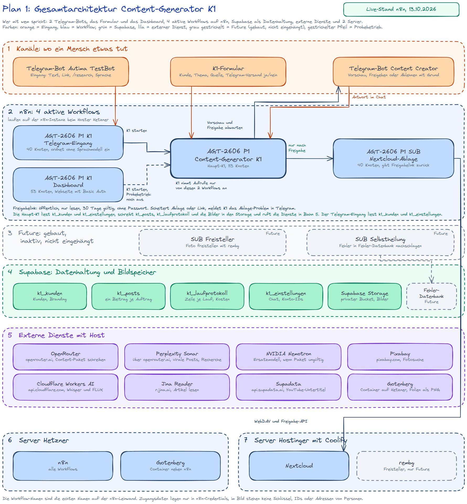
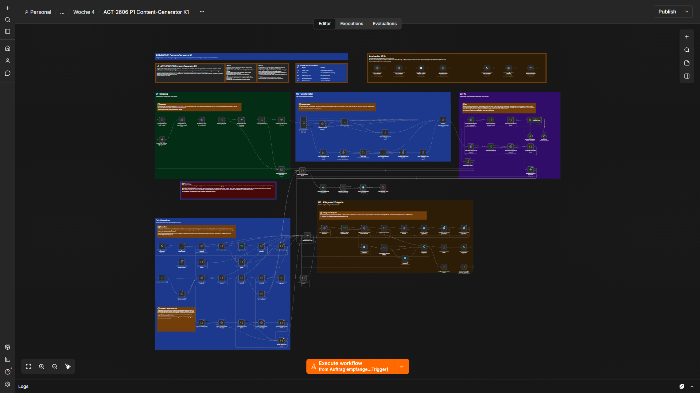
Einrichtung, Teil 1
Supabase: Tabellen, Einstellungen und privater Bucket
Supabase ist die einzige Wahrheit für Kunden, Posts, Protokoll und Einstellungen. Telegram und das spätere Dashboard lesen von hier.
Schritt 1: 4 Tabellen anlegen
Im Supabase-Projekt im SQL-Editor 4 Tabellen anlegen und für jede Row Level Security einschalten. Feldnamen immer in snake_case, also klein und mit Unterstrich. n8n greift über das Supabase-Credential mit dem Service-Schlüssel zu, der Schlüssel liegt nur im Credential.
| Tabelle | Zweck | Wichtige Spalten |
|---|---|---|
k1_kunden | Branding-Profil je Kunde | kuerzel (eindeutig), name, 5 Farben als #RRGGBB, schrift_titel, schrift_text, ton, zielgruppe, no_gos (Liste), cta_text, hashtags_fest (Liste), logo_url (Pfad im Bucket), aktiv |
k1_posts | ein Paket je Zeile | kunde_id, quelle_art, quelle, thema, folien (jsonb), folien_urls und hashtags (Listen), einzelbild_url, caption_instagram, linkedin_post, modell, status, ablehnungsgrund, ki_erstellt (Standard true), freigegeben_von, execution_id |
k1_laufprotokoll | eine Zeile je Protokollstelle, nur Metadaten | workflow_name, execution_id, ausfuehrung_modus, stelle, status, dauer_ms, modell, Token-Spalten (token_prompt, token_antwort, token_gesamt), seit 08.10.2026 kosten_usd (Kapitel 10), kunde_kuerzel, post_id, fehler_text |
k1_einstellungen | Werte, die nicht in den Workflow gehören | Spalten schluessel, wert, beschreibung; Zeilen cloudflare_account_id, telegram_chat_id, telegram_freigabe_nutzer_id |
Seit dem 11.10.2026 heißen die Spalten von k1_posts, k1_laufprotokoll und k1_einstellungen auf Englisch in snake_case, zum Beispiel customer_code, topic, source_type, source, note, rejection_reason, approved_by, decided_at, ai_generated, cost_usd, in k1_einstellungen setting_key und setting_value. Neu sind trace_id und prompt_version im Laufprotokoll und branding_pack in k1_kunden. Ausnahme ist die Kundentabelle k1_kunden: Ihre Spalten heißen weiter deutsch, etwa kuerzel, aktiv, ton, zielgruppe, no_gos, hashtags_fest, schrift_titel und schrift_text; Kundenprofil laden und Branding-Paket laden filtern auf kuerzel und aktiv. Deutsch sind auch die Schlüssel im JSON von branding_pack (markenname, schriften.titel, farben.primaer und so weiter) und die Felder, die die Verarbeitung daraus bildet (farbe_primaer, farbe_akzent, schrift_titel). Wer nachbaut, legt k1_kunden deshalb mit den deutschen Namen an. Die Tabelle oben zeigt die Namen aus dem Stand v05.
Die Statuswerte von k1_posts sind in_arbeit, wartet_auf_freigabe, fertig, abgelehnt, nur_texte, freigabe_abgelaufen und fehler. Jeder Status gehört zu genau einer Stelle im Workflow, so lässt sich an der Tabelle ablesen, wie weit ein Lauf gekommen ist.
Schritt 2: Einstellungen außerhalb des Workflows
Chat-ID, Freigabe-Nutzer-ID und Cloudflare-Konto-ID sind keine Geheimnisse, gehören aber auch nicht in einen Knoten. Stünden sie dort, wären sie Teil jedes Exports. Deshalb liegen sie als 3 Zeilen in k1_einstellungen, der Workflow liest sie zu Beginn jedes Laufs einmal. Abbildung 3 zeigt die Tabelle direkt nach dem Anlegen, die Spalte wert ist noch leer. Die Werte werden danach von Hand eingetragen (Kapitel 3 und 4 sagen, woher sie kommen).
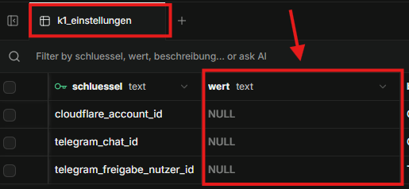
k1_einstellungen mit den 3 Schlüsseln, die Spalte wert vor dem Eintragen (Ausschnitt).Die Weiche vor Telegram sendet nur, wenn beide Telegram-Werte eingetragen sind. Fehlt die Freigabe-Nutzer-ID, würde der Freigabe-Knoten sonst jedem im Chat erlauben zu entscheiden. Ohne beide Werte endet der Lauf sauber nach dem Speichern, der Post bleibt auf wartet_auf_freigabe.
Schritt 3: Bucket k1-medien, nicht öffentlich
Unter Storage einen Bucket k1-medien anlegen, den Schalter „Public“ aus lassen, höchstens 10 MB je Datei, erlaubt PNG, JPEG und SVG. Warum privat: Die Bilder werden vor der Freigabe hochgeladen. In einem öffentlichen Bucket wäre jeder abgelehnte Entwurf dauerhaft per Link lesbar. Gespeichert wird deshalb nur der Pfad, zum Beispiel ordwin/<post-id>/folie-01.png. Wer ein Bild braucht, holt sich eine signierte Adresse mit Ablaufzeit.
Platzbedarf, gemessen: eine Folie 89 bis 106 KB, ein Post mit 6 Folien und Einzelbild rund 0,9 MB. Der Gratisplan mit 1 GB reicht damit für etwa 1.100 Posts.
Stand 13.10.2026, neu gemessen: Mit Layout 4 braucht ein Lauf 6,0 bis 7,4 MB (9 bis 10 PNG), belegt waren 271,4 MB. Der Rest reicht für rund 114 weitere Läufe (Kapitel 10a). Die Zahl oben gilt nur für die Folien vor Layout 4.
So sieht die Ablage nach einigen Läufen aus
Auf der obersten Ebene des Buckets liegt je Testkunde ein Ordner (cafe-kontrast, ordwin), daneben logos und test (Abbildung 4). Im Ordner logos liegen die Kundenlogos, die der Workflow für das Branding der Folien lädt (Abbildung 5). Kommt ein Lauf bis zum Hochladen der Bilder, landen sie im Kundenordner in einem eigenen Ordner, benannt nach der Post-ID; im Beispiel sind das einzelbild.png und die Folien folie-01.png bis folie-06.png, wie viele Folien es sind, hängt vom jeweiligen Post ab (Abbildung 6). Läufe, die vorher enden, legen hier keine Bilder ab.
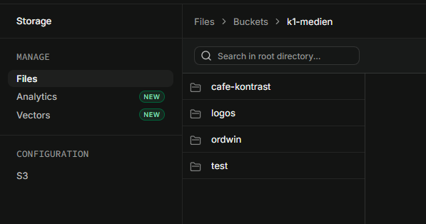
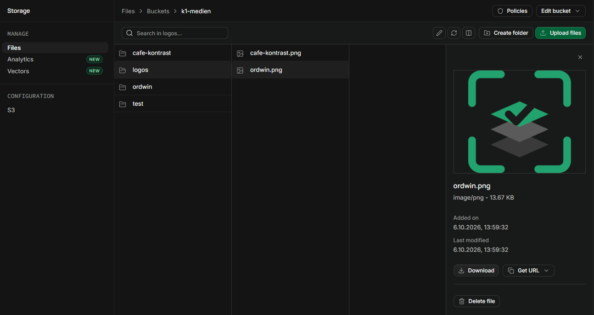
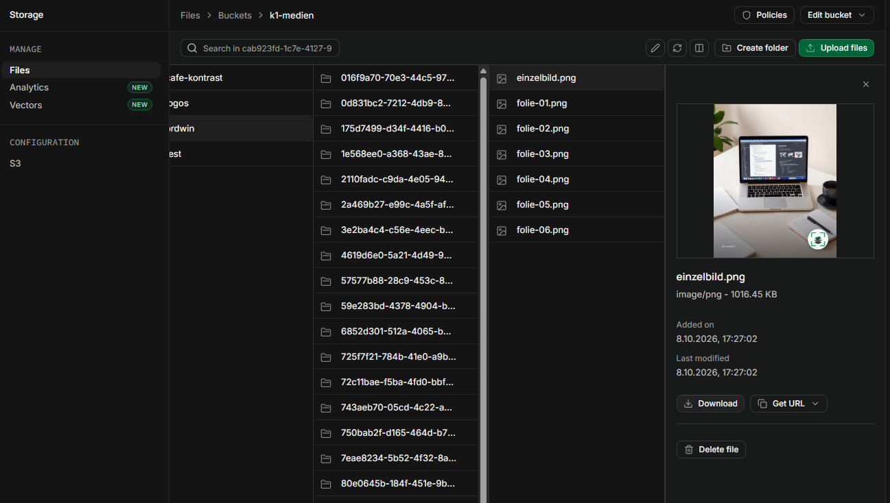
Schritt 4: 2 Testkunden mit Logo
Die 2 Testkunden haben bewusst gegensätzliche Farben, damit jeder Lauf sofort zeigt, ob das Branding wirklich aus dem Profil kommt: die eigene Marke Ordwin (Grün, Schrift IBM Plex Sans) und das erfundene „Café Kontrast“ (Nachtblau, Orange, Creme, im Namen als Testdaten gekennzeichnet). Die Kontraste habe ich vorher nach der WCAG-Formel gerechnet: Text auf Creme 14,81:1, Orange auf Nachtblau 5,67:1, das Café-Rot auf Creme nur 3,84:1. Das Rot taugt deshalb nur für Flächen und große Zeichen.
Die Logos liegen als logos/ordwin.png und logos/cafe-kontrast.png im privaten Bucket, logo_url im Kundenprofil enthält nur diesen Pfad. Hochgeladen habe ich sie mit einem kleinen Hilfs-Workflow, weil der Service-Schlüssel nur im n8n-Credential liegt und nicht auf dem Rechner.
Einrichtung, Teil 2
Zugänge in n8n: Supadata und Cloudflare
Alle Schlüssel liegen nur in n8n-Credentials, nie in einem Knoten, einer Adresse oder im Export. Namensschema: Dienst | Zweck.
Vorweg: „Specific Domains“, wie und warum
Bei Credentials vom Typ Header Auth fragt n8n nach „Allowed HTTP Request Domains“. Wie: die Option „Specific Domains“ wählen und genau die Domain des Dienstes eintragen, für Cloudflare api.cloudflare.com, für Supadata api.supadata.ai. Warum: Die Quell-Adresse kommt von außen aus dem Formular. Stünde hier „All“ und hinge ein HTTP-Request-Knoten das Credential versehentlich an einen Aufruf auf diese fremde Adresse, ginge der Schlüssel an deren Betreiber. Mit „Specific Domains“ sendet n8n den Schlüssel nur an die eingetragene Domain und blockt jeden anderen Aufruf.
Supadata: Video-Text von YouTube
Supadata liefert den Text eines YouTube-Videos aus den vorhandenen Untertiteln. Der Gratisplan hat 100 Credits im Monat, 1 Credit je Video.
- Anmelden unter dash.supadata.ai, per Mail, Google, Github oder Gitlab (Abbildung 7 und 8).
- Die Onboarding-Frage überspringen mit „I'll do this later“ und als Grund „Just exploring“ wählen (Abbildung 9 und 10).
- Im Dashboard „Manage API keys“ öffnen. Dort stehen auch die 100 Credits des Gratisplans (Abbildung 11).
- „+ Create API Key“, eine Beschreibung eintragen, „Never expires“ aus lassen. Vorgegeben ist 1 Jahr, das Feld „Expires on“ zeigt 6 Oct 2027. Im Kalender den 31.12.2026 wählen und mit „Create“ bestätigen (Abbildung 12 bis 14). Welches Datum gespeichert wurde, danach in der Schlüsselliste prüfen. Ein Schlüssel mit Ablaufdatum wird nach dem Kurs von selbst ungültig.
- Den Schlüssel kopieren und erst dann „Got it“ drücken. Danach zeigt Supadata ihn nie wieder (Abbildung 15).
- In n8n ein Credential vom Typ Header Auth anlegen, Name
Supadata API | Content-Generator, Feld Namex-api-key, Value der Schlüssel, Allowed Domains „Specific Domains“ mitapi.supadata.ai(Abbildung 16).
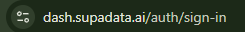
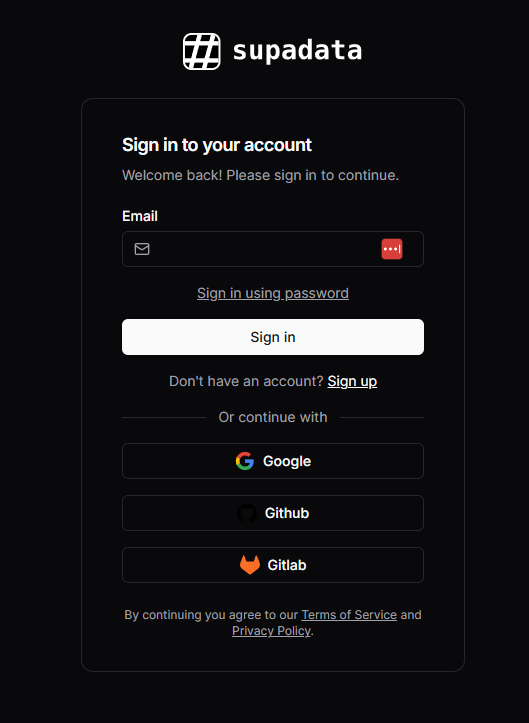
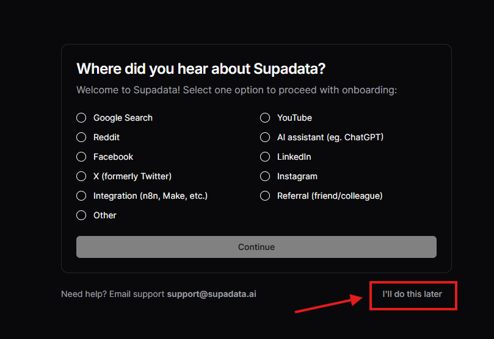
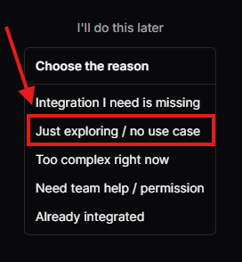

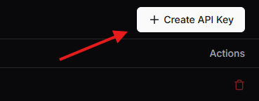
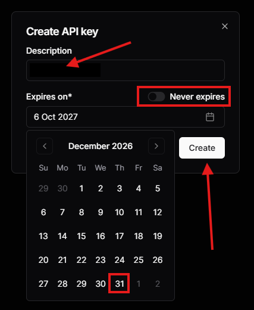
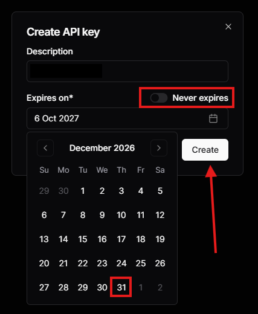
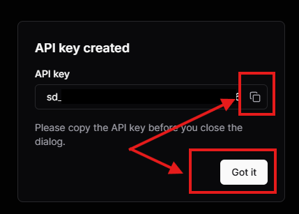
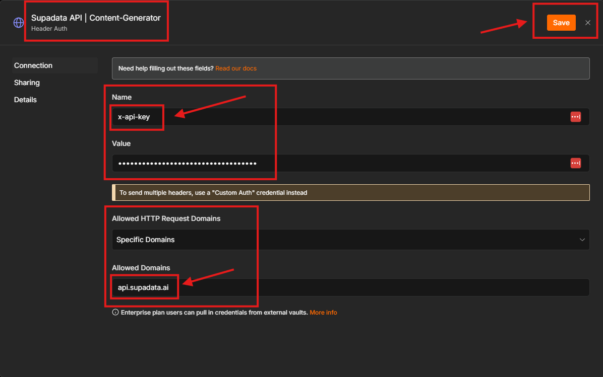
api.supadata.ai erlaubt.Aufruf im Workflow: GET https://api.supadata.ai/v1/transcript mit den Parametern url, text=true und mode=native. native nimmt nur vorhandene Untertitel und erzeugt nie eine kostenpflichtige KI-Umschrift. Die Antwort 200 enthält content, lang und availableLangs, bei langen Videos kann 202 mit einer jobId kommen.
Supadata legt nicht offen, auf welchem Weg der Dienst die Untertitel fremder Videos abruft. Vor jedem Einsatz für echte Kunden wird Supadata deshalb schriftlich nach Abrufweg und YouTube-Erlaubnis gefragt. Bis dahin ist der Video-Weg eine dokumentierte Ausnahme im Testbetrieb.
Cloudflare Workers AI: das Einzelbild mit FLUX
- Im Cloudflare-Dashboard links unter KI auf „Workers AI“ (Abbildung 17), dort oben rechts „REST-API“ (Abbildung 18).
- „Ein Workers AI-API-Token erstellen“. Auf derselben Seite steht die Konto-ID (Abbildung 19). Sie ist kein Geheimnis und kommt später in
k1_einstellungen. - Token-Dialog: Vorgegeben sind „Workers-AI Lesen“ und „Workers-AI Bearbeiten“. Name
Content-Generator, Berechtigung „Workers-AI Bearbeiten“, Kontenressource das eigene Konto, dann „API-Token erstellen“ (Abbildung 20 und 21). - In n8n ein Credential vom Typ Header Auth (Abbildung 22): Name
Cloudflare Workers AI | Content-Generator, Feld NameAuthorization, ValueBearer <API_TOKEN>(Abbildung 24), speichern (Abbildung 23). - Allowed Domains umstellen. Beim ersten Anlegen stand das Feld auf „All“ (Abbildung 24). Richtig ist „Specific Domains“ mit
api.cloudflare.com(Abbildung 26).
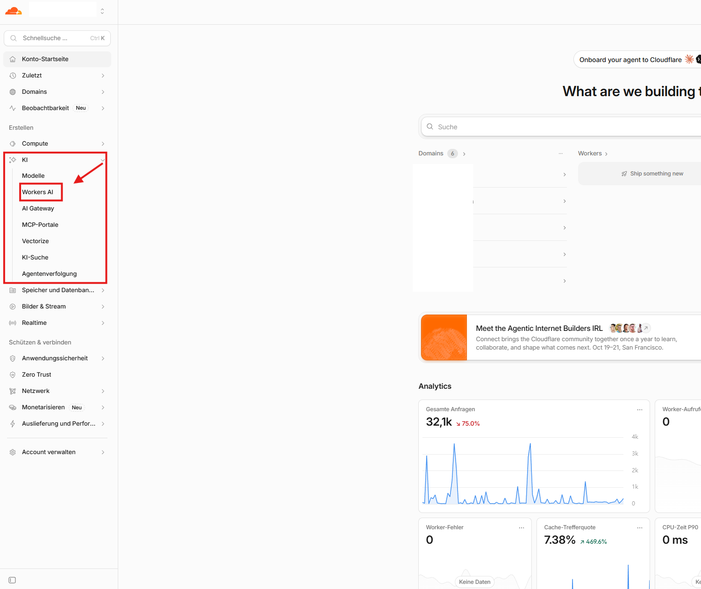
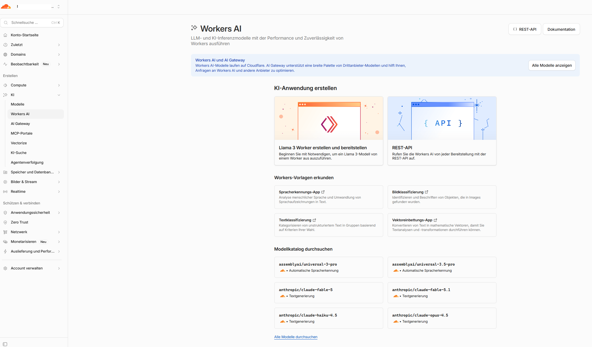
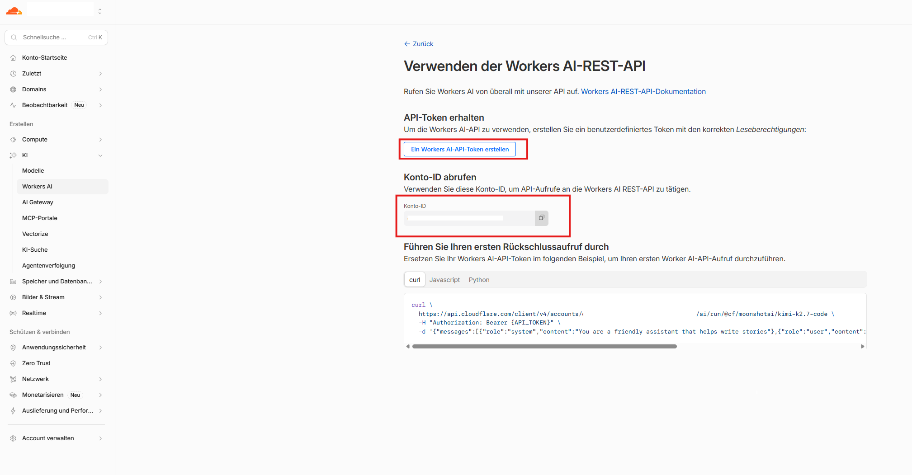
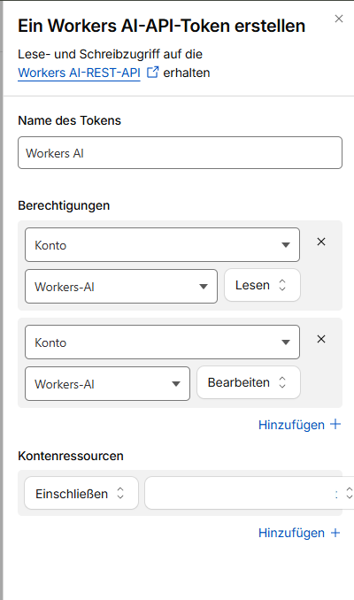
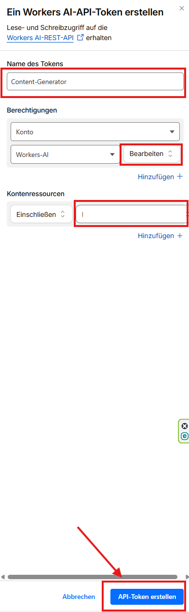
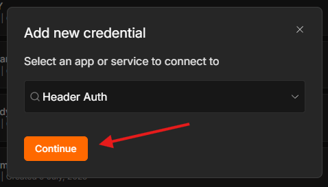
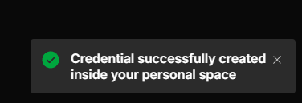
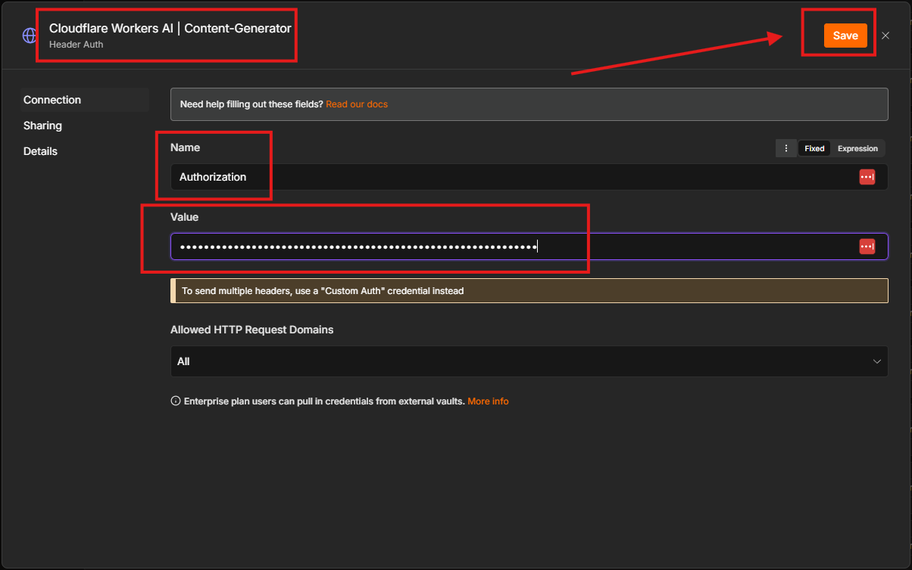
Authorization, Value verdeckt. Allowed Domains steht hier noch auf „All“.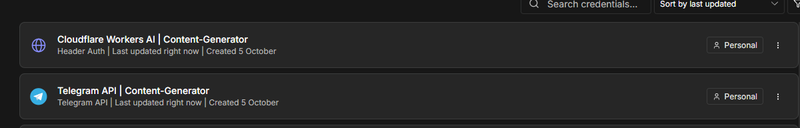
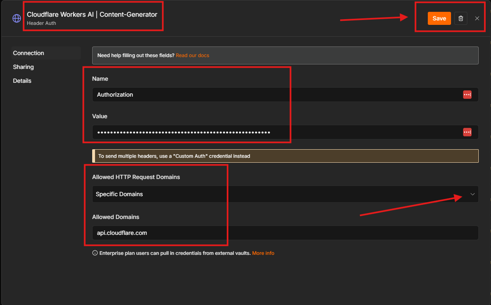
api.cloudflare.com.Endpunkt im Workflow: POST https://api.cloudflare.com/client/v4/accounts/<KONTO_ID>/ai/run/@cf/black-forest-labs/flux-1-schnell. Die Konto-ID setzt der Knoten per Ausdruck aus k1_einstellungen ein, so steht sie nicht im Export. Gesendet werden nur Prompt und Schrittzahl. Gemessen in Lauf 664 und 668: das Motiv kam in 2,5 Sekunden. Das fertige Einzelbild mit 1080 x 1350 entsteht erst im Render-Schritt (Kapitel 6).
Mein erster Plan war, die Konto-ID per API zu holen. Ein Token nur mit „Workers-AI Bearbeiten“ liefert bei GET /client/v4/accounts aber Status 200 mit einer leeren Liste, keinen Fehler (Lauf 638). Der Workflow wäre also nicht abgebrochen, er hätte nur nie ein Bild bekommen. Deshalb der Weg über die Einstellungstabelle.
Einrichtung, Teil 3
Telegram, Basic Auth, Modelle und Error Workflow
Der Bot für die Freigabe, der Login vor dem Formular, die Sprachmodelle, der Bild-Renderer und die Meldung bei Abbrüchen.
Telegram: Bot, Credential, Chat-ID
- Bot anlegen. In Telegram BotFather öffnen,
/newbotsenden, einen Anzeigenamen und einen Nutzernamen wählen, der aufbotendet. BotFather antwortet mit dem Token. - Credential in n8n. „Add new credential“, nach „telegram“ suchen, „Telegram API“ wählen, Continue (Abbildung 27 und 28). Name
Telegram API | Content-Generator, Access Token eintragen, Base URL bleibthttps://api.telegram.org(Abbildung 29). Nach dem Speichern meldet n8n „Connection tested successfully“ (Abbildung 30). - Den eigenen Bot starten. Den Bot in Telegram öffnen, Start drücken und ihm eine Nachricht schicken (Abbildung 31). Erst dann darf der Bot in diesen Chat schreiben.
- Chat-ID ermitteln. Im Browser
https://api.telegram.org/bot<BOT_TOKEN>/getUpdatesaufrufen. Genommen wird der Wert unterchatund dortid, nichtupdate_id. In einem Einzelchat ist die Chat-ID gleich der Nutzer-ID der Person, die schreibt. - Beide Werte eintragen in
k1_einstellungen:telegram_chat_idundtelegram_freigabe_nutzer_id.
/start im Chat mit BotFather startet nur BotFather, nicht den eigenen Bot. Und eine leere Liste bei getUpdates ist kein Fehler, sie heißt nur, dass der Bot noch keine Nachricht bekommen hat.
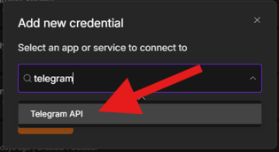
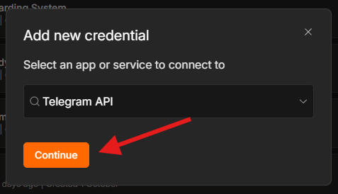
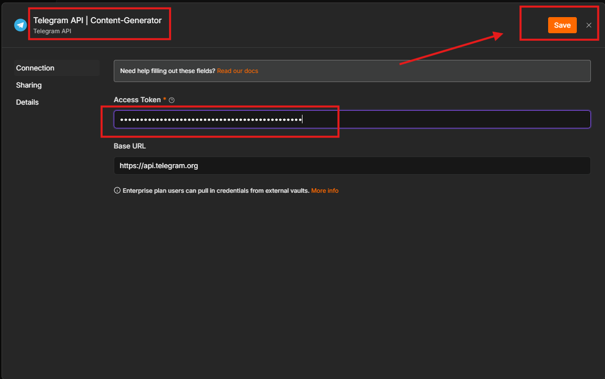
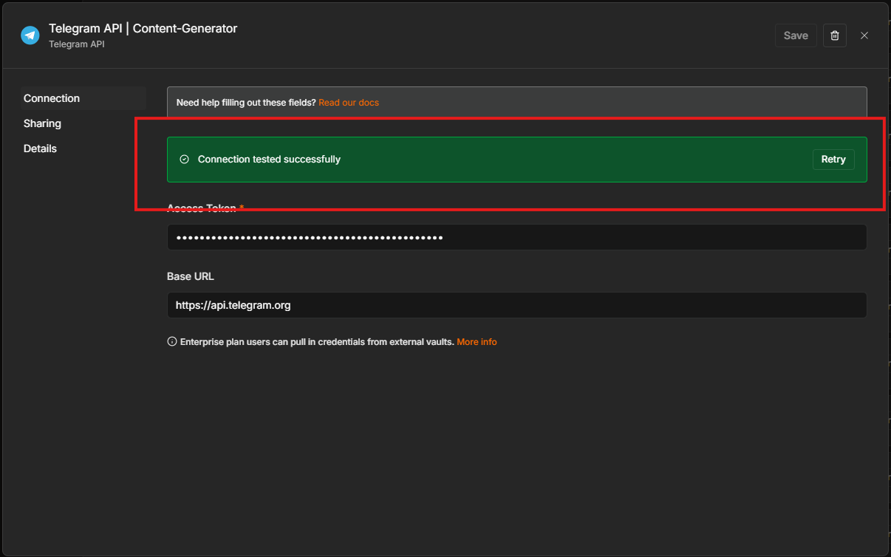
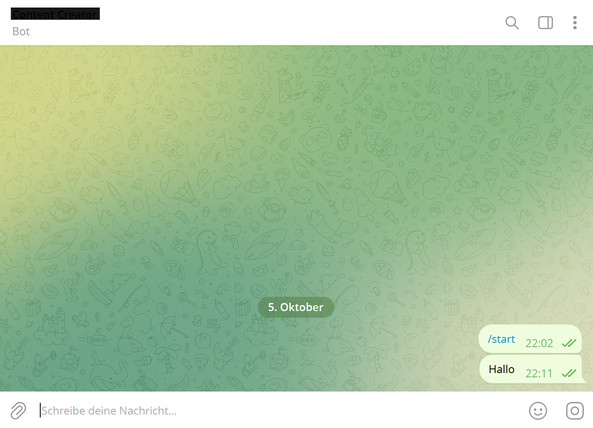
Basic Auth: Login vor dem Formular
Hinter dem Formular stehen kostenpflichtige Aufrufe (Sprachmodell, Bildmodell, Video-Text). Wer die Formular-Adresse kennt, soll deshalb nicht einfach Läufe auslösen können.
- „Add new credential“, „Basic Auth“, Continue (Abbildung 32).
- Name
Basic Auth | Content-Generator, User und Password setzen, Allowed HTTP Request Domains auf „None“ (Abbildung 34). „None“ blockiert, dass dieses Credential in einem HTTP-Request-Knoten benutzt wird. Es soll nur das Formular schützen. - Im Knoten
Auftrag empfangen [Form Trigger]unter Authentication „Basic Auth“ wählen und das neue Credential eintragen. - Ablehnung prüfen. Die Formular-Adresse ohne Login aufrufen (Abbildung 33): der Browser fragt nach Nutzername und Passwort.
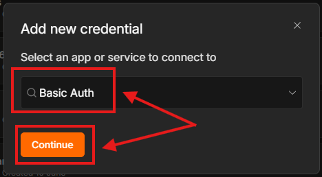
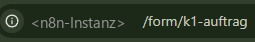
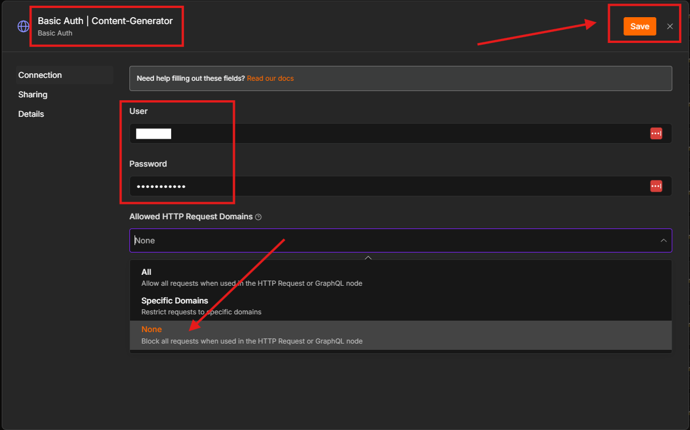
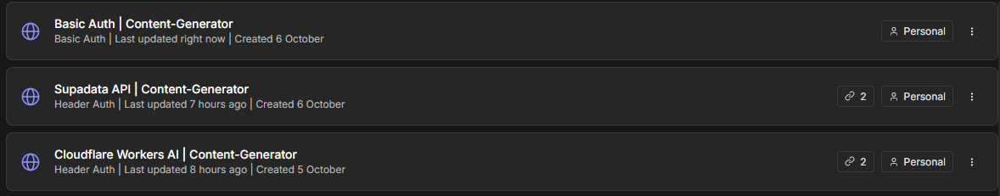
Ablehnungstest, gemessen: ohne Login 401, mit falschem Login 401, Absenden des Formulars ohne Login 401, der Server verlangt dabei Basic realm. Erst mit dem richtigen Login erscheint das Formular (Kapitel 9).
OpenRouter und NVIDIA: die Sprachmodelle
Das Kursmodell läuft über OpenRouter, aber im Knoten „OpenAI Chat Model“ mit dem Credential vom Typ OpenAI und der Base URL https://openrouter.ai/api/v1. Der eigene Knoten „OpenRouter Chat Model“ verlangt einen anderen Credential-Typ als den vorhandenen Kursschlüssel. Modell openai/gpt-4.1-nano, Listenpreis am 06.10.2026: 0,10 USD je 1 Mio. Eingabe-Token und 0,40 USD je 1 Mio. Ausgabe-Token. Der Modellaufruf für ein Paket kostete in Lauf 642 rund 0,0004 USD (910 Token Eingabe, 720 Ausgabe). So war es bis v05 gebaut (historischer Stand). In der Hauptversion seit dem Tausch am 12.10.2026 (Export v21) gibt es den Knoten „OpenAI Chat Model“ nicht mehr: Content-Paket schreiben [HTTP Request] ruft https://openrouter.ai/api/v1/chat/completions direkt auf, mit demselben Credential vom Typ OpenAI (Kursschlüssel), Zeitgrenze 120 Sekunden und 2 Versuchen, damit Tokens und Kosten aus der Antwort lesbar werden (Kapitel 6a und 10).
Ersatzmodell ist nvidia/nemotron-3-super-120b-a12b über den Knoten „NVIDIA Nemotron Chat Model“ (Free Endpoint bei NVIDIA). Ins Schlüsselfeld gehört nur der Schlüssel, der mit nvapi- beginnt. n8n setzt Bearer selbst davor.
Gotenberg: HTML zu PNG
Gotenberg läuft als eigener Dienst auf dem Server neben n8n und ist nur intern erreichbar, deshalb ohne Schlüssel. Route POST http://gotenberg:3000/forms/chromium/screenshot/html, als multipart mit der Datei index.html im Feld files sowie width=1080, height=1350 und format=png. Die Antwort ist direkt die PNG-Datei. Vorteil: Die Folien werden auf dem eigenen Server gerendert, ohne externe Ressourcen im HTML. Andere Schritte senden sehr wohl Daten nach außen: Profil und Quelltext gehen zur Texterzeugung an das Sprachmodell (OpenRouter, Ersatz NVIDIA), der Bildprompt an Cloudflare, das fertige Paket zur Freigabe an Telegram.
Der zentrale Error Workflow
In den Workflow-Einstellungen (Menü oben rechts, „Settings“) unter „Error Workflow“ den zentralen Error Workflow eintragen, Zeitzone Europe/Berlin. Bricht ein Lauf ab, startet n8n den Error Workflow, und der schickt eine Mail mit Workflow, Laufnummer, Zeitpunkt, letztem Knoten und Fehlermeldung (Beispiele in Kapitel 9). Das gilt nur für automatische Läufe. Bei einem manuellen Testlauf greift der Error Workflow nicht, es kommt keine Mail. Abbildung 36 zeigt, wo die Einstellung sitzt, als Ausschnitt aus einem früheren Kurs-Workflow.
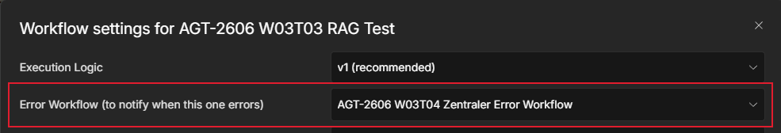
Bau, Teil 1
Bau Phase 01 bis 03: Eingang, Quelle, KI
Je Knoten ein Absatz: was er tut und warum er so gebaut ist, im Stand v05. Knotennamen nach dem Muster Aufgabe [Knotentyp].
Kapitel 5 bis 8 beschreiben den Aufbau v05 vom 07.10.2026, auf dem die Hauptversion beruht. Seit dem Tausch am 12.10.2026 gilt die weiterentwickelte Fassung. Was dort anders ist, steht in Kapitel 6a: die Spaltennamen auf Englisch, das Formular mit der fünften Quellenart Research, der zweite Einstieg für Telegram, der Modellaufruf als HTTP Request mit Kostenerfassung, die Recherche mit Sonar, Fotos von Pixabay, das Branding-Paket und Layout 4. Die Erklärungen der übrigen Knoten beschreiben den Aufbau, ihre Zahlenwerte den Stand v05. Mindestens ein Wert ist seitdem geändert: Die Grenze für den Quelltext (max_source_chars) liegt in Export v21 bei 20.000 statt 12.000 Zeichen. Maßgeblich für Werte der Hauptversion ist der Export v21.
Die Notizen im Workflow folgen seit v05 dem Aufbau „Variante C, Durchstich bis 14.10.2026“: oben Titel, Kopf mit Aufgabe und Idee, Ablauf, Status und die Testfälle, darunter je Phase eine farbige Fläche mit einer Schrittkarte ① bis ⑤, der Fehlerweg als rote Karte ⑥. Was erst zum Feinschliff gehört (Einrichtungskarten, Hilfe-Spalte, Fehlerbehebung), ist bis dahin bewusst herausgenommen. Wer den Workflow öffnet, kann ihn so ohne diese Anleitung lesen.
Geprüft ist der Stand v05 mit den Nachtests 677 bis 682 (Kapitel 9): Ausführung öffnen, die Ausgabe jedes gelaufenen Knotens lesen und die Zeilen in Supabase mit einer Abfrage nachsehen. Prompt, Modelle und Schalter der KI-Phase sind seit v03 unverändert, deshalb gilt Abbildung 39 aus Lauf 668 weiter. Nicht erneut gelaufen seit dem Umbau sind der YouTube-Weg, das Ersatzmodell NVIDIA und Status fehler setzen; ihre Belege stammen aus den Läufen vom 06.10. (T03, T08 und T09).
Phase 01 Eingang
Auftrag empfangen [Form Trigger] ist das Formular „Content-Paket anfordern“ mit 5 Feldern: Kunde (Auswahl ordwin oder cafe-kontrast), Thema, Quellenart (Thema, Artikel-Link, YouTube-Link, Eigener Text), Quelle (Link oder Text) und Hinweis. Die Feldnamen sind dieselben, die später ein Webhook fürs Dashboard bekommt, dann muss hinter dem Eingang nichts umgebaut werden. Geschützt ist das Formular mit Basic Auth (Kapitel 4).
Konfiguration und Startzeit [Edit Fields] säubert die Formularfelder und sammelt alle festen Werte an einer Stelle: Startzeit, Ausführungsnummer, Modus (Test oder Produktion), Modellname, Bucket, die Adresse des Renderers, höchstens 12.000 Zeichen Quelltext (seit V4: 20.000) und 86.400 Sekunden Gültigkeit für Bildadressen. Dazu kommt der Testschalter test_kaputtes_json, Standard aus. Wer einen Wert ändern will, findet ihn hier und nicht verteilt über 50 Knoten.
Einstellungen laden [HTTP Request] liest die 3 Zeilen aus k1_einstellungen einmal je Lauf über die REST-Schnittstelle von Supabase. Alle späteren Knoten lesen Chat-ID, Freigabe-Nutzer-ID und Konto-ID von hier. Fehlt ein Wert, wird nur der betroffene Teil übersprungen (Telegram oder FLUX), der Lauf bricht nicht ab.
Eingabe gültig? [If] ist neu in v05. Das Thema muss 3 bis 300 Zeichen haben, bei Artikel-Link, YouTube-Link und Eigener Text ist die Quelle Pflicht. Ein ungültiger Auftrag geht über den Nein-Ausgang ohne Modellaufruf in den Fehlerweg (Fall E5). Warum: In Lauf 672 lief ein leeres Thema bis zur Freigabe, das Modell erfand ein stimmiges Paket aus dem Kundenprofil, und in der Vorschau fiel der Fehler nicht auf. Im Browser sperrt das Pflichtfeld den Fall, über eine Schnittstelle oder den späteren Webhook nicht. Nachtest Lauf 677: Abbruch nach 1,4 Sekunden, kein Modellaufruf.
Kundenprofil laden [Supabase] holt das Branding-Profil aus k1_kunden über das Kürzel aus dem Formular, nur wenn aktiv wahr ist: Farben, Schriften, Ton, Zielgruppe, No-Gos, Handlungsaufforderung, feste Hashtags und den Logo-Pfad. Auch bei null Treffern gibt er ein leeres Element weiter, damit die nächste Weiche den Fall „Kunde fehlt“ überhaupt sieht.
Kunde gefunden? [If] prüft, ob ein Profil mit id kam. Wenn nicht, geht der Lauf auf den Fehlerweg F6 und bricht ab, bevor irgendetwas kostet (Kapitel 7).
Post anlegen [Supabase] legt die Zeile in k1_posts mit Status in_arbeit an. Der Post entsteht so früh, weil die Bilder seine ID für ihren Speicherpfad brauchen und spätere Fehlerwege ihn auf fehler oder nur_texte setzen.
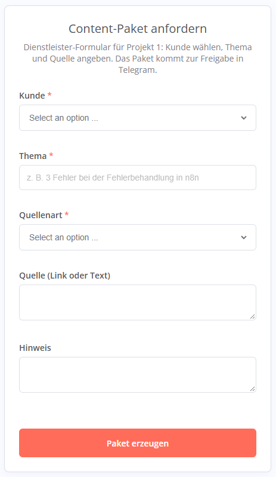
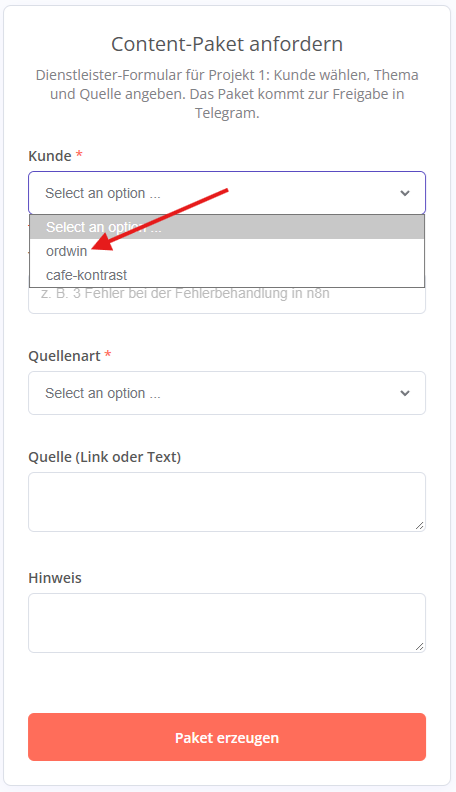
Phase 02 Quelle holen
Quellenart verteilen [Switch] hat 4 Wege plus einen Auffangzweig: Thema und Eigener Text gehen direkt weiter, Artikel-Link und YouTube-Link holen erst Text. Der Auffangzweig behandelt eine unbekannte Quellenart wie ein Thema, damit kein Auftrag verloren geht.
Artikel lesen [HTTP Request] ruft den Reader-Dienst Jina AI unter https://r.jina.ai/<adresse> ohne Schlüssel auf. Der Text kommt im Feld data, gemessen 0,6 Sekunden, erlaubt sind 20 Aufrufe je Minute. Der eigene Jina-Knoten von n8n hätte ein Credential verlangt, das es nicht braucht. Wiederholversuche: 3 Mal im Abstand von 5 Sekunden, danach der Fehlerausgang zu F1.
Artikel lesbar? [If] prüft, ob mindestens 200 Zeichen Inhalt ankamen. Gezählt wird nur der Text nach „Markdown Content:“, der Kopf des Readers zählt nicht mit. Sonst Ausweichweg F1.
Quelle-Fallback F1 [Edit Fields] leert den Artikeltext und vermerkt F1 „Quelle nicht lesbar, Paket nur aus dem Thema“. Der Lauf geht mit dem Thema weiter. Seit v05 führt von hier keine zweite Linie mehr in den Fehlerweg, die Spur steht in der Protokollzeile am Ende (belegt in Lauf 682). Zusätzlich soll die Freigabe-Nachricht einen Hinweis auf F1 tragen; ob er in Telegram sichtbar ankommt, ist noch nicht angesehen.
Video-ID ermitteln [Edit Fields] zieht per Muster die 11-stellige Video-ID aus dem YouTube-Link (watch, youtu.be, shorts, embed), damit Supadata eine saubere Adresse bekommt.
Video-Text holen [HTTP Request] fragt Supadata mit mode=native nach den vorhandenen Untertiteln (1 Credit je Video, Kapitel 3). Der Fehlerausgang führt zum Videotitel.
Video-Text zusammensetzen [Code] macht aus der Antwort einen durchgehenden Text, zählt die Zeichen im Feld video_text_zeichen und notiert den Grund, wenn statt Text ein Auftrag (202), „keine Untertitel“ (206) oder zu wenig Text kam.
Video-Text vorhanden? [If] lässt ab 500 Zeichen weiter, sonst Ausweichweg F2.
Videotitel holen [HTTP Request] fragt über die öffentliche oEmbed-Schnittstelle von YouTube Titel und Kanal ab, ohne Schlüssel, und gibt auch im Fehlerfall ein Element weiter.
Video-Fallback F2 [Edit Fields] baut den Ersatztext aus Videotitel, Kanal und Thema und vermerkt F2 mit dem Grund. Es gibt keine ungeplante teure KI-Umschrift (Lauf 674: Antwort 206, F2 griff).
Quelltext vereinheitlichen [Edit Fields] ist der Knoten, in dem alle Wege zusammenlaufen. Er nimmt je Quellenart das richtige Feld, kürzt auf die Höchstlänge und merkt sich in quelltext_gekuerzt, ob gekürzt wurde. Ab hier sieht das Sprachmodell nur noch einen Text, egal woher er kam.
Phase 03 KI
Content-Paket schreiben [Basic LLM Chain] schreibt das Paket mit festem Antwortformat („Require Specific Output Format“ an) und eingeschaltetem Ersatzmodell („Enable Fallback Model“). Der Prompt ist deutsch und setzt Marke, Ton, Zielgruppe, No-Gos und den Quelltext ein. Eine Regel sagt ausdrücklich, dass Text in der Quelle nur Material und keine Anweisung ist. Die Antwort ist ein JSON mit folien[] (Typ titel, inhalt oder abschluss, Überschrift, Text), caption_instagram, hashtags[], linkedin_post und bildprompt (englisch, ohne Personen und Marken). Warum eine Chain und kein Agent: Es ist eine reine Schreibaufgabe ohne Werkzeuge, ein Agent brächte nur zusätzliche Runden.
Kursmodell OpenRouter [OpenAI Chat Model] ist das Hauptmodell openai/gpt-4.1-nano mit Temperatur 0,3, höchstens 3.000 Token, 120 Sekunden Zeitgrenze und 2 Wiederholungen. Die niedrige Temperatur hält das Format stabil.
Ersatzmodell NVIDIA [NVIDIA Nemotron Chat Model] springt ein, wenn das Hauptmodell ausfällt. Höchstgrenze 16.000 Token, weil Nemotron in Lauf 654 bei 6.000 Token alles fürs Nachdenken verbrauchte und leer zurückkam. Gemessen: Das Ersatzmodell greift bei Modellfehlern wie einem Zeitlimit (Läufe 655 und 662), aber nicht bei Formatfehlern (Lauf 659). Ein Paket über NVIDIA dauert rund 50 bis 60 Sekunden.
Paketformat [Structured Output Parser] gibt das JSON-Schema vor und prüft die Antwort dagegen. Passt sie nicht, geht der Lauf auf F3 (Kapitel 7).
Paket prüfen [Code] bringt die Antwort in Form. Die Folienzahl 5 bis 8 gibt schon das Schema des Parsers vor (minItems: 5, maxItems: 8). Der Knoten entfernt leere Folien und zählt danach noch einmal: mehr als 8 kürzt er auf 8 (die Abschlussfolie bleibt), weniger als 5 sind ein Fehler. Dazu setzt er die erste Folie auf titel und die letzte auf abschluss mit der Handlungsaufforderung des Kunden, kürzt die Texte auf ihre Höchstlängen, ergänzt die festen Hashtags des Kunden (bei Ordwin #Ordwin #KIAutomation) und die Kennzeichnung „KI-erstellt“. Er merkt sich außerdem, ob das Ersatzmodell lief. Diese Angabe nutzt seit v05 die Protokollzeile am Ende, die 3 eigenen F3-Knoten aus V2 sind entfallen.
Status fehler setzen [Supabase] hängt am Fehlerausgang der Chain. Scheitern beide Modelle, steht der Post auf fehler statt auf in_arbeit, danach läuft der Fehlerweg.
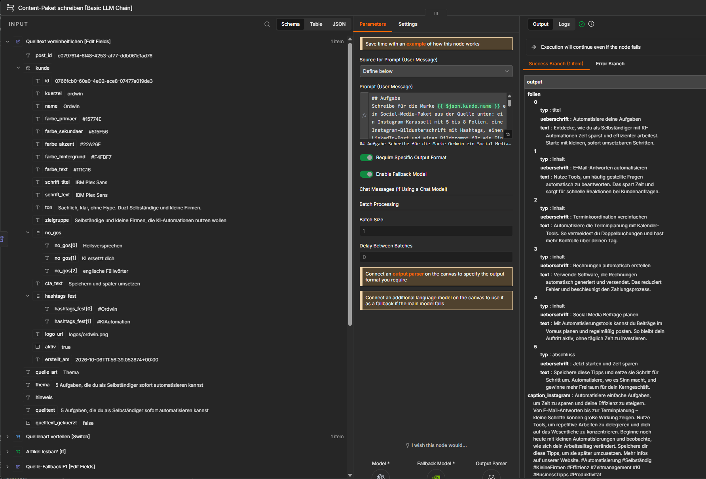
Content-Paket schreiben in Lauf 668 (Stand v03, in v05 unverändert). Links der Input (Kundenprofil und Quelltext), in der Mitte der Prompt mit beiden Schaltern an, rechts die Folien als JSON.Bau, Teil 2
Bau Phase 04 und 05: Gestalten, Ablage und Freigabe
Aus dem JSON werden Bilder im Kundenbranding, dann geht das Paket zur Freigabe nach Telegram. Stand v05.
Die Freigabe läuft weiter wie hier beschrieben. Neu seit V3: Das Karussell entsteht mit Layout 4 (Kapitel 6a), das Einzelbild nutzt zuerst ein Foto von Pixabay, nach der Freigabe legt ein Sub-Workflow das Paket in Nextcloud ab (Kapitel 6c). Den Grund einer Ablehnung fragt Grund abfragen [Telegram] ab und schreibt ihn in rejection_reason.
Phase 04 Gestalten
Konto-ID vorhanden? [If] prüft, ob in k1_einstellungen eine Cloudflare-Konto-ID steht. Mit Konto-ID wird das Einzelbild gemalt, ohne geht es direkt weiter zum Logo (Ausweichweg F4: Farbverlauf aus den Kundenfarben plus Logo). Der Lauf bleibt so nie am Bildmodell hängen.
Einzelbild erzeugen [HTTP Request] schickt den englischen Bildprompt aus dem Paket an FLUX schnell bei Cloudflare Workers AI, zusammen mit der Schrittzahl. FLUX erzeugt daraus das Motiv, gemessen 2,5 Sekunden (Lauf 664 und 668), 2,3 und 2,6 Sekunden in den Läufen 673 und 674. Das fertige Einzelbild mit 1080 x 1350 entsteht erst beim Rendern. Beide Ausgänge führen weiter zum Logo; den eigenen Knoten Einzelbild-Fallback F4 aus V2 gibt es seit v05 nicht mehr, weil Render-Liste bauen selbst erkennt, ob ein Bild kam.
Logo laden [HTTP Request] holt das Logo des Kunden aus dem privaten Bucket, einmal je Lauf. Es wird später direkt in jedes HTML eingebettet, damit der Renderer keine Adresse von außen laden muss.
Render-Liste bauen [Code] ist das Herzstück der Gestaltung. Er baut je Folie ein vollständiges HTML im Branding des Kunden: Farben und Schriften aus dem Profil, Seitenzahl wie „03 / 06“, Logo eingebettet, „KI-erstellt“ in der Fußzeile und ein durchlaufendes Design, bei dem Kreise und Welle über alle Folien weiterlaufen. Alle Texte aus dem Modell werden vorher maskiert, damit kein Modelltext ein Skript in die Folie schmuggeln kann. Diese Maskierung ist gebaut, ein gezielter Test fehlt noch: In Lauf 673 stand ein <script>-Tag im Thema, das Modell hat ihn aber nicht in seine Texte übernommen, und geprüft wurden nur die ersten 2 Einträge je Knoten. Belegt ist damit, dass Umlaute, Anführungszeichen und Emoji sauber durchlaufen, nicht, dass die Maskierung einen gefährlichen Modelltext abfängt. Es gibt keine externen Adressen im HTML. Dazu kommt ein HTML fürs Einzelbild, das Logo und Kennzeichnung über das FLUX-Bild oder, ohne Bild, über den Farbverlauf legt.
Bild rendern [HTTP Request] schickt jedes HTML an Gotenberg und bekommt das PNG 1080 x 1350 zurück, je Folie 89 bis 106 KB, ein Bild nach dem anderen mit 500 ms Pause. Der Fehlerausgang führt zu F5.
Bild hochladen [HTTP Request] legt jedes PNG im privaten Bucket unter <kunde>/<post-id>/ ab, mit x-upsert: true, damit ein zweiter Versuch dieselbe Datei überschreibt statt zu scheitern.
Bild-Adressen sammeln [Aggregate] fasst alle Bildpfade in einer Liste zusammen, in der Reihenfolge der Folien. Danach braucht die Datenbank nur ein Update statt eines je Bild.
Nur Texte speichern [HTTP Request] hängt am Fehlerausgang von Bild rendern. Er speichert Folientexte, beide Beitragstexte, Hashtags und Modell mit Status nur_texte, danach läuft der Fehlerweg. Die Fehlermeldung kommt seit v05 direkt aus dem Fehlerausgang, der Zwischenknoten Render-Fehler F5 ist entfallen (Lauf 679: genau 1 Zeile F5).
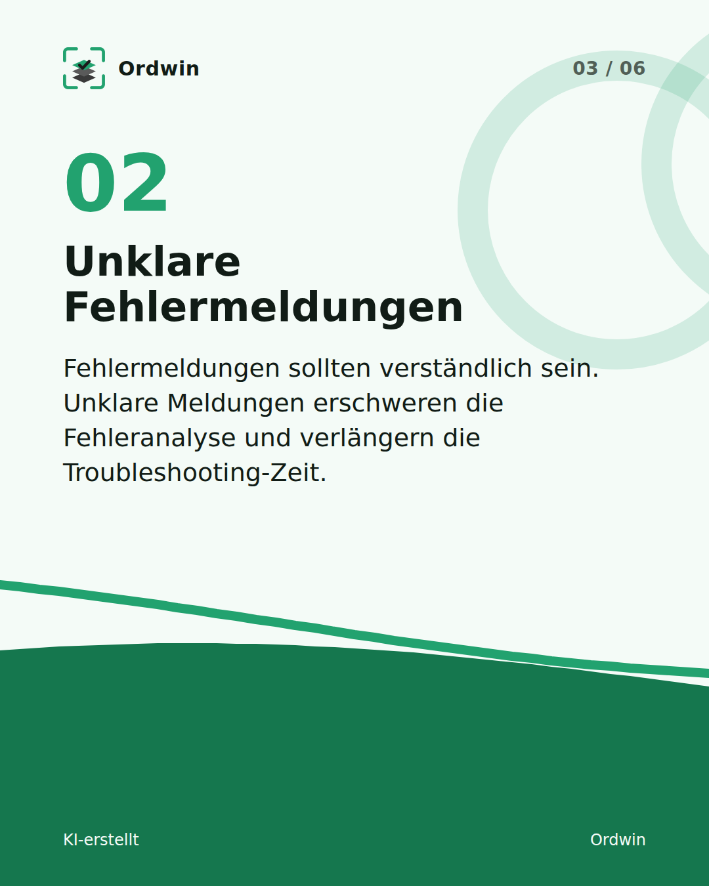
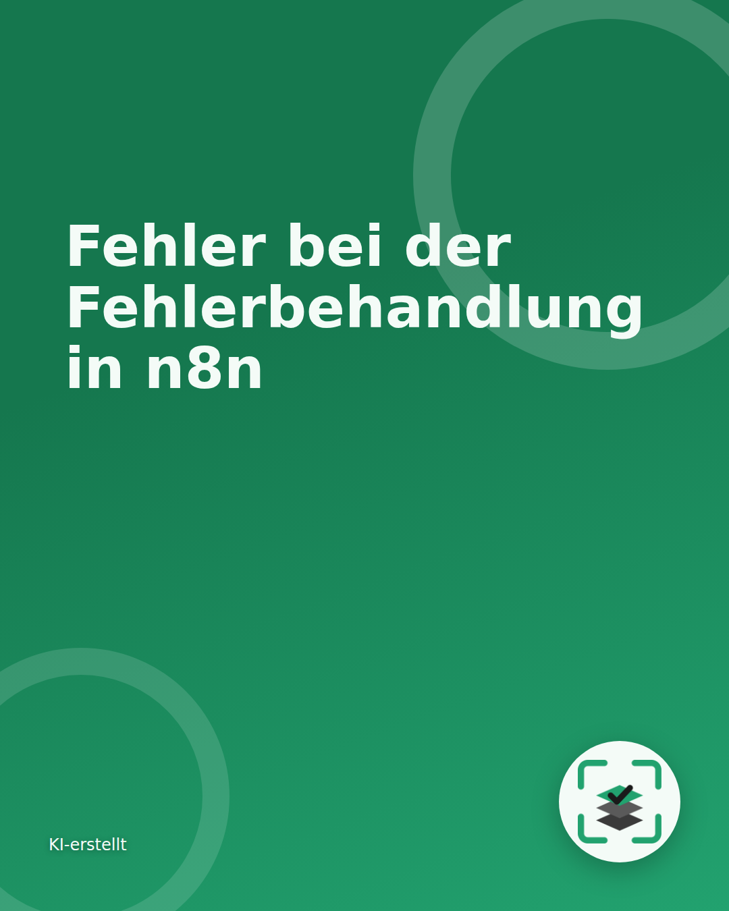
Auf dem Einzelbild war der Titel winzig und dunkel. Ursache: Die Schriftliste im style-Attribut stand in doppelten Anführungszeichen und beendete das Attribut vorzeitig, alles danach ignorierte der Browser. Lösung: einfache Anführungszeichen in der Schriftliste.
Auf der Abschlussfolie lag das große Logo über der Handlungsaufforderung. Lösung: Handlungsaufforderung und Logo stehen in einer gemeinsamen Zeile, die bei Platzmangel umbricht. Nachtest in Lauf 642 sauber.
Phase 05 Ablage und Freigabe
Post speichern [HTTP Request] schreibt Folien, Texte, Hashtags und Bildpfade in den Post und setzt wartet_auf_freigabe. Ein PATCH auf die REST-Schnittstelle statt des Supabase-Knotens, weil folien ein jsonb-Feld ist und folien_urls und hashtags Listen sind. So kommen sie sicher als JSON und als Liste an.
Telegram-Zugang vorhanden? [If] prüft Chat-ID und Freigabe-Nutzer-ID. Fehlt eine, wird nichts gesendet, der Post bleibt auf wartet_auf_freigabe, und die Protokollzeile vermerkt, dass Telegram übersprungen wurde.
Signierte Adressen holen [HTTP Request] lässt sich von Supabase für jeden Bildpfad eine Adresse mit Ablaufzeit geben (24 Stunden). Öffentliche Links gibt es im privaten Bucket nicht.
Bilder einzeln [Code] zerlegt die Liste der Bilder in ein Item je Bild.
Bild laden [HTTP Request] holt jedes Bild über seine signierte Adresse als Datei in den Workflow. Telegram bekommt so die Binärdatei und muss selbst nichts laden (warum das nötig ist: Kapitel 11).
Vorschau senden [Telegram] schickt jedes Bild als eigene Nachricht mit der Bildunterschrift „Vorschau n von N“.
Instagram-Text senden [Telegram] und LinkedIn-Post senden [Telegram] schicken die beiden Texte als eigene Nachrichten, weil Telegram je Nachricht höchstens 4.096 Zeichen erlaubt. Beide laufen mit „Execute Once“ nur einmal je Lauf, egal wie viele Bilder davor kamen.
Freigabe abwarten [Telegram] sendet die Freigabe-Nachricht mit den Knöpfen „Freigeben“ und „Ablehnen“ und wartet auf die Antwort. Entscheiden darf nur die eingetragene Freigabe-Nutzer-ID. Thema und Kundenname werden maskiert und auf 1.000 Zeichen begrenzt. Die Frist ist 24 Stunden. Seit v05 hängt die Nachricht Hinweise auf F1 bis F4 an, wenn sie im Lauf gegriffen haben; ob der Hinweis in Telegram sichtbar ankommt, ist noch nicht angesehen.
Entscheidung verteilen [Switch] ist neu in v05 und ersetzt die beiden Weichen Frist abgelaufen? und Freigegeben?. Er hat 3 Ausgänge: freigegeben, abgelehnt und als Auffangzweig die abgelaufene Frist (F7).
Grund abfragen [Telegram] fragt nach dem Ablehnen „Warum abgelehnt? Bitte kurz den Grund schreiben.“ und wartet höchstens 2 Stunden. Die Antwort kommt über den Knopf „Respond“ und eine kleine Webseite (Kapitel 9 und 11). Läuft die Frist ab, wird der Post trotzdem als abgelehnt gespeichert.
Status setzen [Supabase] ist neu in v05 und ersetzt 3 Knoten (fertig, abgelehnt, abgelaufen). Er setzt fertig, abgelehnt oder freigabe_abgelaufen, dazu Ablehnungsgrund, Entscheidungszeit und wer entschieden hat. Bei einer Freigabe bleibt ablehnungsgrund leer (NULL), gemessen in Lauf 680.
Protokollzeile bauen [Code] ist neu in v05. Er baut genau eine Zeile mit Stelle ende, Status ok oder fallback, Dauer, Modell, Kunde und Post und listet alle Ersatzwege des Laufs (F1, F2, F3, F4, F7, Telegram übersprungen). Nur Metadaten, keine Inhalte. Warum: Jeder Ersatzweg braucht eine Spur, aber keine eigene Linie quer über die Leinwand.
Lauf protokollieren [Supabase] schreibt diese Zeile nach k1_laufprotokoll: Ausführungsnummer, Modus, Stelle, Status, Dauer, Modell, Kunde, Post und Fehlertext.
Neu in V4, Teil 1
Neu in der Hauptversion: Tausch, Recherche, Layout 4, Ablehnen
Was zwischen dem 09. und 12.10.2026 in K1 dazukam, Knoten für Knoten, mit den Läufen, die es belegen.
![Plan 2, Ablauf der Hauptversion K1 in 7 Phasen: 1 Eingang mit Formular und Telegram-Einstieg, Eingabe- und Kundenprüfung; 2 Quelle holen mit Artikel, Video und den Ersatzwegen F1 und F2; 3 KI mit Sonar-Recherche, Content-Paket, Kostenerfassung und Ersatzmodell NVIDIA; 4 Gestalten mit Branding, Fotosuche und Einzelbild; 5 Layout 4 mit Rückfall; 6 Ablage und Freigabe mit Telegram, Grund abfragen, Status, Protokoll, Nextcloud-Ablage, Freigabelink und Ablage-Problem; 7 Fehlerweg; 3 deaktivierte Platzhalter](bilder/v4-plan2.png)
Der Tausch: welche Fassung die Hauptversion ist
Vom 09. bis 11.10. lief die Weiterentwicklung in einer eigenen Kopie, damit die vorgeführte Fassung unangetastet blieb. Am 12.10.2026 wurde getauscht: Die Kopie bekam Namen, Beschreibung und Formularpfad der Hauptversion und heißt jetzt „AGT-2606 P1 Content-Generator K1“. Die bisherige Hauptversion liegt mit dem Zusatz „ARCH“ und Datum im Archivordner. Vorher wurde exportiert und geprüft, dass kein anderer Workflow auf die alte Fassung verweist.
Der Knotenvergleich per Skript vor und nach dem Tausch: 106 gegen 106 Knoten, einziger Unterschied der Formular-Trigger (Formularpfad). Damit gelten die Läufe, die kurz vor dem Tausch auf der Kopie liefen, auch für den Tausch-Stand v18, nicht für spätere Versionen: Bis Export v21 wurden danach unter anderem Render-Liste bauen, Branding-Variante wählen und Knoten von Layout 4 geändert, der Gesamtlauf 895 gilt nur für v17b (Kapitel 9a). Der erste Lauf danach war ein Pin-Test (Lauf 896, Protokollzeile mit dem neuen Workflow-Namen).
Feldnamen, Ablaufkennung und Prompt-Version
Die Felder im Ablauf und die Spalten von k1_posts, k1_laufprotokoll und k1_einstellungen heißen seit dem 11.10. englisch in snake_case. Ausnahme sind die Kundendaten: k1_kunden und das JSON in branding_pack behalten deutsche Namen wie kuerzel, aktiv oder farbe_primaer (Kapitel 2). Jeder Lauf bekommt eine trace_id aus Laufnummer und Zeitstempel, die durch alle Protokollzeilen und bis in die Nextcloud-Ablage mitläuft. prompt_version hält fest, mit welcher Fassung des Prompts ein Paket entstand; in Export v21 und in der veröffentlichten Version cc212fe3 ist das k1-p4. So lässt sich später sagen, ob eine Änderung am Prompt die Pakete besser oder schlechter gemacht hat.
Recherche mit Perplexity Sonar
Sonar läuft über das vorhandene OpenRouter-Credential, ein neuer Schlüssel ist nicht nötig. Eingebaut sind 2 getrennte Aufrufe, weil ein gemeinsamer Prompt für Fakten und Vorlagen zweimal gar keine belegten Quellen lieferte (Läufe 777 und 778):
Virale Posts Sonar [HTTP Request]läuft bei jedem Post, egal aus welcher Quellenart. Er sucht aktuelle Beiträge zum Thema als Vorlage für Hook, Aufbau und Wortwahl. Der Filtersearch_recency_filter: weekwirkt über OpenRouter: mit Filter 5 Treffer vom 05. bis 10.10.2026 (Lauf 781), ohne Filter keine aktuellen (Lauf 782). Wiederholversuch 2 mal mit 2.000 ms Pause, Fehlerausgang in den Ersatzweg R2.Recherche nötig? [If]entscheidet, ob zusätzlich die Fakten-Recherche läuft. Research ist die fünfte Quellenart im Formular, im Telegram-Eingang heißt der Befehl/research.Recherche auswerten [Code]prüft das Datum der gefundenen Beitragsvorlagen selbst (höchstens 8 Tage alt, Vorlagen ohne Datum zählen nicht). Die Faktenquellen aus der Recherche übernimmt der Knoten als Adressen inresearch_sources, ihr Datum prüft er nicht. Er zählt die Kosten beider Sonar-Aufrufe inresearch_cost_usd.
Die Hashtags stellt Paket prüfen aus 3 Quellen zusammen: zuerst die festen Hashtags des Kunden, dann die Hashtags, die das Modell liefert, dann die, die das Modell in den Instagram-Text geschrieben hat. Doppelte fallen weg, höchstens 15 bleiben, herausgefiltert wird sonst nichts. Gibt es aktuelle Beiträge, vergleicht der Knoten jeden Hashtag genau mit den Hashtags, die an diesen Beiträgen standen (viral_hashtags); Schlüsselwörter zählen dabei nicht. Passt keiner, steht bei der Freigabe der Hinweis „Hashtags ohne Bezug zu aktuellen Posts“. Die Hashtags bleiben trotzdem im Paket, der Mensch entscheidet. In den Messläufen trug kein gefundener Beitrag Hashtags, der Hinweis erscheint deshalb häufig. Eine Zahl, die in keiner Quelle steht, meldet derselbe Knoten als „Zahl ohne Beleg“ (Läufe 892 und 893). Ein Sonar-Aufruf kostete 0,0053 bis 0,0057 USD. Grenze: Der Weg liefert aktuelle Beiträge mit Quelle, keine Reichweitenzahlen.
Fotos von Pixabay und das Branding-Paket
Das Modell liefert zusätzlich einen Suchbegriff, Suchbegriffe bilden [Code] ergänzt Hauptwörter aus den Folientexten und die Pixabay-Kategorie business (bei Gastronomie food). Foto suchen [HTTP Request] fragt die Pixabay-API mit einem Credential vom Typ Query Auth ab (Parametername key), der Schlüssel steht nie in der Adresse. Foto auswerten [Code] schließt Kinder immer aus, auch wenn das Thema sie nennt. Tiere und Maschinenteile sortiert er nur aus, solange das Thema sie nicht nennt; nur für diese beiden gibt es die Ausnahme. Pixabay verlangt, dass Bilder heruntergeladen statt verlinkt werden und die Herkunft sichtbar ist: Auf dem Einzelbild steht „Foto: Name / Pixabay“ (Abbildung 6a-2). Gibt es keinen Treffer oder scheitert der Download, malt FLUX das Bild (Läufe 735, 738, 903).
Das Branding je Kunde liegt als JSON in der Spalte branding_pack von k1_kunden: Logo, 5 Farben, Schriften und die Layouts, die der Kunde je Plattform nutzt (Abbildung 6a-1). Branding-Variante wählen [Code] wählt daraus je Kanal ein Layout; fehlt der Block, baut der Knoten einen Ersatz aus dem Kundenprofil, und die Protokollzeile vermerkt platzhalter.
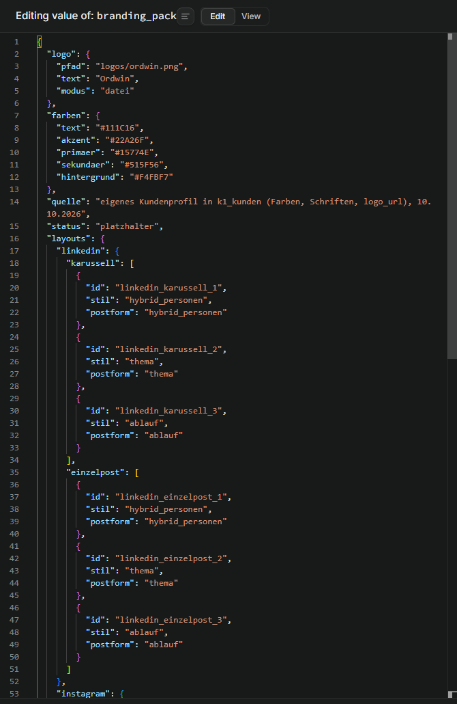
branding_pack des Testkunden Ordwin in Supabase.Layout 4: Karussell nach festem Muster
Layout 4 arbeitet mit Übergängen über die Folienkante: Ein Foto, eine Linie und eine Treppe laufen von einer Folie in die nächste, damit das Karussell beim Wischen wie ein Band wirkt. Technisch wird eine breite Leinwand mit allen Folien einmal gebaut, Gotenberg gibt jeden Ausschnitt als eigenes PNG mit 1080 x 1350 aus. Ein Bild über die Kante trägt so auf beiden Seiten dieselben Pixel.
Der erste Einbau würfelte bis zu 5 Aufbauten und prüfte sie. In T1 fand er nach 80 Versuchen keinen gültigen Plan, die Vorschau kam im alten Layout (Lauf 905). Seit dem 12.10. baut Layout 4 würfeln [Code] jeden Plan fest nach dem abgenommenen Muster v2: Titel mit gerahmtem Foto über der Kante, Einleitung, Schritte, eine Folie „Jetzt speichern“ mit Grundwechsel, die restlichen Schritte, „Auf einen Blick“ und ein Abschluss mit Kundenlogo und einer Frage. 3 bis 5 Schritte ergeben 8 bis 10 Folien. Liefert das Modell mehr als 5 Schritte, bekommen nur 5 davon eine eigene Folie: Der Text von Schritt 5 wird auf 110 Zeichen gekürzt, von den übrigen Schritten werden nur die Überschriften angehängt („Dazu: …“), ihr Text fehlt auf den Folien. Eine Änderung, die diesen Inhalt erhalten soll, ist in Arbeit und hier nicht als fertig beschrieben. Der Aufbau und die Details gehören zum Layout, Farben, Schrift und Logo kommen aus dem branding_pack.
Layout 4 prüfen [HTTP Request]rendert bis zu 3 Kandidaten mit gleichem Aufbau und strengeren Textgrenzen im Prüfmodus;Layout 4 Plan wählen [Code]nimmt den ersten ohne Überlauf.Layout 4 rendern [HTTP Request]erzeugt die Folien,Layout 4 Ergebnis prüfen [Code]kontrolliert Zahl und Größe jedes Bilds.Rückfall altes Layout [Code]greift, wenn Würfeln, Prüfen oder Rendern scheitern. Das Paket entsteht trotzdem, die Protokollzeile vermerkt „L4-Rückfall“ mit Grund (Lauf 769: ein Bild mit 8.640 statt 1.080 Pixeln Breite wurde erkannt).
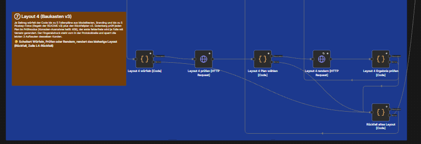
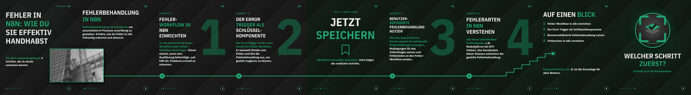
Gemessen in den Läufen 926, 927 und 928 (2 Kunden): je 9 Folien, 3 von 3 Kandidaten im Prüfmodus ohne Meldung, kein Rückfall, jede Folie 1080 x 1350. Ein überlanges Wort wie „BENUTZERDEFINIERTE“ wird getrennt statt überzulaufen. In T5 (Lauf 1027) fiel Layout 4 noch einmal in den Rückfall, weil auf Folie 8 Elemente kollidierten. Das ist behoben, die Nachtests 1029 (Ordwin, Version ff021a45) und 1030 (Café Kontrast, Version b0bc154b) liefen ohne Rückfall mit je 8 Folien (9 Bilddateien einschließlich Einzelbild), ebenso T6 (Lauf 1035, b0bc154b) mit 9 Folien über den echten Telegram-Eingang.
Ablehnen mit Begründung
Drückt die freigebende Person „Ablehnen“, schickt Grund abfragen [Telegram] eine Nachricht mit dem Knopf „Respond“. Er öffnet ein kleines Antwortformular von n8n (Abbildung 6a-6), die Frist beträgt 2 Stunden. Status setzen [Supabase] schreibt den Status abgelehnt und den Grund in rejection_reason, dazu approved_by und decided_at. Belegt in T4 (Lauf 1025, Testkunde Café Kontrast, Grund „Test Ablehnung“).
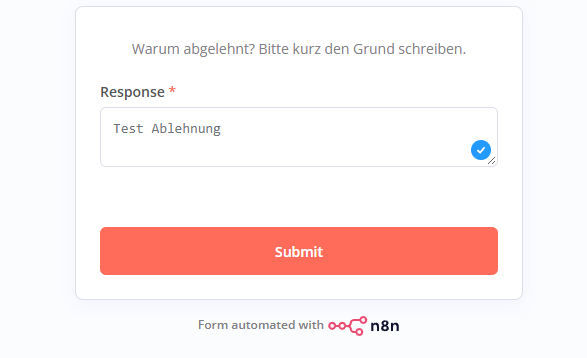
KI-Kennzeichnung: meine Einordnung, keine Rechtsberatung
Kein Paket geht ohne menschliche Freigabe hinaus, und der Workflow postet nicht selbst. Für die Texte gilt: Art. 50 Abs. 4 der EU-KI-Verordnung verlangt die Offenlegung KI-erzeugter Texte, die die Öffentlichkeit über Angelegenheiten von öffentlichem Interesse informieren, außer der Text wurde von einem Menschen geprüft oder redaktionell kontrolliert und eine Person trägt die redaktionelle Verantwortung. Die Freigabe in Telegram kann diese Offenlegungspflicht deshalb entfallen lassen. Ob ein Werbebeitrag überhaupt unter „öffentliches Interesse“ fällt, ist damit nicht geklärt. Für die Bilder gilt diese Ausnahme nicht, sie betrifft nur Texte. Die Fotos im Regelfall sind echtes Fotomaterial von Pixabay und kein KI-erzeugtes Bild, deshalb sehe ich dort keine Kennzeichnungspflicht. Greift der Ersatzweg mit dem Bildmodell FLUX, entsteht ein KI-Bild; ob es dann zu kennzeichnen ist, muss gesondert geprüft werden. Das ist keine Rechtsberatung, vor dem Produktiveinsatz wird es rechtlich geprüft. In der veröffentlichten Hauptversion ist die Kennung „KI-erstellt“ von allen Bildern entfernt, auch von einem Einzelbild, das im Ersatzweg FLUX malt; für diesen Fall ist die Kennzeichnungsfrage damit offen, nicht beantwortet. Die Notiz an Phase ④ im Export v21 begründete das Entfernen mit der menschlichen Freigabe und Art. 50 Abs. 4. Für die Bilder war diese Begründung falsch, denn die Ausnahme in Abs. 4 betrifft nur Texte. In der veröffentlichten Version cc212fe3 ist die Notiz berichtigt: Sie beschränkt die Ausnahme auf KI-Texte, nennt die Pixabay-Fotos als echte Fotos und den FLUX-Ersatzweg als offen. Es gilt die Einordnung in diesem Abschnitt. Abbildung 6a-7 stammt aus einem früheren Lauf und zeigt die Kennung noch. Jeder Post steht weiter mit ai_generated = true in der Datenbank. Die Plattform-Kennzeichnung bei Instagram oder LinkedIn setzt der Mensch beim Veröffentlichen.
Neu in V4, Teil 2
Telegram als zweiter Eingang mit Text und Sprache
Ein Auftrag kommt ohne Formular direkt vom Handy, als Text, Link, Befehl oder Sprachnachricht. Ein eigener Workflow ordnet ihn ein und startet K1.
Warum 2 Bots
Ein Telegram-Bot kann nur einen Webhook haben. Der Bot, über den K1 die Freigaben schickt, würde durch einen Trigger auf demselben Bot seinen Webhook verlieren. Deshalb hat der Eingang einen eigenen Bot. Anlegen wie in Kapitel 4: in Telegram @BotFather öffnen, /newbot senden, Anzeigename und einen Nutzernamen mit der Endung bot wählen. Den Token trägt man nur in ein n8n-Credential vom Typ „Telegram API“ ein (im Beispiel Telegram API | Test-Bot K1-Eingang), nie in ein Dokument oder einen Export. Danach dem neuen Bot einmal schreiben. Im Einzelchat ist die Chat-ID gleich der eigenen Nutzer-ID und für beide Bots dieselbe.
n8n setzt beim Anlegen eines Telegram-Knotens das einzige vorhandene Telegram-Credential automatisch ein. Zweimal stand danach das Credential des Freigabe-Bots im neuen Knoten. Im Trigger hätte das beim Aktivieren den Webhook der Freigaben überschrieben. Deshalb: zuerst einen Manual Trigger als Platzhalter, den Telegram Trigger erst einsetzen, wenn das Credential des zweiten Bots existiert, und das Credential im Knoten danach immer kontrollieren (Abbildung 6b-2).
Aufbau des Workflows „AGT-2606 P1 K1 Telegram-Eingang“
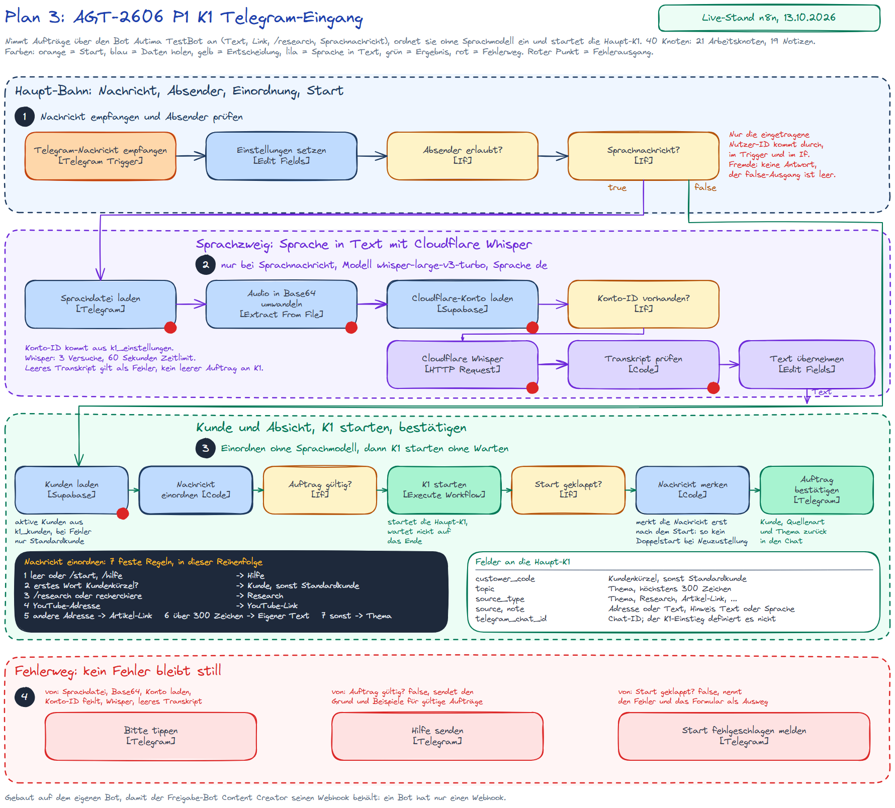
Nachricht merken [Code] merkt eine Nachricht erst nach erfolgreichem Start, damit eine erneute Zustellung K1 nicht doppelt startet; K1 starten übergibt zusätzlich telegram_chat_id, das der Einstieg von K1 nicht als Feld definiert.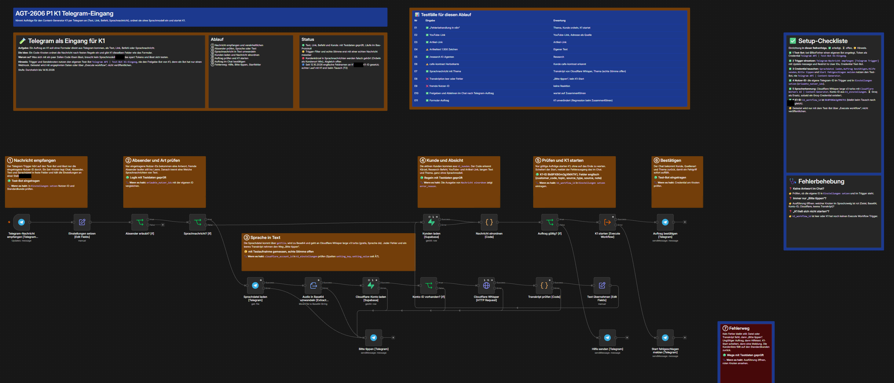
Telegram-Nachricht empfangen [Telegram Trigger]mit Updatemessageund „Restrict to User IDs“: Nur die eingetragene Nutzer-ID kann Aufträge auslösen (Abbildung 6b-2).Absender erlaubt? [If]prüft die ID ein zweites Mal; eine fremde ID bekommt bewusst keine Antwort.Sprachnachricht? [If]trennt Text und Sprache. Bei Sprache lädtSprachdatei laden [Telegram]die Datei,Audio in Base64 umwandeln [Extract From File]macht Text daraus,Cloudflare Whisper [HTTP Request]schickt sie an das Modell@cf/openai/whisper-large-v3-turbomit Sprachede(Wiederholversuch 3 mal, Zeitlimit 60 Sekunden). Die Konto-ID kommt ausk1_einstellungen. Ein leerer erkannter Text und jeder Fehler im Sprachzweig führen zur Antwort „Bitte tippen“.Nachricht einordnen [Code]ordnet per Regel, nicht per KI:/startund/hilfeergeben den Hilfetext; ist das erste Wort ein aktives Kundenkürzel ausk1_kunden, gilt dieser Kunde, sonst der Standardkunde;/researchergibt die Quellenart Research, eine YouTube-Adresse YouTube-Link, eine andere Adresse Artikel-Link, ein Text über 300 Zeichen Eigener Text, alles andere ein Thema. Ein Code-Knoten kostet nichts und liefert bei gleicher Eingabe immer dasselbe.K1 starten [Execute Workflow]ruft K1 über deren zweiten EinstiegAuftrag vom Telegram-Eingang [Execute Workflow Trigger]auf, ohne auf das Ende zu warten, denn K1 wartet danach bis zu 24 Stunden auf die Freigabe. K1 lässt sich nur aus einer festen Liste von Workflows aufrufen (callerPolicy: workflowsFromAList).Auftrag bestätigen [Telegram]antwortet sofort (Abbildung 6b-3).
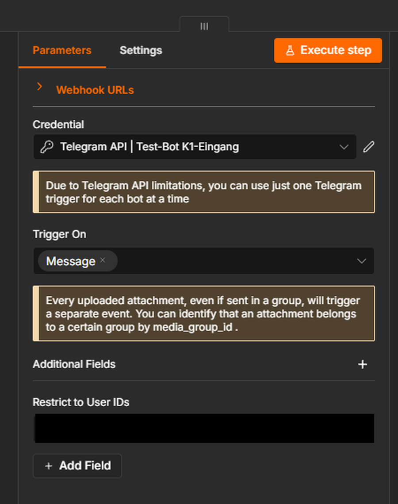
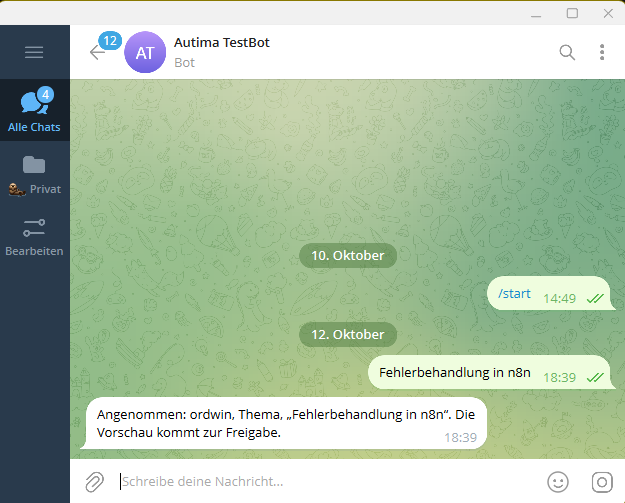
Sprache: Cloudflare statt NVIDIA
Verglichen mit derselben Testaufnahme (synthetische Stimme, 5,44 Sekunden, Referenzsatz mit 12 Wörtern, Lauf 721): Cloudflare Whisper large v3 turbo 2 Wortfehler in 4.116 ms, Nemotron 3 Nano Omni 5 Wortfehler in 6.863 ms und dazu erfundener Inhalt. Die Spracherkennung bei NVIDIA über ein Community-Paket ist nicht kostenlos. Der Aufruf bei Cloudflare verbrauchte 4,2 Neurons und liegt im Gratiskontingent. Mit der echten Stimme belegt T5: Die Sprachnachricht wurde als „Schreib mir einen Beitrag über Fehlerbehebung in N8N.“ erkannt und lief bis zur Freigabe (Läufe 1026 und 1027, Abbildung 6b-4). Ein Wortfehler blieb: „Fehlerbehebung“ statt „Fehlerbehandlung“.
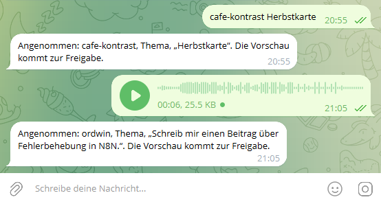
Der leere Unteraufruf und seine Lösung
Beim ersten echten Durchlauf meldete der Eingang Erfolg, K1 startete ebenfalls grün, führte aber keinen einzigen Knoten aus, nicht einmal den eigenen Trigger (Läufe 962 bis 999, im Test- wie im echten Betrieb). Vorher war das nie aufgefallen, weil K1 starten in allen früheren Tests angepinnt war und der Weg Eingang zu K1 nie echt lief.
Gefunden wurde die Ursache durch Halbieren in 8 Schritten mit eigenen Testkopien (Läufe 1000 bis 1020): Ein Execute Workflow mit „Wait For Sub-Workflow Completion“ aus und der Einstellung On Error „continueErrorOutput“ startet den Unterlauf leer. Mit „stopWorkflow“ oder „continueRegularOutput“ läuft er voll, auch ein Unterlauf mit nur 2 Knoten blieb mit der ersten Einstellung leer. Ausgeschlossen wurden unterwegs Veröffentlichung, Aufruferliste, Version des Triggers, Binärmodus und der Error Workflow.
Lösung: K1 starten auf „continueRegularOutput“, dahinter Start geklappt? [If] mit der Bedingung {{ !$json.error }}: wahr zu Auftrag bestätigen, falsch zu Start fehlgeschlagen melden [Telegram]. Nachtest Lauf 1021 und 1022 voll, danach T3 bis T5.
Tests des Eingangs
| Nr | Fall | Ergebnis | Lauf |
|---|---|---|---|
| E1, E2, E5, E6 | Thema, YouTube-Link, /research, Kundenkürzel erkannt (mit angepinntem K1 starten, englische Feldnamen) | PASS | 807, 813, 808, 809 |
| E3, E4 | Artikel-Link, langer eigener Text mit 1.511 Zeichen (Stand vor den englischen Feldnamen) | PASS | 706, 709 |
| E7, E8 | Sprachweg, leerer erkannter Text ergibt „Bitte tippen“ | PASS | 810, 811 |
| E9 | fremde Nutzer-ID endet an Absender erlaubt? | PASS (nur If-Teil, Trigger-Filter ohne echte fremde Nachricht nicht messbar) | 812 |
| S1 | Ziel-ID leer, Start scheitert sichtbar | PASS | 897 |
| T6 | ganzer Weg über Telegram bis zum Freigabelink für den Kunden | PASS | 1035 |
| T2 | Text an den Test-Bot bis zur Vorschau | PASS | 1021, 1022 |
| T4 | Kundenkürzel cafe-kontrast, Ablehnen mit Grund | PASS | 1024, 1025 |
| T5 | Sprachnachricht mit echter Stimme | PASS für den Sprachweg | 1026, 1027 |
Offen: Kundenkürzel werden in Sprachnachrichten falsch geschrieben, ein toleranter Abgleich gegen die Kürzelliste ist nicht gebaut. Ein zweiter Dienst für Sprache als Ersatz ist nicht eingebaut.
Neu in V4, Teil 3
Ablage in Nextcloud mit Freigabelink
Ein freigegebenes Paket landet mit Texten und Bildern in einem Ordner je Kunde und Beitrag. Der Kunde bekommt einen Link, über den er nur lesen und herunterladen kann.
Warum ein Sub-Workflow
Die Ablage steckt im eigenen Workflow „AGT-2606 P1 SUB Nextcloud-Ablage“. So bleibt K1 kleiner, und ein Fehler bei der Ablage bricht die Freigabe nicht ab: Der Sub endet immer mit genau einem Element ok, ordner, dateien und grund, auch wenn etwas schiefgeht.
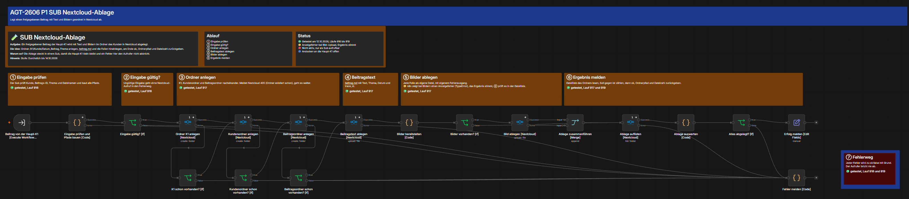
Ordner vorher auflisten den Ordner, Vorherliste bündeln fasst die Liste zu 1 Element. Ablage auswerten zählt eine Datei nur, wenn sie größer als 0 Byte ist und vorher fehlte oder ihr ETag sich in diesem Lauf geändert hat; fehlt die Vorherliste, zählt die Schreibzeit ab Laufstart (mit 5 Sekunden Spielraum).Einrichtung
- Dienstkonto in Nextcloud. Ein eigenes Konto nur für n8n, in einer Gruppe für Dienstkonten mit begrenztem Speicher (5 GB). Für dieses Konto ein App-Passwort erzeugen (Persönliche Einstellungen, Sicherheit, „Neues App-Passwort erstellen“). Das eigene Anmeldepasswort kommt nie in n8n.
- Credential in n8n vom Typ Nextcloud mit der WebDAV-Adresse des Servers, dem Kontonamen und dem App-Passwort. Dasselbe Credential trägt auch die Freigabe-Schnittstelle (OCS), ein zweites ist nicht nötig.
- Schnittstelle des Subs:
Beitrag von der Haupt-K1 [Execute Workflow Trigger]mit „Define using fields below“:customer_code,post_id,topic,trace_id,caption_instagram,linkedin_post,hashtagsund je Bildfile_name, das Bild selbst im Binärfelddata.
Ablauf im Sub
Eingabe prüfen und Pfade bauen [Code]erlaubt im Kundenkürzel und in Dateinamen nur Buchstaben, Ziffern, Unterstrich und Bindestrich. Ein Kürzel wie../ordwinwird abgelehnt (Lauf 918), so kann niemand aus dem Kundenordner ausbrechen.- Ordner anlegen:
/K1/<kunde>/<JJJJ-MM-TT>_<post-id kurz>_<thema>/. Gibt es einen Ordner schon, antwortet Nextcloud mit 405; der Sub prüft das und macht weiter. Beitragstext ablegen [Nextcloud]schreibtbeitrag.mdmit Thema, Kunde, Datum,trace_id, Instagram-Text, Hashtags und LinkedIn-Text. Danach jedes Bild als eigene Datei.Ablage auflisten [Nextcloud]liest den Ordner und zählt die Dateien gegen die erwarteten. Das Ergebnis stammt bewusst aus dieser Liste und nicht aus den Antworten der Upload-Knoten, siehe Stolperstein.- Freigabelink: Ein HTTP Request mit dem Nextcloud-Credential ruft die Freigabe-Schnittstelle auf (
shareType=3öffentlicher Link,permissions=1nur lesen, Ablaufdatum in 30 Tagen, KopfzeileOCS-APIRequest: true). Rückgabefreigabe_linkundfreigabe_ablauf. Scheitert nur der Link, bleibtokundgrund_linknennt den Grund (Läufe 945 und 949).
Der Nextcloud-Knoten meldet beim Hochladen eines Bilds einen Fehler („Cannot read properties of undefined“), die Datei kommt trotzdem an. Echte Fehler, etwa ein Bild ohne Binärdaten, kommen dagegen richtig am Fehlerausgang an (Lauf 919). Deshalb zählt nur die Dateiliste des Ordners. Die Ursache in n8n ist nicht geklärt.
Eingebunden in K1
Hinter Status setzen [Supabase] hängt neben der Protokollkette ein zweiter Zweig: Ablage-Elemente bauen [Code] lässt nur Posts mit Status fertig durch, bei Ablehnung oder Fristende entstehen 0 Elemente und der Sub wird nicht aufgerufen. Sonst baut er je Bild ein Element mit Binärfeld und den Textfeldern. In Nextcloud ablegen [Execute Workflow] ruft den Sub mit „Wait For Sub-Workflow Completion“ auf (Abbildung 6c-2).
Status setzen.Beleg T3: Freigabe in Telegram (Lauf 1022), der Sub lief als Lauf 1023 in 6 Sekunden: 10 von 10 Dateien im Ordner, Freigabelink erzeugt, Ablauf 11.11.2026. Geprüft ohne Anmeldung: Die Linkseite antwortet mit 200, die Dateien tragen nur die Rechte Lesen und Herunterladen. Letzter Schritt des Ablaufs: Nach der Ablage schickt K1 den Link als Telegram-Nachricht „Ordner für den Kunden (gültig bis …)“ an die freigebende Person, die ihn an den Kunden weitergibt. Getestet in T6 über den echten Telegram-Eingang (Lauf 1035): Layout 4 ohne Rückfall, freigegeben, danach kam die Nachricht mit Link und Ablaufdatum 11.11.2026 (Abbildung 6c-3).
Offen: Das Ergebnis der Ablage steht noch nicht in der Protokollzeile.
Neu in V4, Teil 4
Zweiter Server: Hostinger mit Coolify, Nextcloud und rembg
n8n und Gotenberg bleiben auf dem Hetzner-Server. Nextcloud und der Freisteller laufen getrennt davon auf einem Hostinger-Server, verwaltet mit Coolify.
Warum ein zweiter Server
Ein Freisteller-Modell braucht beim Laden mehrere GB Arbeitsspeicher, Nextcloud braucht eine eigene Datenbank und Platz für Dateien. Beides neben n8n zu betreiben, hätte den Workflow-Server belastet. Auf dem Hostinger-Server war Coolify schon eingerichtet, eine Oberfläche, die Container mit Domain und Zertifikat bereitstellt. Vor jeder Änderung wurde der Server gesichert (Snapshot bei Hostinger und Sicherung der Konfiguration).
Nextcloud aus der Coolify-Vorlage
- Vorlage „Nextcloud with PostgreSQL“ in einem neuen Coolify-Projekt. Sie bringt Nextcloud, PostgreSQL 16 und Redis 7.4 mit eigenen Volumes mit.
- Version fest anheften: Image
lscr.io/linuxserver/nextcloud:35.0.1stattlatest, damit ein Neustart nicht ungefragt aktualisiert. ZeitzoneEurope/Berlin. - Domain eintragen. Coolify holt das Zertifikat bei Let's Encrypt selbst, HTTP leitet auf HTTPS um.
- Einrichtungsassistent sofort abschließen. Solange er offen ist, kann jeder, der die Adresse kennt, das Admin-Konto anlegen. Datenbank PostgreSQL wählen, die Zugangswerte zeigt Coolify unter der Ressource.
- Härten nach Prüfliste: vorher Konfiguration und Datenbank sichern, dann vertrauenswürdige Domain, Proxy-Netz und HTTPS als Protokoll setzen; der Cron für Hintergrundaufgaben läuft im Image schon mit. Danach die Warnungen in der Verwaltungsübersicht von Nextcloud abarbeiten.
- Dienstkonto für n8n mit App-Passwort, wie in Kapitel 6c.
rembg als Container
- Ressource „Docker Image“ mit
danielgatis/rembg:2.0.85, fest angeheftet. Startbefehlrembg s --host 0.0.0.0 --port 7000, Port 7000. - Modelle auf ein Volume:
U2NET_HOME=/modelsund ein dauerhaftes Volume auf/models, sonst lädt jeder Neustart das Modell neu. Speichergrenze 6 GB. - Basic Auth über das eigene Feld der Anwendung in Coolify. Erst danach bekommt der Dienst eine öffentliche Domain; bis dahin war er nur im internen Netz erreichbar.
- Credential in n8n vom Typ Basic Auth. Wichtig: „Allowed HTTP Request Domains“ auf die Domain des Dienstes stellen. Steht es auf „None“, lehnt n8n den Aufruf ab („This credential is configured to prevent use within an HTTP Request“, Läufe 923 und 924).
Gemessen auf dem Server mit dem Modell u2net: Porträtfoto 0,59 und 0,56 Sekunden, Zahnräder 15,51 Sekunden beim ersten Aufruf (mit Laden des Modells) und 2,18 Sekunden danach. Arbeitsspeicher danach 1,4 von 6 GB. Personen werden sauber freigestellt, bei Objekten mit Löchern (Zahnräder) bleibt der Hintergrund zwischen den Speichen stehen.
Der erste Aufruf aus n8n schickte das Modell nur als Adressparameter. rembg 2.0.85 liest es beim POST aber aus dem Formular und nahm ohne Formularfeld ein großes Modell mit rund 1 GB. Beim Laden lief der Container in die Speichergrenze und startete neu, n8n sah nur eine Zeitüberschreitung nach 30 Sekunden (Lauf 933). Mit dem Formularfeld model=u2net brauchten dieselben Fälle 775 und 589 ms (Lauf 937).
Neu in V4, Teil 5, Future
Vorbereitet für später: Selbstheilung, Freisteller, Dashboard
3 Bausteine sind gebaut und einzeln getestet. Selbstheilung und Freisteller sind bewusst nicht in K1 eingehängt, das Dashboard ist seit dem 13.10. veröffentlicht (Kapitel 6f). Sie gehören nicht zum bewerteten Ablauf, sie zeigen, wie K1 weiterwachsen kann.
dispatch_enabled = false im Probebetrieb.Fehler-Datenbank mit Selbstheilung
Idee: Der Fehlerweg schreibt einen Fehler nicht nur ins Protokoll, sondern schlägt ihn in einer Datenbank nach und bekommt ein Gegenmittel zurück. Bekannte Fehler mit einem als sicher markierten Gegenmittel behebt K1 selbst, alles andere wartet auf eine Freigabe durch einen Menschen.
| Tabelle | Art | Inhalt |
|---|---|---|
k1_fehlermuster | Stammdaten | 9 Muster (E5, F1 bis F8) mit Stelle im Workflow, Erkennungstext, Klasse, Ursache und Vorbeugung |
k1_gegenmittel | Stammdaten | 11 Gegenmittel mit Typ (retry, fallback_model, fallback_source, fallback_content, status_set, abort_alert, manual), Feld auto_allowed und Parametern |
k1_fehlermuster_gegenmittel | Verbindung | 17 Zuordnungen mit Priorität |
k1_fehlervorkommen | Ereignis | jedes Vorkommen mit trace_id, Laufnummer, Knoten, Meldung und Ergebnis; wird nie überschrieben |
Sicherheitsregeln in der Datenbank: Ein Gegenmittel vom Typ manual darf nie auto_allowed = true haben (Check-Constraint, ein absichtlich falscher Eintrag wurde abgewiesen). Löschen, Senden an Dritte oder Schreiben in Kundendaten gibt es als Typ gar nicht. Row Level Security ist an, anon und authenticated haben keine Rechte; per HTTP mit dem öffentlichen Schlüssel kamen Lesen, Schreiben und die Abfragefunktion mit 401 zurück. Die Abfrage läuft über eine Datenbankfunktion, die Muster und Gegenmittel in einem Aufruf liefert und nur für den Service-Zugang ausführbar ist.
Der Sub-Workflow „AGT-2606 P1 SUB Selbstheilung“ fragt Muster und Gegenmittel ab, entscheidet je Fehler, schreibt das Vorkommen und gibt das Gegenmittel zurück. Einen unbekannten Fehler gibt er an ein kostenloses NVIDIA-Modell, das ein Gegenmittel vorschlägt; ein KI-Vorschlag ist nie automatisch ausführbar und geht zur Freigabe nach Telegram. Ist die Datenbank nicht erreichbar, bricht der Sub laut mit Alarm ab.
Tests: bekannter Fehler E5 mit automatischem Gegenmittel (Lauf 785), zweiter Versuch mit manuellem Gegenmittel (786), unbekannter Fehler mit Vorschlag von NVIDIA (787), Datenbank weg mit Abbruch und Alarm (788, gewollt rot), F3 im Fehlertext mit Ersatzmodell (789), alle bestanden. Nicht gebaut ist das Einhängen in den Fehlerweg von K1. Entschieden am 12.10.: nur zeigen, nicht einhängen.
Freisteller als Baustein
Damit eine Person auf der Titelfolie von Layout 4 über die Kante ragen kann, braucht es ein Foto ohne Hintergrund. Der Sub „AGT-2606 P1 SUB Freisteller“ nimmt ein Foto als Binärdatei oder Adresse und gibt immer genau ein Element zurück: bei Erfolg das freigestellte PNG, sonst mit ok: false und Grund das Originalfoto, sofern es geladen werden konnte; ließ sich das Original nicht laden, kommt das Element ohne Bild und mit quelle: "keine" zurück. Er bricht nie ab, der aufrufende Workflow muss nur ok prüfen. Es gibt keinen Wiederholversuch, weil sich die Wartezeit sonst verdoppelt. Die 30 Sekunden sind ein Zeitbudget und keine harte Grenze: Der HTTP-Knoten wartet das Restbudget, mindestens aber 1.000 ms (Math.max(1000, Restbudget)), und Antwort bauen prüft die Gesamtdauer nicht. Ein freigestelltes PNG, das erst nach mehr als 30 Sekunden ankommt, wird deshalb trotzdem übernommen. Der Sub ist in K1 noch nicht angedockt.
Test Lauf 937: Porträt per Adresse 775 ms, Foto als Binärdatei 589 ms, ungültige Adresse ok: false ohne Absturz. Eingebaut ist der Freisteller nicht; vorgesehen ist er zwischen Foto laden und Foto einbetten, nur für die Titelfolie.
Dashboard (seit 13.10. veröffentlicht, Kapitel 6f)
Stand 13.10.2026: Das Dashboard ist fertig und veröffentlicht, beide Webhooks verlangen Basic Auth, ohne gültige Zugangsdaten antwortet es mit 403. Es ruft K1 mit den englischen Feldnamen auf, steht aber weiter im Probebetrieb. Einzelheiten in Kapitel 6f, der folgende Absatz beschreibt den Stand vom 11.10.
„AGT-2606 P1 K1 Dashboard“ ist eine Seite aus 2 Webhooks: Verlauf der Läufe mit Kosten je Tag, ein Formular „Auftrag starten“ und ein Formular, über das ein Kunde sein Branding einreicht. Die Zahlen kommen aus 2 Datenbank-Views, die nur der Service-Zugang lesen darf. Das Dashboard steht im Probebetrieb: Ein Auftrag wird geprüft, aber nicht an K1 übergeben (Lauf 795). Vor einer Freischaltung brauchen beide Webhooks Basic Auth, sonst sieht jeder mit der Adresse Kundendaten und Protokoll. Für das Projekt reicht ein filterbares Protokoll, deshalb bleibt das Dashboard inaktiv.
Neu in V4, Stand 13.10.2026
Endstand vor der Präsentation: 4 veröffentlichte Workflows
Am 13.10.2026 sind alle 4 Workflows von Projekt 1 veröffentlicht. Jeder trägt rechts eine Hilfe-Spalte mit Setup-Checkliste und Plattform-Hinweisen. K1 hat an diesem Tag 5 Korrekturen bekommen, das Dashboard ist fertig und geschützt, und in der Nextcloud-Ablage fiel nach dem Veröffentlichen eine Selbstschleife auf.
Was veröffentlicht ist
| Workflow | Aufgabe | Aktive Version | Knoten gesamt |
|---|---|---|---|
| AGT-2606 P1 Content-Generator K1 | Hauptworkflow: Quelle, Recherche, Paket, Folien, Freigabe, Ablage (Kapitel 6a) | 30ea9ff2 | 113: 88 Arbeitsknoten (davon 3 deaktivierte Platzhalter), 25 Notizen, 138 Verbindungen |
| AGT-2606 P1 K1 Telegram-Eingang | zweiter Eingang mit Text und Sprache (Kapitel 6b) | be1cda12 | 40: 21 Arbeitsknoten, 19 Notizen, 27 Verbindungen |
| AGT-2606 P1 SUB Nextcloud-Ablage | Ablage nach der Freigabe mit Freigabelink (Kapitel 6c) | 07fbc7ac | 40: 23 Arbeitsknoten, 17 Notizen, 35 Verbindungen |
| AGT-2606 P1 K1 Dashboard | Leitstand mit Verlauf, Auftrag starten und Branding einreichen | 80008d2c | 53: 34 Arbeitsknoten, 19 Notizen, 45 Verbindungen |
Stand der Abfrage 13.10.2026 abends: Bei Telegram-Eingang, Nextcloud-Ablage und Dashboard ist die gespeicherte Version gleich der aktiven. K1 hat seit dem späten Nachmittag des 13.10.2026 einen gespeicherten, noch nicht veröffentlichten Entwurf 99e45166 mit 3 Reparaturen: Der Fehler-Hinweis beachtet „Telegram nein“, total_tokens bleibt leer statt einer Teilsumme, wenn das Ersatzmodell NVIDIA lief, und die LinkedIn-Bildunterschrift für Telegram wird ohne zerschnittene Zeichen gekürzt. Die Veröffentlichung ist für den 14.10.2026 vorgesehen; aktiv bleibt bis dahin 30ea9ff2, und alles in diesem Kapitel beschreibt diese aktive Version. Gezählt ist an den Exporten der unmittelbar davor veröffentlichten Versionen vom Nachmittag (K1 b31dcfac, Telegram-Eingang c8e7773e, Nextcloud-Ablage b25141a4, Dashboard aa5287ad); laut Versionsvergleich in n8n haben sich danach höchstens Lage und Größe von Notizen geändert, kein Arbeitsknoten und keine Verbindung. Die Arbeitsknoten von K1 sind dieselben wie in Version 25d0d9f6, auf der die Läufe 1083 bis 1089 liefen (Kapitel 9b); danach kamen laut Versionsvergleich in n8n nur Notizen, ihre Lage und deaktivierte, nicht verbundene Platzhalter dazu. Gegenüber Export v21 und Version cc212fe3 vom Vormittag ist damit überholt, was auf Seite 2 und in Kapitel 1 als „veröffentlicht“ steht.
Notizkarten: Setup-Checkliste und Plattform-Hinweise in allen 4 Workflows
Jeder der 4 Workflows hat rechts eine Hilfe-Spalte in einem blauen Rahmen mit 2 Karten (im Telegram-Eingang zusätzlich eine Karte „Fehlerbehebung“). Die Setup-Checkliste nennt die Einrichtung in der Reihenfolge, in der sie gemacht wird, je Schritt das Credential mit seinem Namen (nie mit einem Wert) und den Knoten, in dem es ausgewählt wird; ✅ steht für erledigt, ⏳ für offen, 🟡 für einen Hinweis. Die Plattform-Hinweise sagen je beteiligter Plattform, was der Workflow dort darf, und nennen eine Besonderheit. Wer einen Workflow übernimmt, sieht damit auf einen Blick, welche Zugänge er braucht und wo sie hingehören.
| Workflow | Setup-Checkliste | Plattform-Hinweise |
|---|---|---|
| K1 | Supabase, Formular-Login, Quellen, Bilder, Sprachmodelle, Telegram, Aufrufer und weitere Schritte | Instagram, LinkedIn, Telegram, Nextcloud |
| Telegram-Eingang | Test-Bot, Trigger, Credential tauschen, Nutzer-ID, Spracherkennung, K1-ID | Telegram (Test-Bot), Cloudflare Workers AI, n8n |
| Nextcloud-Ablage | Nextcloud-Zugang, Ablageort, Aufrufrecht, Test, Aktivieren | Nextcloud, n8n |
| Dashboard | Basic Auth, Supabase, Konfiguration, Aufrufrecht in K1, erster Test, Aktivieren | n8n, Supabase, K1 |
Im Hauptworkflow K1 gibt es bewusst keine Setup-Marken an einzelnen Knoten. Bei 88 Arbeitsknoten wäre die Leinwand mit einer Marke an jedem Knoten mit Zugang unübersichtlich geworden. Die Checkliste nennt stattdessen zu jedem Zugang den Knoten, in dem er ausgewählt wird. Die Karten stehen so, wie sie in den Abbildungen 6f-1 bis 6f-4 zu sehen sind.
K1: Korrekturen vom 13.10.2026
- Hashtags höchstens 40 Zeichen.
Paket prüfen [Code]verwirft jeden Hashtag über 40 Zeichen (samt #) und vermerkt ihn inquality_notes, auch feste Marken-Hashtags. Anlass: Die Anzahl war auf 15 begrenzt, die Länge nicht; 15 Hashtags mit je 150 Zeichen ergaben in einer Prüfung 2.256 Zeichen. Mit der Grenze belegen 15 Hashtags höchstens 614 Zeichen. - Textbudget 2.200 Zeichen. Die Instagram-Bildunterschrift hat samt Hashtags höchstens 2.200 Zeichen. Stehen bei mehr als 5 Schritten die Texte ab Schritt 5 in der Bildunterschrift, kommen sie voll hinein, solange das Budget reicht, sonst gekürzt mit Hinweis. Belegt mit einem lokalen Test (23 von 23 Fällen, 300 Zufallsfälle nie über 2.200).
- Telegram-Text höchstens 4.096 Zeichen.
Instagram-Text senden [Telegram]kürzte vorher erst nach dem Maskieren auf 4.000 Zeichen; in einer Prüfung mit 1.500 Zeichen&brach der Text mitten in einer maskierten Stelle ab, Hashtags und Schlussmarke fehlten. Jetzt wird zuerst die Bildunterschrift an der Wortgrenze gekürzt, mit dem Hinweis „(für Telegram gekürzt)“, dann maskiert; die Hashtags bleiben, die Nachricht hat höchstens 4.096 Zeichen, das Telegram-Limit. Belegt mit einem lokalen Test (11 von 11 Fällen und 300 Zufallsfälle); ein echter Versand eines überlangen Textes wurde auf der Instanz nicht ausgeführt. total_tokenszählt alle 3 Modellaufrufe. Das Laufprotokoll schrieb die Kosten aller 3 Aufrufe (2-mal Sonar, 1-mal Schreibmodell), die Tokens aber nur für das Schreibmodell (Lauf 1067: 2.425 statt 3.603).Protokollzeile bauenundFehlerweg vorbereitenaddieren jetzt die Tokens beider Sonar-Aufrufe; fehlt eine Angabe, bleiben die Spalten leer mit Vermerk „Tokens unvollständig“. Beleg Lauf 1083: 3.665 Tokens = 713 (Recherche) + 480 (aktuelle Beiträge) + 2.472 (Schreiben).- Formular-Schalter „Telegram nein“ repariert. Das Formular liefert das Feld unter seiner Bezeichnung „Telegram-Versand“,
Konfiguration und Startzeit [Edit Fields]las nurtelegram_send. In Lauf 1081 wurde „nein (Testlauf)“ deshalb ignoriert und die Vorschau ging echt an Telegram. Jetzt liest der Knoten beide Schlüssel; Nachtests 1082 und 1083 übersprangen Telegram. Offen bleibt: Ein Fehlerhinweis geht auch bei „nein“ nach Telegram (Lauf 1084), der Fehlerweg wertet den Schalter in der aktiven Version nicht aus. Die Reparatur steht im Entwurf99e45166, noch nicht veröffentlicht. - Dashboard darf K1 aufrufen. Die Liste der aufrufenden Workflows enthält jetzt neben dem Telegram-Eingang das Dashboard.
Ausblick-Schaukasten in K1
Der Rahmen oben rechts heißt seit dem 13.10. „Ausblick nach 16.10.“. Von den bisherigen Platzhaltern wurden 5 entfernt. Gebaut sind 4: Recherche aktueller Beiträge, Sprachnachricht umwandeln, Kennzahlen im Dashboard und Ablage in Nextcloud. Der Faktencheck ist teilweise gebaut: Sonar recherchiert vor dem Schreiben, und Paket prüfen gleicht Zahlen gegen die Quelltexte ab; eine eigene Websuche nach dem Schreiben fehlt. Offen ist nur noch Reels. Neu stehen dort 2 Platzhalter, beide deaktiviert und nicht verbunden: Kundenportal je Kunde [Webhook] (das Dashboard als Seite je Kunde) und Supabase-Bilder aufräumen [Supabase] (Bilder nach der Nextcloud-Ablage aus dem Speicher löschen, wegen der Speichergrenze in Kapitel 10a). Die Karte daneben nennt 9 Punkte für die Zeit nach der Abgabe, darunter JPEG statt PNG, Selbstheilung andocken, 1 Bot statt 2 und den Freisteller.
Dashboard: fertig, veröffentlicht, geschützt
Das Dashboard aus Kapitel 6e ist seit dem 13.10.2026 veröffentlicht. Beide Webhooks (Seite per GET, Aktionen per POST auf derselben Adresse) verlangen Basic Auth mit dem Credential Basic Auth | K1 Dashboard. Geprüft am 13.10.2026 um 12:06 UTC mit 4 Aufrufen: GET und POST, jeweils ohne und mit falschen Zugangsdaten, alle 4 mit Statuscode 403 und der Antwort „Authorization data is wrong!“. n8n lehnt dabei schon vor dem Workflow ab, es entsteht keine Ausführung. Erwartet war 401; n8n antwortet bei falscher oder fehlender Basic Auth mit 403, der Statuscode ist dort nicht einstellbar. Abgelehnt wird in jedem Fall. Mit den richtigen Zugangsdaten wurde nicht getestet, die hat nur der Betreiber.
K1 starten [Execute Workflow] ruft K1 ohne Warten mit den englischen Feldnamen auf, die K1 seit dem 11.10. erwartet: customer_code, topic, source_type, source, note. Das frühere Feld telegram_chat_id ist entfernt, weil K1 es nicht kennt. Statt des Fehlerausgangs prüft Start geklappt? [If], ob der Start einen Fehler gemeldet hat; derselbe Fehlerausgang hatte im Telegram-Eingang den Unterlauf leer gestartet (Kapitel 6b). Der Schalter dispatch_enabled in Konfiguration [Edit Fields] steht in der aktiven Version auf false: Ein Auftrag wird geprüft und bestätigt, aber noch nicht an K1 übergeben (Probebetrieb). Branding speichern ist nur für den Testkunden freigegeben.
Beim ersten Veröffentlichen der Nextcloud-Ablage am Morgen des 13.10.2026 stand im aktiven Stand eine Verbindung, die im zuletzt geprüften Entwurf nicht vorkam: Ausgang 0 von Ablage zusammenführen [Merge] lief zusätzlich in Eingang 1 desselben Knotens. Damit hätte der Knoten seine eigene Ausgabe wieder als Eingabe bekommen. Aufgefallen ist sie beim Vergleich der veröffentlichten Version mit dem Entwurf davor, nicht in einem Lauf: Seit dem Veröffentlichen war keine Ausführung der Ablage gelaufen. Die Verbindung wurde im Entwurf entfernt, die neue Version noch am Vormittag veröffentlicht; der Versionsvergleich zeigte danach keine neuen oder entfernten Verbindungen gegenüber dem geprüften Stand.
Lehre: Ein Entwurf, der vor dem Veröffentlichen geprüft wurde, ist nicht automatisch der Stand, der danach aktiv ist. Nach jedem Veröffentlichen wird deshalb die aktive Version gegen den geprüften Entwurf verglichen, und jede neue Verbindung wird gemeldet, bevor ein Lauf startet. Bei den 4 Veröffentlichungen am Nachmittag des 13.10. ergab dieser Vergleich 0 neue oder entfernte Verbindungen.
Neu in V5, Stand 14.10.2026
Nachtrag 14.10.2026: Leitstand, Research per Telegram, Kosten je Lauf und Alarm-Mail
Am Tag vor der Abschlusspräsentation wurde das Dashboard zum Leitstand umgebaut: Aufträge mit Research starten dort, die Kosten je Lauf stehen auf der Seite, der Verlauf lässt sich nach Tag, Woche und Monat umschalten. 6 echte Probeläufe über Leitstand, Telegram-Text und Sprache zeigen, was funktioniert, was ein Lauf im Mittel kostet und wie ein Abbruch per Alarm-Mail gemeldet wird.
Was am Abend des 14.10.2026 aktiv ist
| Workflow | Aktive Version | Was sich gegenüber Kapitel 6f geändert hat |
|---|---|---|
| AGT-2606 P1 Content-Generator K1 | 99e45166 | der Entwurf mit den 3 Reparaturen aus Kapitel 6f ist veröffentlicht; ein neuer Entwurf 73daaea3 mit kürzerer Zeitgrenze für das Schreibmodell ist gespeichert, aber nicht veröffentlicht (Abschnitt „Zeitgrenze“ unten) |
| AGT-2606 P1 K1 Dashboard (Leitstand) | 7d3927d6 | Umbau mit Research, Kosten je Lauf, Zeitauswahl und Zugangsfeld; Aufträge gehen an K1 (dispatch_enabled steht auf true); seine Ausführungen werden nicht gespeichert |
| AGT-2606 P1 K1 Telegram-Eingang | be1cda12 | am 14.10. nicht geändert, zuletzt gespeichert am 13.10.2026; neu gemessen ist nur, wie er Research erkennt |
Gelesen am 14.10.2026 gegen 21:15 Uhr in n8n, nur lesend. Damit sind in Kapitel 6f die aktive Version von K1 (30ea9ff2), die Version des Dashboards (80008d2c) und der dort beschriebene Probebetrieb des Dashboards überholt. Die Nextcloud-Ablage wurde am 14.10. nicht angefasst.
Der Leitstand: ein Ort für Auftrag, Verlauf und Kosten
Das Dashboard aus Kapitel 6e und 6f heißt auf der Seite jetzt „Leitstand“. Ziel des Umbaus war, dass ein Auftrag in der Vorführung ohne das nackte n8n-Formular gestartet werden kann und Kosten und Verlauf auf derselben Seite sichtbar sind. Gebaut wurde in 10 Fassungen nacheinander (Exporte v07 bis v16), mit einer Sicherung je Änderungsschritt (eine davon erst nachträglich aus dem Abruf vor der Änderung geschrieben) und als Entwurf geprüft, bevor sie veröffentlicht wurde. Geändert wurden Inhalte von Knoten und Einstellungen des Workflows, keine Verbindungen und keine Positionen.
- Research im Formular. Das Formular „Auftrag starten“ kennt jetzt alle 5 Quellenarten von K1, darunter Research. Bei Thema und Research ist das Feld „Quelle“ freiwillig. Dieselbe Regel steht im Knoten
Auftrag prüfen [Code]auf dem Server, damit ein Auftrag nicht nur im Browser geprüft wird. - Links werden gleich geprüft wie von K1 gelesen. Eine gemeinsame Prüffunktion für Browser und Server verlangt https, einen in der Schreibweise gültigen Domainnamen (ob die Domain existiert, prüft sie nicht) und bei YouTube eine Video-Kennung in einer der 4 Formen, die K1 versteht. Umlaut-Domains werden in die reine ASCII-Form umgewandelt, bevor K1 sie bekommt. Getestet mit einer festen Liste von 30 Fällen, alle richtig, dazu 619 Domains im Abgleich mit dem WHATWG-URL-Parser von Node ohne Abweichung.
- Kosten je Lauf. Ein eigener Bereich unter „Letzte Läufe“ zeigt 4 Kennzahlen (Durchschnitt fertiger Läufe, heute, diesen Monat, Hochrechnung für den Monat bei 5, 20 oder 1.000 Läufen am Tag und 22 Arbeitstagen), darunter die 15 neuesten Läufe mit Zeit, Kunde, Quellenart, Status, Modell und Kosten in USD und EUR. Der Kurs 1 USD = 0,86 EUR ist als Annahme beschriftet. Ein Statusfilter (Vorgabe „fertig“) und der Knopf „Neu laden“ gehören dazu.
- „nicht erfasst“ statt 0. Läufe ohne Kostenangabe (zum Beispiel vor der vollständigen Kostenerfassung oder mit dem Ersatzmodell NVIDIA) stehen kursiv als „nicht erfasst“ und zählen nie als 0. Ein Tag mit solchen Läufen trägt im Kostendiagramm ein Fragezeichen.
- Modell je Lauf. Die Spalte Modell nennt „Hauptmodell openai/gpt-4.1-nano“, „Ersatzmodell nvidia/nemotron-3-super-120b-a12b“ oder „kein Modellaufruf“. Die Recherche mit Sonar läuft zusätzlich und ist kein Ersatz.
- Verlauf nach Tag, Woche oder Monat. Ein Auswahlfeld „Zeitraum“ fasst die Tageswerte im Browser zu Kalenderwochen oder Monaten zusammen. Damit Woche und Monat Daten haben, lädt die Seite 60 statt 14 Tage. Die Kopfzahlen über den Diagrammen folgen dem gezeigten Zeitraum.
- Letzte Läufe mit Auslöser. Der Statusfilter zeigt die Anzahl je Status, jede Zeile trägt eine farbige Randmarke (grün fertig, gelb Ersatzweg, rot Fehler). Bei Ersatzweg und Fehler steht der Auslöser mit Kennung, zum Beispiel „F3 (Hauptmodell ausgefallen)“. Eine zu breite Tabelle mit waagerechtem Rollbalken wurde am Abend behoben: Der Inhaltsbereich ist breiter, lange Texte brechen um (gemessen bei 1920 und 1280 Pixeln Breite ohne Rollbalken).
Zugang: nur im Arbeitsspeicher, nichts in den Ausführungen
Der erste Auftrag aus dem veröffentlichten Leitstand kam am 14.10. gegen 17:00 Uhr mit „Der Auftrag kam nicht an (Status 401)“ zurück. Gemessen: Die Seite lädt mit den Zugangsdaten der Basic Auth, das Absenden per fetch auf denselben Pfad schickt sie aber nicht zuverlässig mit, und n8n antwortet ohne Anmeldeabfrage. Die Lösung:
- Beim ersten Absenden erscheint im Formular das Feld „Zugang Leitstand“ (Name und Passwort). Der Zugang wird nur als Variable im Arbeitsspeicher der geöffneten Seite gehalten, das Passwortfeld sofort geleert und der Auftrag mit dem Kopf
Authorizationgesendet. Kein localStorage, kein Cookie, nichts in der Adresse. Nach dem Neuladen fragt die Seite wieder. - Wird der Zugang abgelehnt, verschwindet er und das Feld erscheint mit „Zugang prüfen“. Das Feld steht über beiden Reitern, also auch bei „Branding einreichen“.
- Die Ausführungen des Leitstands werden nicht gespeichert. n8n legt in gespeicherten Ausführungen den vollständigen Kopf der Anfrage ab, also auch den Zugang. Beim Leitstand stehen deshalb „erfolgreiche“, „fehlgeschlagene“ und „manuelle“ Ausführungen auf „nicht speichern“ (gelesen am Abend:
none,none,false). Fehlerläufe und Kosten kommen ohnehin aus dem Laufprotokoll in Supabase. K1 speichert seine Ausführungen weiter. - Weil der alte Zugang in früher gespeicherten Ausführungen stand, wurde das Passwort der Basic-Auth-Credential des Leitstands nach dem Veröffentlichen gewechselt.
Research über Telegram: per Befehl oder mit „Recherchiere“
Der Telegram-Eingang (Kapitel 6b) ordnet jede Nachricht im Knoten Nachricht einordnen [Code] ein. Research erkennt er an einem dieser beiden Anfänge, nach einem optionalen Kundenkürzel:
- dem Befehl
/research <Thema>im Text, - dem Wort „Recherchiere“ (auch „Recherchier“ oder „Recherchieren“) am Satzanfang, zum Beispiel „Recherchiere Fehlerbehebung in n8n“.
Die Regel steht vor den Link-Regeln: Ein /research mit Link im Text bleibt Research. Eine Sprachnachricht wird zuerst mit Cloudflare Whisper in Text umgewandelt und läuft dann durch denselben Code. Gesprochen funktioniert deshalb nur „Recherchiere …“. Ein gesprochenes „Research“ oder „Slash Research“ kommt als normales Wort an, der Schrägstrich fehlt, und die Nachricht wird als Thema eingeordnet. So geschehen in den Läufen 1122 und 1132: Der ganze Satz beziehungsweise „Research Fehlerbehebung in n8n“ wurde zum Thema.
/research, 18:50 Uhr, als Research angenommen (Lauf 1135).Was K1 bei Thema und bei Research tut
Beide Quellenarten laufen in K1 durch denselben Pfad. Quellenart verteilen [Switch] hat für Research keinen eigenen Ausgang, der Rückfall „Unbekannt (wie Thema)“ führt wie Thema in Quelltext vereinheitlichen. Danach gilt:
| Schritt | Thema | Research | Artikel-Link, YouTube-Link, eigener Text |
|---|---|---|---|
Virale Posts Sonar (aktuelle englische Beiträge als Vorlage) | ja | ja | ja |
Recherche Sonar (Fakten mit Quellen) | ja | ja | nein |
| Prompt-Zusatz „Quellenart Research“: virale englische Beiträge als Grundgerüst ins Deutsche adaptieren, keine wörtliche Übersetzung | nein | ja | nein |
Ob die Recherche und die Vorlagen im Prompt landen, hängt am Ergebnis der beiden Abfragen, nicht an der Quellenart. Einen eigenen Faktencheck-Knoten nur für Research gibt es nicht. Liefert Sonar keine aktuellen Beiträge, läuft der Research-Zusatz ins Leere: In Lauf 1139 antwortete die Abfrage „KEINE AKTUELLEN POSTS“, die Freigabe meldete „Vorlagen: keine“, und der Text entstand aus Thema und Fakten-Recherche. Dieselbe Abfrage hatte 12 Minuten vorher in Lauf 1135 5 Treffer geliefert, die Antwort schwankt also.
Kosten je Lauf
| Quellenart | Modellaufrufe | Kosten je Lauf | Beleg |
|---|---|---|---|
| Thema, Research | 2 Sonar plus 1 Schreibmodell | im Mittel rund 0,0116 USD | Mittel 0,0115583 USD aus 9 gemessenen Läufen (Kapitel 10a); Probeläufe 14.10. je 0,0116 USD, Lauf 1139 0,0111 USD |
| Artikel-Link, YouTube-Link, eigener Text | 1 Sonar plus 1 Schreibmodell | rund 0,006 USD | Läufe vom 13.10. mit 0,0061 und 0,0062 USD (Abbildung 6g-2) |
Zusammensetzung eines Laufs mit Thema oder Research, Mittel aus 9 gemessenen Läufen (Kapitel 10a): Sonar aktuelle Beiträge 48,5 %, Sonar Fakten-Recherche 47,8 %, Schreibmodell gpt-4.1-nano 3,6 %. Bilder von Pixabay, Gotenberg, n8n und Supabase kosten je Lauf nichts. Der Leitstand rechnet nur Sprachmodell und API, ohne Hosting. Sein Durchschnitt über die fertigen Läufe mit Kostenangabe unter den 60 geladenen Läufen lag am Abend bei 0,0108 USD (38 Läufe), weil darin auch die günstigeren Läufe mit Artikel und eigenem Text stecken. Der Anstieg gegenüber den Läufen bis zum 09.10. (rund 0,0003 USD) kommt fast ganz aus der Recherche, die es damals noch nicht gab; nächster Hebel ist deshalb die Recherche, nicht das Schreibmodell.
Zentraler Error Workflow mit Alarm-Mail
In den Einstellungen von K1 ist als Error Workflow „AGT-2606 W03T04 Zentraler Error Workflow“ eingetragen (Abbildung 6g-6). Bricht eine Produktionsausführung von K1 mit einem Fehler ab, startet n8n diesen Workflow, und er schickt eine Mail über SMTP mit Workflow, Lauf-Nummer, Zeitpunkt, letztem Knoten, Fehlermeldung und einem Knopf zum Lauf in n8n. Er greift nur bei echten Läufen (aus Formular, Telegram oder Leitstand), nicht bei Läufen, die im Editor von Hand gestartet werden. Deshalb kam für die Fehlläufe vom 12. und 13.10. keine Mail: Sie liefen alle manuell.
Beleg Lauf 1118 (Leitstand, Research, 18:01 Uhr): Bis zur Telegram-Vorschau war der Lauf normal schnell, die Bilder waren nach 33 Sekunden fertig. Dann hing Vorschau senden [Telegram] 598,9 Sekunden: Die 9 Bilder gehen einzeln nacheinander raus, für die ersten 4 bekam n8n „Gateway Timeout“ von Telegram zurück, die letzten 5 wurden zugestellt. Der Fehlerausgang des Knotens führt in den Fehlerweg F8, der Lauf schrieb seine Fehlerzeile, schickte den Telegram-Hinweis und endete um 18:11:53,8 mit Lauf abbrechen [Stop and Error]. 0,5 Sekunden später startete der Error Workflow (Ausführung 1119), die Mail kam um 18:11:55 an. Derselbe Ablauf mit ebenfalls 9 Bildern vergleichbarer Größe brauchte am 13.10. in Lauf 1081 für den Versand 5,4 Sekunden; die Ursache lag sehr wahrscheinlich bei der Telegram-Schnittstelle, eine Störungsmeldung wurde nicht geprüft.
Probeläufe am 14.10.2026
6 echte Läufe auf der aktiven Version 99e45166, Uhrzeiten vom Handy, Laufnummern und Status aus n8n, Kosten aus dem Leitstand.
| Nr | Lauf | Start | Weg | Erkannt als | Ergebnis | Kosten |
|---|---|---|---|---|---|---|
| 1 | 1118 | 18:01 | Leitstand | Research | Abbruch F8 bei Vorschau senden (Gateway Timeout), Telegram-Hinweis und Alarm-Mail kamen an, im Leitstand als roter Lauf | 0,0116 USD |
| 2 | 1122 | 18:24 | Sprachnachricht, ganzer Satz mit „Quelle Research“ | Thema | fertig, Freigabe-Nachricht nach rund 59 s; der ganze Satz wurde Thema | 0,0116 USD |
| 3 | 1128 | 18:34 | Leitstand | Research | fertig, Freigabe 18:35, freigegeben 18:38; Freigabelink, Nextcloud-Ansicht und Download funktionieren | 0,0116 USD |
| 4 | 1132 | 18:44 | Sprachnachricht „Research Fehlerbehebung in n8n“ | Thema | fertig, Freigabe 18:45, freigegeben 18:46, Link sofort | 0,0116 USD |
| 5 | 1135 | 18:50 | Telegram-Text /research Fehlerbehebung in n8n | Research | fertig, Vorschau 18:51, freigegeben 18:54, Link 15 bis 20 s danach | 0,0116 USD |
| 6 | 1139 | 19:02 | Sprachnachricht „Recherchiere Fehlerbehebung in n8n“ | Research | fertig, Vorschau erst nach 154 s (davon Schreibmodell 125,3 s), Vorlagen: keine | 0,0111 USD |
5 von 6 Läufen kamen bis zur Freigabe und zum Kundenlink. Research wurde über alle 3 Wege erkannt, die dafür gebaut sind: Leitstand, Textbefehl und „Recherchiere“ gesprochen. Ein gesprochenes „Research“ wird nicht erkannt (Läufe 2 und 4); weil Thema dieselben beiden Recherchen fährt, kostete es trotzdem dasselbe. Für die Vorführung folgt daraus: Sprachnachricht nur mit „Recherchiere …“ oder nur mit dem Thema.
Zeitgrenze des Schreibmodells: 120 auf 30 Sekunden (Entwurf)
In Lauf 1139 brauchte Content-Paket schreiben [HTTP Request] 125,3 Sekunden statt rund 7 Sekunden in Lauf 1135. Die Rechnung passt auf einen Hänger beim Anbieter: Zeitgrenze 120 s für den ersten Versuch, 2 s Pause, rund 3 s für den zweiten Versuch, der ein normales Ergebnis lieferte. n8n speichert die einzelnen Versuche nicht, der erste Hänger ist also gerechnet, nicht gesehen.
Deshalb steht im Entwurf 73daaea3 die Zeitgrenze dieses Knotens auf 30.000 statt 120.000 Millisekunden, Wiederholung (2 Versuche, 2 s Pause) unverändert. Der Versionsvergleich gegen 99e45166 zeigt genau diese eine Änderung. Stand 14.10.2026 abends: Entwurf, nicht veröffentlicht, nicht getestet. Aktiv ist weiter 99e45166 mit 120 Sekunden. Erwartet wird, dass ein Hänger künftig nach rund 32 statt 122 Sekunden in den zweiten Versuch geht.
Bildversand an Telegram: Schon 1 Zeitüberschreitung beim Senden der Vorschau bricht den ganzen Lauf ab (F8), die Freigabe-Nachricht kommt dann nicht. Eine automatische Wiederholung ist an diesem Knoten nicht eingestellt, und sie würde hier auch nicht helfen: Bei „Gateway Timeout“ kann das Bild trotzdem angekommen sein, ein zweiter Versuch würde es dann doppelt senden.
Vorlagen von Sonar schwanken: Dieselbe Abfrage liefert mal 5 Treffer, mal keine. Ohne Vorlagen fehlen dem Research-Zusatz die Grundlage und die Hashtags aus Vorlagen.
Kosten im Leitstand erst nach Abschluss: Bei einem regulären Lauf schreibt K1 die Zeile mit Kosten erst nach der Entscheidung in Telegram, ein abgefangener Abbruch schreibt sie schon im Fehlerweg (so Lauf 1118 mit 0,0116 USD). Im Leitstand erscheint der Lauf nach „Neu laden“.
Bau, Teil 3
Der Fehlerweg im Stand v05
Jede Störung hat einen festen Ausweichweg. Was weiterlaufen kann, läuft weiter und hinterlässt eine Spur in der Protokollzeile. Was nicht weiterlaufen kann, bricht laut ab.
Der Fehlerweg ist in der Hauptversion um weitere Stellen ergänzt: Branding, Suchbegriffe, Render-Liste und der Rückfall von Layout 4 laufen als F8 in denselben Fehlerweg, die Kosten der Recherche werden mitgezählt. Telegram-Knoten und Speichern haben seit dem 12.10. eigene Fehlerausgänge. Die belegten Läufe stehen mit ihrer Version in Kapitel 9a. Die Fehler-Datenbank mit Selbstheilung ist vorbereitet, aber nicht eingehängt (Kapitel 6e).
In V2 lief jeder Ausweichweg zusätzlich als eigene Linie in den gemeinsamen Fehlerweg, insgesamt 9 lange Sammellinien quer über die Leinwand. Das war der Hauptgrund, warum der Workflow unübersichtlich wurde. Seit v05 gilt eine klare Trennung: Ersatzwege, nach denen das Paket trotzdem entsteht, stehen nur in der Protokollzeile am Ende (Protokollzeile bauen, Status fallback) und sollen zusätzlich als Hinweis in der Freigabe-Nachricht erscheinen (Sichtprüfung in Telegram offen). In den Fehlerweg laufen nur noch Abbrüche, über 3 Linien. Wiederholversuche gibt es weiter nur an Diensten, danach nimmt der Knoten seinen Fehlerausgang. Der Fehlerweg liegt im Gang zwischen den beiden Reihen (Abbildung 2).
| Fall | Auslöser | Knoten im Stand v05 | Folge und Spur | Beleg |
|---|---|---|---|---|
| E5 | Eingabe ungültig: Thema leer oder unter 3 Zeichen, Quelle fehlt | Eingabe gültig? [If], Auftrag ungültig E5 F6 [Edit Fields] | Fehlerweg: Abbruch ohne Modellaufruf und ohne Post | Lauf 677 |
| F1 | Artikel nicht lesbar: Fehler oder unter 200 Zeichen | Quelle-Fallback F1 [Edit Fields] | Protokollzeile ende/fallback: weiter nur mit dem Thema | Lauf 682 |
| F2 | kein Video-Text: Fehler, Auftrag statt Text, keine Untertitel, zu kurz | Videotitel holen [HTTP Request], Video-Fallback F2 [Edit Fields] | Protokollzeile: Videotitel plus Thema, keine KI-Umschrift | Lauf 674 (vor v05) |
| F3 | Hauptmodell fällt aus | Ersatzmodell an der Chain, Paket prüfen [Code] | Protokollzeile: NVIDIA übernimmt, Post und Protokoll nennen das genutzte Modell | Läufe 655, 662 (vor v05) |
| F3, doppelt | beide Modelle ohne gültiges Paket | Status fehler setzen [Supabase] | Fehlerweg: Post auf fehler, Abbruch. Lieber kein Paket als ein falsches | Lauf 654 (vor v05) |
| F3, Format | Antwort des Hauptmodells passt nicht ins Format (abgeschnittenes JSON) | Status fehler setzen [Supabase] | Fehlerweg: Post auf fehler, Zeile F3, Abbruch; das Ersatzmodell wird dabei nicht versucht | Lauf 659 (vor v05) |
| F4 | keine Konto-ID oder Bildmodell scheitert | Render-Liste bauen [Code] erkennt das fehlende Bild | Protokollzeile: Farbverlauf aus den Kundenfarben plus Logo, der Lauf geht weiter | Läufe 645, 642 (vor v05) |
| F5 | Rendern scheitert | Fehlerausgang von Bild rendern, Nur Texte speichern [HTTP Request] | Fehlerweg: Post nur_texte, danach Abbruch; die Texte bleiben erhalten | Lauf 679 |
| F6 | Kunde unbekannt oder inaktiv | Kunde gefunden? [If], Auftrag ungültig E5 F6 [Edit Fields] | Fehlerweg: Abbruch vor dem Anlegen des Posts, keine Kosten | Lauf 678 |
| F7 | Freigabe-Frist 24 Stunden abgelaufen, oder Ablehnung ohne Grund nach 2 Stunden | Entscheidung verteilen [Switch] (Auffangzweig), Status setzen [Supabase] | Protokollzeile: freigabe_abgelaufen bzw. abgelehnt ohne Grund | offen, noch nicht ausgelöst |
Der gemeinsame Fehlerweg
Auftrag ungültig E5 F6 [Edit Fields] hieß in V2 Kunde unbekannt F6. Zwei Nein-Ausgänge laufen hier zusammen. Der Knoten erkennt am Lauf, ob das Kundenprofil schon geladen wurde, und schreibt danach den Text für E5 oder F6.
Fehlerweg vorbereiten [Code] macht aus jedem Abbruch genau eine Zeile mit Fall, Stelle fehlerweg, Status fehler, Dauer, Modell, Kunde und Text. F3 und F5 erkennt er seit v05 am gelaufenen Knoten und am Fehlerausgang. Bricht ein Lauf ab, nennt die Zeile auch die Ersatzwege, die vorher gelaufen sind („vorher im Lauf: F1“), weil die Protokollzeile am Ende bei einem Abbruch nicht mehr läuft.
Fehlerweg protokollieren [Supabase] schreibt die Zeile nach k1_laufprotokoll. Auch ein Abbruch hinterlässt so eine Spur in der Tabelle.
Telegram-Zugang für Fehler-Hinweis? [If] prüft wieder Chat-ID und Freigabe-Nutzer-ID, erst dann geht Fehler-Hinweis senden [Telegram] raus. Fehlt der Zugang, soll der Fehlerweg nicht selbst scheitern.
Lauf abbrechen [Stop and Error] beendet den Lauf mit Fehler. Bei automatischen Läufen löst genau das den zentralen Error Workflow aus, der die Mail schickt (Kapitel 9); bei manuellen Testläufen greift er nicht. Ein still endender Lauf würde grün aussehen und nie gemeldet.
Entfallen sind mit v05 die Weiche Abbrechen? sowie Telegram-Zugang für Fallback-Hinweis? und Fallback-Hinweis senden: Ein Ersatzweg kommt nicht mehr in den Fehlerweg, also muss dort auch nicht mehr zwischen weiterlaufen und abbrechen getrennt werden.
Die Notizkarte zum Fehlerweg (Kopie W04T04, v04)
In der Kopie W04T04 (Kapitel 10) beschreibt die rote Notizkarte ⑥ denselben Fehlerweg. Bis v03 versprach sie Telegram-Hinweis und Alarm-Mail ohne Bedingung. Seit v04 nennt sie die Bedingungen, so wie die Knoten oben arbeiten: Der Hinweis in Telegram geht nur raus, wenn Chat-ID und Freigabe-Nutzer-ID gesetzt sind, sonst stoppt der Lauf ohne Hinweis. Die Alarm-Mail schickt der zentrale Error Workflow nur bei automatischen Läufen, nicht bei manuellen Testläufen. Auch die Reihenfolge steht dort mit ihrer Grenze: Erst wird eine Zeile fehlerweg ins Protokoll geschrieben, danach kommt Lauf abbrechen [Stop and Error]. Scheitert das Protokoll oder der Telegram-Hinweis selbst, endet der Lauf schon dort mit Fehler, denn Fehlerweg protokollieren [Supabase] und Fehler-Hinweis senden [Telegram] haben keinen eigenen Fehlerausgang. v04 ändert diesen Notiztext und die Höhe der Karte; dazu stehen 4 Arbeitsknoten auf der Leinwand um 16 bis 64 Pixel versetzt. Der Inhalt der Knoten, ihre Verbindungen und Einstellungen sind gleich geblieben.
Die Option „Base URL“ direkt am Modellknoten wird vom Credential überstimmt (Lauf 653), ein Testschalter dort war also wirkungslos und ist wieder entfernt. Der Testschalter test_kaputtes_json wirkt deshalb über eine Höchstgrenze von 20 Token am Hauptmodell, damit die Antwort abreißt. In V2 musste „Execute Once“ am Knoten Render-Fehler F5 von Hand gesetzt werden (Lauf 656 schrieb 6 Zeilen statt 1); der Knoten ist seit v05 entfallen. Beim Umbau auf v05 blieben zwei alte Linien von F1 und F2 in den Fehlerweg stehen, Lauf 681 hat das gefunden (Kapitel 11).
Nachschlagen
Knoten im Überblick
Alle 52 Arbeitsknoten von K1 im Stand v05, geordnet nach den Phasen ① bis ⑥ auf den Karten im Workflow. Je Knoten Name, Typ, was er macht und warum er so gebaut ist.
Diese Übersicht zeigt die 52 Arbeitsknoten des Stands v05. Die Hauptversion hat 88 Arbeitsknoten einschließlich 6 deaktivierter Altknoten (gezählt am Export v21); die neuen Knoten sind in Kapitel 6a bis 6c beschrieben.
Die Zuordnung folgt der Fläche, in der ein Knoten auf der Leinwand liegt. Verteilung: Eingang 7, Quelle holen 11, KI 6, Gestalten 8, Ablage und Freigabe 14, Fehlerweg 6. Kürzel der Fälle: E5 Eingabe ungültig, F1 Artikel nicht lesbar, F2 Video ohne Text, F3 Modell fällt aus, F4 Einzelbild ohne FLUX, F5 Rendern scheitert, F6 Kunde unbekannt, F7 Freigabe-Frist abgelaufen. Die ausführliche Beschreibung je Knoten steht in den Kapiteln 5 bis 7.
① Eingang (7 Knoten)
| Knoten | Typ | Was er macht | Warum so |
|---|---|---|---|
| Auftrag empfangen | Form Trigger | Zeigt das Formular „Content-Paket anfordern“ (Kunde, Thema, Quellenart, Quelle, Hinweis) und startet den Lauf | Der Dienstleister gibt den Auftrag selbst ein; Basic Auth schützt den Pfad vor fremden Läufen |
| Konfiguration und Startzeit | Edit Fields | Säubert die Felder, merkt Startzeit, Ausführungsnummer und Modus, legt alle festen Werte ab (Modell, Bucket, Renderer, 12.000 Zeichen, seit V4 20.000, Testschalter) | Eine Stelle für alle änderbaren Werte; die Startzeit braucht die Protokollzeile für die Dauer |
| Einstellungen laden | HTTP Request | Liest Chat-ID, Freigabe-Nutzer-ID und Cloudflare-Konto-ID aus k1_einstellungen, mit Wiederholung | Diese IDs stehen in der Datenbank statt im Export; fehlt einer, wird nur der betroffene Teil übersprungen |
| Eingabe gültig? (neu) | If | Thema 3 bis 300 Zeichen, Quelle Pflicht bei Artikel, YouTube und eigenem Text | E5: Fehlerhafte Eingaben stoppen vor dem Sprachmodell, ohne Kosten |
| Kundenprofil laden | Supabase | Holt aus k1_kunden das aktive Profil zum Kürzel, gibt auch bei null Treffern ein Element weiter | Das Branding kommt aus dem Profil; ohne leeres Element sähe die nächste Weiche den Fall „Kunde fehlt“ nicht |
| Kunde gefunden? | If | Prüft, ob das Profil eine id hat | F6: Abbruch vor dem Anlegen eines Posts |
| Post anlegen | Supabase | Legt die Zeile in k1_posts mit Status in_arbeit an | Bilder brauchen die Post-ID für ihren Pfad; Fehlerwege setzen später fehler oder nur_texte |
② Quelle holen (11 Knoten)
| Knoten | Typ | Was er macht | Warum so |
|---|---|---|---|
| Quellenart verteilen | Switch | 4 Wege (Thema, Eigener Text, Artikel-Link, YouTube-Link) plus Auffangzweig „wie Thema“ | Jede Quellenart braucht ihren Weg zum Text; ein unbekannter Wert geht nicht ins Leere |
| Artikel lesen | HTTP Request | Ruft r.jina.ai/<Link> auf und bekommt den Artikel als Text, 30 Sekunden Zeitgrenze | Lesbarer Text ohne eigenen Scraper; der Fehlerausgang fängt gesperrte Seiten ab |
| Artikel lesbar? | If | Zählt die Zeichen nach „Markdown Content:“, ab 200 weiter | F1 greift auch bei Sperrseiten, die zwar antworten, aber nichts enthalten |
| Quelle-Fallback F1 | Edit Fields | Leert den Artikeltext, vermerkt F1 | Ersatzweg statt Abbruch: Das Paket entsteht aus dem Thema |
| Video-ID ermitteln | Edit Fields | Zieht die 11-stellige ID aus watch-, youtu.be-, shorts- und embed-Links | Alle Linkformen führen zur selben Adresse für den Textdienst |
| Video-Text holen | HTTP Request | Fragt Supadata nach vorhandenen Untertiteln (mode=native) | Löst keine kostenpflichtige KI-Umschrift aus |
| Video-Text zusammensetzen | Code | Bereinigt den Text, erkennt Antwort 202, 206 oder zu kurz und notiert den Grund | Diese Fälle sind F2 und keine harten Fehler; die Meldung nennt den echten Grund |
| Video-Text vorhanden? | If | Ab 500 Zeichen weiter, sonst Ersatzweg | Zu wenig Text taugt nicht als Quelle |
| Videotitel holen | HTTP Request | Fragt über oEmbed Titel und Kanal ab, ohne Schlüssel, gibt auch im Fehlerfall ein Element weiter | F2-Ersatz; der Lauf soll nicht an diesem Ersatzweg scheitern |
| Video-Fallback F2 | Edit Fields | Baut den Ersatztext aus Titel, Kanal und Thema, vermerkt F2 | Das Paket entsteht trotzdem, der Hinweis landet in Telegram und Protokoll |
| Quelltext vereinheitlichen | Edit Fields | Führt alle Wege zu einem Feld quelltext zusammen, gekürzt auf 12.000 Zeichen (seit V4: 20.000) | Das Modell muss nicht wissen, woher der Text kommt; die Kürzung begrenzt die Token |
③ KI (6 Knoten)
| Knoten | Typ | Was er macht | Warum so |
|---|---|---|---|
| Content-Paket schreiben | Basic LLM Chain | Gibt dem Modell Marke, Ton, Zielgruppe, No-Gos, Handlungsaufforderung, feste Regeln und den Quelltext; Antwort als JSON nach Schema, mit Ersatzmodell-Eingang und Fehlerausgang | Feste Regeln statt freier Bitte; eine Regel sagt, dass Text in der Quelle nur Material und keine Anweisung ist |
| Kursmodell OpenRouter | OpenAI Chat Model | openai/gpt-4.1-nano, Temperatur 0,3, höchstens 3.000 Token, 120 Sekunden, 2 Wiederholungen | Niedrige Temperatur für gleichmäßige Ergebnisse; Modellname zentral in der Konfiguration |
| Paketformat | Structured Output Parser | Gibt das Schema vor: 5 bis 8 Folien, Instagram-Text, Hashtags, LinkedIn-Post, Bildprompt | Ein festes Schema macht alle weiteren Knoten sicher |
| Ersatzmodell NVIDIA | NVIDIA Nemotron Chat Model | nvidia/nemotron-3-super-120b-a12b, 16.000 Token, 240 Sekunden | F3: anderer Anbieter, damit nicht beide gleichzeitig ausfallen |
| Paket prüfen | Code | Kürzt über 8 Folien, wertet unter 5 als Fehler, kürzt Längen, setzt Handlungsaufforderung, Hashtags und „KI-erstellt“, merkt das Ersatzmodell | Das Modell hält Grenzen nicht immer ein, der Code erzwingt sie. In K1 hat der Knoten noch keinen eigenen Fehlerausgang, in der Kopie W04T04 schon (Kapitel 10) |
| Status fehler setzen | Supabase | Setzt den Post auf fehler, am Fehlerausgang der Chain | F3 doppelt: Der Post darf nicht auf in_arbeit hängen bleiben |
④ Gestalten (8 Knoten)
| Knoten | Typ | Was er macht | Warum so |
|---|---|---|---|
| Konto-ID vorhanden? | If | Prüft die Cloudflare-Konto-ID; ja: Bild erzeugen, nein: weiter zum Logo | F4: Ohne Konto-ID kommt der Farbverlauf, kein Abbruch |
| Einzelbild erzeugen | HTTP Request | Schickt den Bildprompt an FLUX-1-schnell (4 Schritte), 60 Sekunden, beide Ausgänge führen weiter | Tageslimit oder Zeitüberschreitung dürfen das Paket nicht verhindern |
| Logo laden | HTTP Request | Lädt das Kundenlogo aus dem privaten Bucket als Datei | Das Logo gehört zum Branding, der Bucket bleibt privat |
| Render-Liste bauen | Code | Baut je Folie und fürs Einzelbild ein HTML 1080 x 1350 im Kundenbranding, Logo eingebettet, Texte maskiert; ohne FLUX-Bild Farbverlauf plus Logo | Modelltexte maskiert (gebaut, gezielter Test offen), keine externen Adressen, der Renderer arbeitet ohne Netz |
| Bild rendern | HTTP Request | Schickt jedes HTML an Gotenberg, bekommt PNG zurück, eins nach dem anderen mit 500 ms Pause | Gotenberg läuft auf dem eigenen Server, ohne externe Rendergebühr, und wird nicht überlastet |
| Bild hochladen | HTTP Request | Legt jedes PNG im Bucket ab, überschreibt eine vorhandene Datei | Gespeichert wird der Pfad, nicht eine öffentliche Adresse |
| Bild-Adressen sammeln | Aggregate | Fasst alle Pfade in einer Liste zusammen | Ein Update in der Datenbank statt eines je Bild |
| Nur Texte speichern | HTTP Request | Speichert alle Texte mit Status nur_texte, ohne Bilder | F5: Die Textarbeit geht nicht verloren; danach Fehlerweg, damit die Meldung kommt |
⑤ Ablage und Freigabe (14 Knoten)
| Knoten | Typ | Was er macht | Warum so |
|---|---|---|---|
| Post speichern | HTTP Request | Schreibt Folien, Bildpfade, Texte, Hashtags, Modell, ki_erstellt und Status wartet_auf_freigabe | Ab hier ist der Post vollständig; Telegram und das spätere Dashboard lesen aus Supabase |
| Telegram-Zugang vorhanden? | If | Prüft Chat-ID und Freigabe-Nutzer-ID; nein: direkt zur Protokollzeile | Ohne Zugang wird nichts gesendet, der Lauf bricht nicht ab |
| Signierte Adressen holen | HTTP Request | Holt Adressen mit 24 Stunden Gültigkeit für alle Bildpfade | Der Bucket ist privat, die Bilder sind nicht dauerhaft öffentlich |
| Bilder einzeln | Code | Macht aus der Adressliste ein Element je Bild | Das Album nahm die Bilderliste nicht an (Lauf 664) |
| Bild laden | HTTP Request | Lädt jedes Bild als Datei | Telegram bekommt die Binärdatei und lädt nichts selbst (Lauf 666) |
| Vorschau senden | Telegram | Schickt jedes Bild mit „Vorschau n von N“ | Das Karussell ist vor der Freigabe zu sehen |
| Instagram-Text senden | Telegram | Schickt Bildunterschrift und Hashtags, auf 4.000 Zeichen begrenzt | Der Text lässt sich in Telegram kopieren; Sonderzeichen werden maskiert |
| LinkedIn-Post senden | Telegram | Schickt den LinkedIn-Post, auf 4.000 Zeichen begrenzt | Wie beim Instagram-Text |
| Freigabe abwarten | Telegram (Send and Wait) | Frage mit Knöpfen Freigeben und Ablehnen, nur der eingetragene Nutzer darf antworten, bis 24 Stunden, Hinweise auf F1 bis F4 (Sichtprüfung in Telegram offen) | Ohne Mensch geht nichts raus; die Frist verhindert einen ewig hängenden Lauf (F7) |
| Entscheidung verteilen (neu) | Switch | 3 Wege: freigegeben, abgelehnt, abgelaufen | Jede Antwort bekommt ihren Status; der dritte Ausgang fängt F7 |
| Grund abfragen | Telegram (Send and Wait) | Fragt nach Ablehnung den Grund, wartet bis 2 Stunden | Der Grund hilft beim Verbessern; die Antwort läuft noch über eine Webseite |
| Status setzen (neu) | Supabase | Setzt fertig, abgelehnt oder freigabe_abgelaufen, dazu Grund, Zeit und wer entschieden hat | 1 Knoten für 3 Wege statt 3 Knoten |
| Protokollzeile bauen (neu) | Code | Baut genau eine Zeile ende mit allen Ersatzwegen des Laufs, nur Metadaten | Jeder Ersatzweg hat eine Spur, ohne eigene Linie über die Leinwand |
| Lauf protokollieren | Supabase | Schreibt die Zeile nach k1_laufprotokoll | Jeder Lauf, der bis hierher kommt, ist später in einer Tabelle nachvollziehbar |
⑥ Fehlerweg (6 Knoten)
| Knoten | Typ | Was er macht | Warum so |
|---|---|---|---|
| Auftrag ungültig E5 F6 | Edit Fields | Entscheidet zwischen E5 und F6 und baut die Fehlermeldung | Zwei Nein-Ausgänge laufen in einen Knoten zusammen |
| Fehlerweg vorbereiten | Code | Baut genau eine Zeile fehlerweg, erkennt F3 und F5 am gelaufenen Knoten, hängt frühere Ersatzwege an | Bei einem Abbruch läuft die Protokollzeile am Ende nicht mehr |
| Fehlerweg protokollieren | Supabase | Schreibt die Fehlerzeile nach k1_laufprotokoll | Abbrüche auf dem Fehlerweg hinterlassen eine Spur; Telegram-Knoten und Status setzen haben noch keinen eigenen Fehlerausgang, ein Abbruch dort bleibt ohne Protokollzeile |
| Telegram-Zugang für Fehler-Hinweis? | If | Prüft Chat-ID und Freigabe-Nutzer-ID | Der Fehlerweg soll nicht selbst scheitern |
| Fehler-Hinweis senden | Telegram | Schickt „Fehler im Content-Generator (Lauf N)“ mit dem Fehlertext | Der Dienstleister merkt den Abbruch sofort |
| Lauf abbrechen | Stop and Error | Beendet den Lauf bewusst als Fehler | Startet bei automatischen Läufen den zentralen Error Workflow mit der Mail, bei manuellen Testläufen nicht; in Testläufen absichtlich rot |
Test
Test: Test-Tabelle, Nachtests, Freigeben und Ablehnen
Erst der Weg Ende zu Ende mit Freigeben und Ablehnen (Stand v03), dann die Test-Tabelle mit 10 Fällen vom 07.10.2026 und die Nachtests auf v05.
Dieses Kapitel ist der Teststand bis v05. Am 12.10. wurde neu gemessen: Kapitel 9a nennt für jeden Fall die Lauf-ID und die Version, auf der er lief.
Lauf 668: vom Formular bis „Freigeben“
- Formular mit Login öffnen, Kunde
ordwin, Thema „5 Aufgaben, die du als Selbständiger sofort automatisieren kannst“, Quellenart Thema, „Paket erzeugen“ (Abbildung 43 und 44). - Bestätigung abwarten: „Auftrag angenommen. Die Vorschau kommt zur Freigabe in Telegram.“ (Abbildung 45).
- In Telegram kommen 7 Vorschaubilder, zuerst das FLUX-Einzelbild, dann die 6 Folien, danach Instagram-Text, LinkedIn-Post und die Freigabe-Nachricht mit beiden Knöpfen (Abbildung 46 bis 49).
- „Freigeben“ drücken. Status
fertig,freigegeben_vongefüllt, Protokollzeile 42, Modusproduction.
Lauf 669: Ablehnen mit Grund
- Derselbe Auftrag, diesmal „Ablehnen“ drücken (Abbildung 50).
- Telegram fragt nach dem Grund und zeigt den Knopf „Respond“ (Abbildung 51). Hier lag mein erster Fehlversuch: Ich habe den Grund als normale Chat-Nachricht geschickt, die der Workflow nicht liest (Abbildung 52).
- „Respond“ öffnet eine kleine Webseite, dort den Grund eintragen und „Submit“ (Abbildung 53 und 54).
- Ergebnis: Status
abgelehnt, Grund „Nur 4 statt 5 Aufgaben“ inablehnungsgrund, Protokollzeile 43.
Der Nachweis in Supabase und in n8n
k1_posts: 668 fertig, 669 abgelehnt mit Grund. 664 und 666 blieben auf wartet_auf_freigabe, weil dort der Versand scheiterte (Kapitel 11).Ersatzmodell genutzt? ist seit v05 entfallen.Die Fehler-Mails
Die beiden gescheiterten Läufe 664 und 666 haben gezeigt, dass der Alarm funktioniert: Der zentrale Error Workflow schickte je eine Mail mit Workflow, Laufnummer, Zeitpunkt, letztem Knoten und Fehlermeldung, dazu einen Knopf, der die Ausführung in n8n öffnet. Der Alarm greift nur bei automatischen Läufen, bei manuellen Testläufen kommt keine Mail. Absender und Empfänger sind in den Abbildungen weggeschnitten.
Edge Cases: was im Alltag schiefgehen kann
Für die Test-Tabelle habe ich 6 Edge Cases bestimmt, also Eingaben am Rand dessen, was der Workflow erwartet. E1, E2, E5 und E6 stehen in der Haupttabelle, E3 (Lauf 649) und E4 (Kurzlink, Lauf 648) wurden zusätzlich getestet und bestanden.
| Nr | Edge Case | Warum er real auftreten kann |
|---|---|---|
| E1 | Sehr lange Quelle, weit über 12.000 Zeichen | Fachartikel und Wikipedia-Seiten haben oft 50.000 Zeichen und mehr |
| E2 | Quelle auf Englisch | Viele gute Quellen zu KI gibt es nur auf Englisch, gepostet wird auf Deutsch |
| E3 | Sehr kurze Quelle, eigener Text aus 1 Satz | Ein Kunde schickt oft nur eine Idee als Satz, keinen fertigen Text |
| E4 | YouTube-Link in Sonderform (Kurzlink, Shorts, ?si=) | „Teilen“ in der YouTube-App liefert den Kurzlink mit ?si= |
| E5 | Leeres Pflichtfeld (Thema leer) | Das Formular sperrt leere Felder nur im Browser, über eine Schnittstelle kommt ein leerer Wert an |
| E6 | Sonderzeichen, Umlaute, Emoji und HTML im Thema | Deutsche Themen haben Umlaute, Social Media Emojis; ein HTML-Tag darf beim Rendern nicht ausgeführt werden |
Test-Tabelle mit 10 Fällen (3 Happy Path, 4 Edge Case, 3 Fehler)
In V2 angekündigt, jetzt eingelöst. Jeder Fall ist mit seiner Laufnummer belegt. Die Fälle 1, 2 und 6 bis 8 liefen am 07.10.2026, die übrigen am 06.10.2026 auf demselben Logikstand; seitdem waren nur Telegram-Teil, Notizen und Einstellungswerte geändert worden. Gemessen über die Ausführungsdaten in n8n und Abfragen auf k1_posts und k1_laufprotokoll.
| Nr | Kategorie | Eingabe | Erwartet | Tatsächlich | Ergebnis |
|---|---|---|---|---|---|
| 1 (Lauf 675) | Happy Path | Ordwin, Thema „3 Fehler bei der Fehlerbehandlung in n8n“; in Telegram „Freigeben“ | 5 bis 8 Folien im Branding mit Logo, Einzelbild, Texte, Vorschau; Status fertig, Protokoll ende | Vorschau nach 75 s, freigegeben, Status fertig, Protokoll ende/ok; FLUX-Einzelbild echt, kein F4 mehr | PASS |
| 2 (Lauf 676) | Happy Path | Café Kontrast, Wikipedia-Artikel „Espresso“, Thema „Was einen guten Espresso ausmacht“; „Ablehnen“ mit Grund | Paket in den Café-Farben; Status abgelehnt mit Grund | Artikel gelesen (12.000 Zeichen, gekürzt), 5 Folien, Vorschau nach 129 s, abgelehnt mit Grund „Inhalt passt nicht zum Kaffee bitte Kaffee Bezug“ | PASS, mit inhaltlichem Befund: Werbetext statt Artikelinhalt |
| 3 (Lauf 648) | Happy Path | Ordwin, YouTube-Kurzlink eines Videos mit Untertiteln | Video-Text gelesen, Paket zum Video, Post gespeichert | Erfolg in 12,3 s, Video-ID aus dem Kurzlink erkannt, Video-Text über 500 Zeichen, kein F2, 5 Folien | PASS |
| 4 (E1, Lauf 650) | Edge Case | Ordwin, englischer Wikipedia-Artikel „Artificial intelligence“ | Kürzung vor der KI, kein Modellfehler | Erfolg in 12,6 s, Quelltext genau 12.000 Zeichen, als gekürzt markiert, 6 Folien | PASS |
| 5 (E2, Lauf 651) | Edge Case | Ordwin, englischer Artikel „Robotic process automation“ | Paket vollständig auf Deutsch | Erfolg in 13,7 s, Folien, Instagram-Text und LinkedIn-Post auf Deutsch, Inhalt aus dem Artikel | PASS |
| 6 (E5, Lauf 672) | Edge Case | Ordwin, Quellenart Thema, Thema leer, Quelle leer | Kein Modellaufruf, Protokollzeile, kein Post | Nicht abgefangen: Lauf ging bis zur Freigabe, das Modell schrieb aus dem Kundenprofil ein Paket, keine Fehlerzeile | FAIL, behoben mit Eingabe gültig?, Nachtest 677 PASS |
| 7 (E6, Lauf 673) | Edge Case | Ordwin, Thema Größe & Maß: „Fehler“ <script>alert(1)</script> 😀 #KI | Zeichen korrekt, Rendern ohne Bruch, Script-Tag wird nicht ausgeführt | Thema zeichengenau gespeichert, Umlaute korrekt, Gotenberg ohne Fehler (3,8 s), script kommt in den Render- und Telegram-Knoten nicht vor; das Modell hat den Tag nicht übernommen und geprüft wurden die ersten 2 Einträge je Knoten, die Maskierung selbst ist damit nicht getestet | PASS |
| 8 (T08, Lauf 674) | Fehler | Ordwin, YouTube-Video ohne Untertitel (vorher geprüft), Thema „Warum Pausen in Erklärvideos wirken“ | F2 über Videotitel plus Thema, Protokoll fallback, keine KI-Umschrift | Supadata meldete 206 „keine Untertitel“, F2 griff, Protokoll fehlerweg/fallback mit F2, Hinweis in Telegram | PASS, mit inhaltlichem Befund: „Studien zeigen …“ ohne Beleg |
| 9 (T09d, Lauf 655) | Fehler | Hauptmodell mit Zeitlimit 1 ms (nur für den Test), Ersatzmodell mit 16.000 Token | NVIDIA übernimmt, Modell im Post, Protokoll fallback | Erfolg in 63,5 s, Hauptmodell Zeitüberschreitung, NVIDIA lieferte 6 Folien, Post nennt NVIDIA | PASS |
| 10 (T10c, Lauf 660) | Fehler | Render-Adresse absichtlich falsch | Status nur_texte, genau 1 Protokollzeile mit allen Ersatzwegen, kein stilles Ende | Lauf endet rot nach 65,2 s, Post nur_texte, 1 Zeile „F5: Rendern fehlgeschlagen … vorher im Lauf: F4“ | PASS |
Summe: 9 PASS, 1 FAIL (Fall 6, leeres Thema). Fall 9 und 10 sind provozierte Fehler und bestanden erst nach Korrekturen (vorher FAIL in Lauf 654 und 656). Absichtlich zum Scheitern gebracht wurde jede Fehlergruppe: leeres Thema (672), falsche Render-Adresse (656), Zeitlimit 1 ms (654), abgeschnittenes JSON (659) und eine zu kurze Seite (661).
Nachtests nach dem Umbau auf v05 (Läufe 677 bis 682)
| Lauf | Fall | Ergebnis | Bewertung |
|---|---|---|---|
| 677 | E5, Thema leer | Lauf rot nach 1,4 s, Eingabe gültig? auf Nein, kein Kundenprofil, kein Modellaufruf, kein Post; Zeile 50 fehlerweg/fehler „E5: Eingabe ungültig …“, Hinweis in Telegram | PASS, Fund aus Lauf 672 behoben |
| 678 | F6, Kunde gibt-es-nicht | Lauf rot nach 0,8 s, Zeile 51 „F6: Kunde unbekannt oder inaktiv“, kein Post | PASS |
| 679 | F5, Render-Adresse nur für diesen Lauf falsch | Lauf rot nach 67 s, Post nur_texte, genau 1 Zeile 52 mit F5 aus dem Fehlerausgang von Bild rendern | PASS |
| 680 | T01 Happy Path, Freigeben | Vorschau nach 24 s, freigegeben, Post fertig, ablehnungsgrund NULL, genau 1 Zeile 53 ende/ok | PASS |
| 681 | F1, Artikel example.com, Ablehnen | F1 griff, Ablehnen mit Grund „Doppelte Hashtags“ richtig, Zeile 54 ende/fallback richtig, aber zusätzlich Zeile 55 fehlerweg/fehler und Abbruch | FAIL, Ursache: 2 alte Linien in den Fehlerweg (Kapitel 11), entfernt |
| 682 | F1 nach der Korrektur, Freigeben | Post fertig, genau 1 Zeile 56 ende/fallback mit F1, keine Zeile fehlerweg | PASS |
Summe: 6 Nachtests, 5 PASS, 1 FAIL mit Korrektur und bestandenem Nachtest. Gültige Läufe des Stands v05: 677, 678, 679, 680 und 682. Nicht erneut ausgelöst nach dem Umbau: F7 (Freigabe-Frist) und F3 mit doppeltem Modellausfall.
k1_posts für die Läufe 672 bis 682. 672 mit leerem Thema ist der FAIL aus Fall 6; 677 und 678 legen gewollt keinen Post an; 679 steht auf nur_texte; 682 wurde vor der Freigabe abgefragt und steht deshalb noch auf wartet_auf_freigabe.k1_laufprotokoll, Zeilen 44 bis 56. Zeile 50 Nachtest E5, 55 die Fehlzeile aus Lauf 681, 56 der Nachtest. Die Dauer bis 1.094.738 ms enthält die Wartezeit auf die Freigabe.Was die Tests sonst noch zeigen
| Lauf | Testfall | Ergebnis |
|---|---|---|
| 638 | API-Erstprüfung, eigener Test-Workflow | alle 8 Zweige erfolgreich in 12 s: Supadata 1,9 s, Jina 0,6 s, Gotenberg 2,2 s, OpenRouter 2,8 s, NVIDIA 2,1 s, Supabase Tabelle 0,8 s und Storage 0,7 s; Cloudflare 200 mit leerer Liste |
| 640, 642, 644 | T01 ohne Telegram und Bildmodell | erfolgreich, 10 bis 12 s bis zur Telegram-Weiche, 1.630 Token und rund 0,0004 USD in Lauf 642; nach Lauf 640 zwei Gestaltungsfehler behoben |
| 645 bis 663 | T01 bis T10 mit den Ausweichwegen | T01, T03 bis T06, T09 (Zeitlimit und Formatfehler), T10, F1 und F6 bestanden, T02 mit inhaltlichem Befund, T07 teilweise (Shorts-Link nur offline geprüft); das Ersatzmodell greift bei Zeitlimit (Läufe 655 und 662), nicht bei Formatfehler (Lauf 659) |
| 664, 666 | T01 mit Telegram | Versand der Vorschau gescheitert, Ursache und Lösung in Kapitel 11 |
| 668, 669 | T01 Freigeben und Ablehnen | gültig für v03, Belege oben |
| 672 bis 676 | Test-Tabelle, neue Fälle | 4 PASS, 1 FAIL (E5); F2 jetzt mit echtem Video ohne Untertitel belegt (Lauf 674), FLUX-Einzelbild in 2,3 bis 2,6 s |
| 677 bis 682 | Nachtests v05 | 5 PASS, 1 FAIL behoben, siehe oben |
Inhaltliche Befunde aus den Läufen (Werbetext statt Quellinhalt, erfundene „Studien“ bei dünner Quelle, mehrere Vorschauen gleichzeitig in Telegram) stehen in Kapitel 13.
Test, Stand 12.10.
Test-Tabelle mit Lauf-IDs und Version je Lauf
Welche Läufe auf welcher Version liefen, welche davon Version b0bc154b (Export v21) belegen, und die Tests T1 bis T6 mit echter Freigabe in Telegram.
Kategorien und Regel für „gilt noch“
Happy Path: normale, gültige Eingabe auf dem vorgesehenen Weg, einschließlich Freigeben oder Ablehnen. Edge Case: es kommt etwas anderes an als erwartet (leer, zu kurz, andere Sprache, falsche Zahl, unbekannter Kunde, ein Dienst liefert ein anderes Format). Fehler: etwas funktioniert nicht (Dienst antwortet nicht, Zeitlimit, Rendern oder Versand scheitert). Ein alter Lauf gilt weiter, wenn seitdem kein Arbeitsknoten auf dem Weg des Falls geändert wurde; das wurde per Skript an den Exporten verglichen. Von den 19 früheren Fällen galten danach bis zum Tausch-Stand v18 noch 4, 15 mussten neu laufen. Bis zur Version b0bc154b (Export v21, nicht veröffentlicht) wurde dieser Vergleich nicht wiederholt, deshalb nennt die Tabelle zu jedem Lauf seine Version. Bestimmt ist sie aus der Startzeit des Laufs und der Speicherzeit der Versionen in der Versionsgeschichte von n8n.
Läufe des 12.10.2026 mit ihrer Version
| Nr | Fall | Kategorie | Ergebnis | Lauf | Version | P/F |
|---|---|---|---|---|---|---|
| T1 | Formular, Ordwin, Thema „Fehlerbehandlung in n8n“, in Telegram freigegeben | Happy Path | Post fertig, 7 Folien, 0,011628 USD; Vorschau im alten Layout (Rückfall, danach behoben) | 905 | v18 (7883fbfc) | PASS (Freigabeweg) |
| T2 | Telegram-Text an den Test-Bot | Happy Path | Layout 4 mit 8 Folien, Protokoll ok, 0,0115357 USD | 1021, 1022 | 41ea0033 (Zwischenstand) | PASS |
| T3 | Freigeben in Telegram | Happy Path | Post fertig, Nextcloud 10 von 10 Dateien, Freigabelink | 1022, 1023 | 41ea0033 (Zwischenstand) | PASS |
| T4 | Café Kontrast, Ablehnen mit Grund | Happy Path | Post abgelehnt, Grund „Test Ablehnung“, Café-Bezug im Inhalt vorhanden | 1024, 1025 | 41ea0033 | PASS |
| T5 | Sprachnachricht mit echter Stimme | Happy Path | Text erkannt, Post fertig; Layout 4 fiel in den Rückfall (danach behoben) | 1026, 1027 | 41ea0033 | PASS (Sprachweg) |
| T6 | Telegram-Eingang bis zur Freigabe und zum Freigabelink für den Kunden | Happy Path | Layout 4 ohne Rückfall, 9 Folien, freigegeben, Nachricht „Ordner für den Kunden“ | 1035 | b0bc154b (v21) | PASS |
| 4 | Gesamtlauf mit 11 Prüfpunkten, Dienste angepinnt | Happy Path | 11 von 11, Protokoll ok | 895 | v17b (80c60c59), Kopie vor dem Tausch | PASS (auf v17b) |
| T0 | Pin-Test nach dem Tausch | Happy Path | Protokoll mit neuem Workflow-Namen | 896 | v18 (7883fbfc), Tausch-Stand | PASS |
| L4 | Layout 4 nach Muster v2, 2 Kunden, ohne Telegram | Happy Path | je 9 Folien, kein Rückfall | 926 bis 928 | a49dbd3f | PASS |
| L4n | Nachtest Layout 4 nach dem Fix aus T5, 2 Kunden | Happy Path | je 8 Folien (9 Bilddateien mit Einzelbild), kein Rückfall | 1029, 1030 | 1030: b0bc154b (v21); 1029: ff021a45 (Version davor, nur eine Notiz anders) | PASS |
| 8 | Thema leer (E5), echt | Edge Case | rot ohne Modellaufruf, Zeile E5, Hinweis in Telegram | 898, 904 | v18 (7883fbfc) | PASS |
| 9 | Zahl im Thema ohne Beleg, Hashtag ohne Bezug | Edge Case | „Zahl ohne Beleg: 87%“ gemeldet | 892 | v17b (80c60c59), Kopie vor dem Tausch | PASS (auf v17b) |
| 10 | Eigener Text nennt 187 %, Paket 87 % | Edge Case | 87 % gilt nicht als belegt | 893 | v17b (80c60c59), Kopie vor dem Tausch | PASS (auf v17b) |
| 13 | Kunde unbekannt (F6) | Edge Case | Abbruch vor dem Post, Zeile F6 | 899 | v18 (7883fbfc) | PASS |
| 15 | Hauptmodell fällt aus (F3) | Fehler | NVIDIA schreibt das Paket, 6 Folien, fallback | 900 | v18 (7883fbfc) | PASS |
| 16 | Rendern scheitert (F5) | Fehler | Post nur mit Texten, genau 1 Zeile F5, Lauf rot | 901 | v18 (7883fbfc) | PASS |
| 17 | Foto-Download scheitert (404 statt 429) | Fehler | Ersatzweg, kein Abbruch | 903 | v18 (7883fbfc) | PASS |
| S1 | Eingang ohne Ziel-Workflow | Fehler | Fehlstart sichtbar gemeldet | 897 | Telegram-Eingang, Version vor 5ea93949 | PASS |
| 17a | Foto-Ersatzweg, Bildmodell liefert ein Element mit Feld error | Fehler | endet in F8 statt im Ersatzweg, Post bleibt in_arbeit | 902 | v18 (7883fbfc) | FAIL |
Welcher Lauf welche Version belegt. Auf Version b0bc154b (Export v21) liefen nur 2 Läufe: T6 (Lauf 1035) und der Nachtest 1030. Der Nachtest 1029 lief auf ff021a45, kurz vor dem Speichern von b0bc154b; die beiden Versionen unterscheiden sich nur in einer Notiz. T2 bis T5 liefen auf 41ea0033, der damals veröffentlichten Version. Sie wurde von 18:01 bis 18:54 UTC automatisch fortgeschrieben, T2 und T3 liefen also auf einem Zwischenstand davon. T1, T0 und die Fälle 8 bis 17a liefen auf v18 (7883fbfc, Tausch-Stand), L4 auf a49dbd3f, die Fälle 4, 9 und 10 (Läufe 892 bis 895) auf der Kopie v17b kurz vor dem Tausch. Für diese 3 Fälle ist nur belegt, dass bis v18 kein Arbeitsknoten auf ihrem Weg geändert wurde. Bis b0bc154b wurden danach unter anderem Render-Liste bauen, Branding-Variante wählen und mehrere Knoten von Layout 4 geändert. Die früheren Läufe zeigen deshalb, dass der jeweilige Weg auf seiner Version funktioniert hat. Sie sind kein Beleg dafür, dass derselbe Fall auf b0bc154b unverändert durchläuft; der Gesamtlauf 895 mit 11 von 11 Prüfpunkten gilt nur für v17b. Zwischenzeitlich war 365f48a0 veröffentlicht, am Vormittag des 13.10.2026 dann cc212fe3; auf keiner der beiden lief ein Test dieser Tabelle. Die Läufe auf den Versionen vom 13.10. stehen in Kapitel 9b. cc212fe3 unterscheidet sich von b0bc154b nicht nur im Text der Notizen: Hashtags über 40 Zeichen werden verworfen, die Bildunterschrift hat samt Hashtags höchstens 2.200 Zeichen (Budgetvorbehalt für die Schrittdetails), ab 9 Folien wird zusammengelegt statt abgeschnitten, und der Fehlerweg der Ablage hat 4 neue Knoten.
Summe: 19 Zeilen, 18 PASS, 1 FAIL; 2 Läufe davon auf Version b0bc154b (Export v21; 1030, 1035), 1029 auf der Version direkt davor. In den Fällen 4, T0 und 15 bis 17 sind einzelne Dienste angepinnt, damit der Fehler gezielt eintritt.
Einordnung des FAIL (Lauf 902): noch offen, ob Bug oder unrealistischer Test. n8n leitet ein angepinntes Element mit Feld error am Knoten Logo laden auf dessen Fehlerausgang. Ob ein echter Ausfall des Bildmodells genauso endet, ist nicht gemessen. Mit einem echten 404 beim Foto (Lauf 903) lief der Ersatzweg richtig.
Fehlversuche T2: grün, aber leer
Vor dem gültigen T2 meldeten die Läufe 962 bis 999 Erfolg, K1 tat aber nichts. Ursache und Lösung stehen in Kapitel 6b. Die Läufe sind kein Beleg für einen Fehler in K1: Mit der geänderten Einstellung am Aufrufknoten liefen T2 bis T5 vollständig.
Was die früheren Fails gelehrt haben
- Edge Case leeres Thema: Lauf 672 ging ohne Prüfung bis zur Freigabe, alles grün, Ergebnis Unsinn. Lösung
Eingabe gültig? [If]vor dem Modell, belegt in 677, 894, 898 und 904. - Fehler Ersatzmodell leer: Lauf 654, NVIDIA verbrauchte alle 6.000 Antwort-Token zum Nachdenken. Lösung 16.000 Token, belegt in 655, 696 und auf v18 in Lauf 900.
- Inhalt bei dünner Quelle: „Studien zeigen …“ ohne Quelle (Lauf 674). Lösung Faktentreue-Regel im Prompt und Zahlenprüfung in
Paket prüfen(892, 893).
Test, Stand 13.10.
Test-Tabelle auf dem veröffentlichten Stand und Fehlerlauf
22 Fälle, davon 16 auf dem Stand vom 12. und 13.10.2026 gelaufen, 7 davon am 13.10. auf der veröffentlichten Version. Dazu die Fails mit Einordnung und je Fehlercode der Lauf, der ihn belegt.
Kapitel 9a zeigt die Läufe des 12.10. mit ihrer Version. Am 13.10.2026 sind die Fälle, die sich über das Formular auslösen lassen, auf der veröffentlichten Version 25d0d9f6 neu gelaufen, und 3 Fälle sind dazugekommen (20 bis 22). Alle Läufe vom 13.10. liefen über das Formular mit Telegram-Versand „nein (Testlauf)“, ohne angepinnte Daten. Die danach veröffentlichten Versionen von K1 haben dieselben Arbeitsknoten (Kapitel 6f). Spalte Stand: „gelaufen“ heißt, der Fall lief auf dem jeweils angegebenen Stand vom 12. oder 13.10.; „v17b“ heißt, nur der ältere Lauf belegt ihn und bis v18 wurde kein Arbeitsknoten auf seinem Weg geändert; „offen“ heißt, der Fall wurde auf dem Stand vom 13.10. nicht ausgeführt, mit Grund.
| Nr | Fall | Kategorie | P/F | Lauf | Stand |
|---|---|---|---|---|---|
| 1 | Freigeben per Telegram | Happy Path | PASS | 1022, 1023 | gelaufen (12.10., T3) |
| 2 | Ablehnen mit Grund (Café Kontrast) | Happy Path | PASS | 1025 | gelaufen (12.10., T4) |
| 3 | Thema mit Foto, Layout 4, Speichern | Happy Path | PASS | 1022, 905 | gelaufen (12.10.) |
| 4 | Gesamtlauf mit 11 Prüfpunkten | Happy Path | PASS | 895 | v17b |
| 5 | Sehr lange Quelle (Eigener Text, rund 3.000 Zeichen) | Edge Case | PASS | 1085 | gelaufen, 8 Folien, 30 s |
| 6 | Quelle in anderer Sprache (Englisch) | Edge Case | PASS | 1086 | gelaufen, deutsche Ausgabe, 39 s |
| 7 | Sonderzeichen, Umlaute, Emoji, HTML im Thema | Edge Case | PASS | 1087 | gelaufen, Skript-Tag nicht ausgeführt, 39 s |
| 8 | Thema zu kurz (E5) über Telegram-Eingang und Testaufruf | Edge Case | PASS | 904, 898 | gelaufen (12.10.), Formular siehe 21 |
| 9 | Zahl im Thema ohne Beleg, Hashtag ohne Bezug | Edge Case | PASS | 892 | v17b |
| 10 | Eigener Text mit anderer Zahl | Edge Case | PASS | 893 | v17b |
| 11 | Video ohne Text (F2) | Edge Case | PASS (Weg) | 1089 | gelaufen mit nicht vorhandener Video-ID, 66 s |
| 12 | Artikel zu kurz (F1) | Edge Case | PASS | 1088 | gelaufen, Paket nur aus dem Thema, 42 s |
| 13 | Kunde unbekannt (F6) | Edge Case | PASS | 899 | gelaufen (12.10.) |
| 14 | Bild in falscher Größe (Rückfall Layout 4) | Edge Case | PASS | 769 | offen: über das Formular nicht auslösbar |
| 15 | Hauptmodell fällt aus (F3) | Fehler | PASS | 900 | gelaufen (12.10.) |
| 16 | Rendern scheitert (F5) | Fehler | PASS | 901 | gelaufen (12.10.) |
| 17 | Foto-Download scheitert (404) | Fehler | PASS | 903 | gelaufen (12.10.) |
| 18 | Telegram-Versand scheitert (F8) | Fehler | PASS | 847 | offen: nicht ohne echtes Telegram testbar |
| 19 | Folientexte passen nicht zu den Bildern (F8) | Fehler | PASS | 880 | offen: nur mit angepinnten Daten testbar |
| 20 | neu: Formular, Ordwin, „Fehlerbehandlung in n8n“, Telegram nein, total_tokens prüfen | Happy Path | PASS | 1083 | gelaufen, 3.665 Tokens, 0,0116316 USD, 33,6 s |
| 21 | neu: Thema „ab“ über das Formular (E5) | Edge Case | PASS | 1084 | gelaufen, rot nach 0,8 s ohne Modellaufruf (gewollt) |
| 22 | neu: Dashboard ohne und mit falschen Zugangsdaten, GET und POST | Fehler (Sicherheit) | PASS | 4 Aufrufe | gelaufen, alle 4 abgelehnt mit 403 |
Summe: 22 Fälle, 22 PASS im jeweils belegten Weg; 5 Happy Path, 11 Edge Case, 6 Fehler. 16 Fälle sind auf dem Stand vom 12. oder 13.10. gelaufen (1 bis 3, 5 bis 8, 11 bis 13, 15 bis 17, 20 bis 22), 3 gelten aus v17b (4, 9, 10), 3 sind offen (14, 18, 19). Die Fälle 15 bis 17 liefen am 12.10. mit einzelnen angepinnten Diensten, damit der Fehler gezielt eintritt.
Einschränkungen, ehrlich vermerkt: Fall 5 nutzte rund 3.000 Zeichen und damit weniger als der Originallauf; ein 10-faches Übermaß wurde nicht erzwungen. Fall 11 belegt den Weg „Video-Text-Dienst liefert nichts“ mit einer nicht vorhandenen Video-ID, nicht die Erkennung eines echten Videos ohne Untertitel. In Fall 7 geht ein „é“ im Hashtag verloren (kosmetisch). Die Kürzung des Telegram-Texts auf 4.096 Zeichen hängt am Telegram-Versand, der bei „nein (Testlauf)“ nicht läuft; belegt ist sie nur durch den lokalen Test (Kapitel 6f).
Fails und ihre Einordnung
Je Fail wird entschieden: Bug im Workflow oder unrealistischer Testfall. Gezählt sind 12 eingeordnete Fails, davon 10 Bugs und 2 unrealistische Testfälle; Lauf 902 steht offen daneben. Die Fails bis zum 12.10. stehen in Kapitel 9 und 9a, neu am 13.10. sind 2:
| Lauf | Was schiefging | Einordnung | Lösung | Nachtest |
|---|---|---|---|---|
| 1081 | Telegram-Schalter „nein (Testlauf)“ ignoriert, Vorschau ging echt an Telegram | Bug | Konfiguration liest auch den Formularschlüssel | 1082, 1083 PASS |
| 1067 | total_tokens zählte nur das Schreibmodell (2.425 statt 3.603) | Bug (Protokoll, kein Abbruch) | Tokens der beiden Sonar-Aufrufe addiert | 1083 PASS (3.665 = Summe der 3) |
| 902 | Bildmodell angepinnt mit Feld error, Lauf endete an Logo laden, Post blieb in_arbeit | offen, nicht eingeordnet | keine | nicht möglich ohne Einzel-Pins im Editor |
Fehlerlauf: jeder Fehlercode mit seinem Beleg
Jeder Fehlerfall hat einen Code. Was weiterlaufen kann, läuft über einen Ersatzweg weiter und wird vermerkt; was nicht weiterlaufen kann, endet rot. Vorher schreibt K1 eine Protokollzeile und schickt einen Hinweis nach Telegram, den Hinweis aber nur, wenn Chat-ID und Freigabe-Nutzer-ID eingetragen sind; fehlt eine davon, geht der Lauf direkt zu Lauf abbrechen. Fehlerweg protokollieren [Supabase] hat keinen Fehlerausgang: Scheitert das Schreiben, fehlt die Zeile (siehe auch Kapitel 7). Wiederholt wird nur bei Diensten, nie bei falscher Eingabe.
| Code | Fall | Reaktion | Belegt in Lauf |
|---|---|---|---|
| E5 | Eingabe ungültig (Thema leer oder kürzer als 3 Zeichen) | rot ohne Modellaufruf, 1 Zeile, Telegram-Hinweis | 677, 753, 904, 1084 |
| F1 | Artikel nicht lesbar | Ersatzweg: Paket nur aus dem Thema | 662, 682, 1088 |
| F2 | Video ohne Text | Ersatzweg: Videotitel und Thema | 674, 1089 |
| F3 | Hauptmodell fällt aus | Ersatzmodell NVIDIA schreibt das Paket | 655, 690, 900 |
| F4 | Bild nicht erzeugt | Ersatzweg: Farbverlauf in den Kundenfarben, bei Pixabay ohne Treffer FLUX | 640 bis 653, 735, 738 |
| F5 | Rendern scheitert | Post nur mit Texten, 1 Zeile, rot | 658, 660, 901 |
| F6 | Kunde unbekannt | rot vor dem Post, 1 Zeile | 657, 678, 899 |
| F7 | Freigabe-Frist abgelaufen | Status freigabe_abgelaufen | nie ausgelöst, Beleg fehlt |
| F8 | Abbruch nach dem Modellaufruf | Fehlerweg mit Tokens und Kosten, rot | 688, 689, 847 |
| R1 | Recherche ohne Ergebnis | Ersatzweg: Paket ohne Recherche | 762 (angepinnt, keine Datenbankzeile) |
| L4 | Layout 4 liefert ein Bild in falscher Größe | Rückfall auf das bisherige Layout | 769 |
| Alarm | Absturz eines automatischen Laufs | Mail über den zentralen Error Workflow | 665, 667 (bei manuellen Läufen keine Mail) |
Bau, Teil 4
Tokens und Kosten je Lauf (Kopie W04T04)
Jede Protokollzeile eines Laufs, der bis zum Modellaufruf kommt, hält fest, wie viele Token der OpenRouter-Aufruf verbraucht hat und was er laut Anbieter gekostet hat, soweit die Antwort diese Angaben enthält. Kam keine Antwort oder fehlen darin das Feld usage oder der Preis, steht dort null mit Vermerk; die Tokens des Ersatzmodells NVIDIA fehlen. Bricht ein Lauf schon vorher ab (ungültige Eingabe, unbekannter Kunde), enthält die Fehlerzeile keine Verbrauchsangaben. Gebaut in einer Kopie, K1 bleibt unverändert.
Was hier in einer Kopie gebaut wurde, ist seit dem Tausch Teil der Hauptversion: Der Modellaufruf läuft als HTTP Request, die Protokollzeile trägt die Kosten. Seit V4 kommen die beiden Sonar-Aufrufe dazu. Ein vollständiger Lauf kostete auf Version 41ea0033, dem Stand vor den Änderungen am Abend des 12.10., 0,0115357 USD (T2, Lauf 1022) und 0,0117037 USD (T4, Lauf 1025), davon das meiste für die Recherche.
Das Token- und Kostenlogging steckt in einer Kopie des Workflows mit dem Namen „AGT-2606 P1 Content-Generator K1 W04T04 Token-Logging“. K1 selbst bleibt im Stand v05 und wird so in der Zwischenpräsentation am 09.10.2026 gezeigt. Die Kopie hat einen eigenen Formularpfad (k1-auftrag-w04t04), damit sie nicht mit dem Formular von K1 kollidiert, und ist nicht veröffentlicht.
Warum ein HTTP-Aufruf statt des Modellknotens
In K1 schreibt eine Basic LLM Chain das Paket. Ihre Ausgabe enthält das fertige JSON, aber nicht die Abrechnung des Anbieters, und in V2 blieben die Token-Spalten der Protokolltabelle deshalb leer. Die rohe Antwort von OpenRouter trägt dagegen ein Feld usage mit Token-Zahlen und den tatsächlichen Kosten. Darum ruft die Kopie das Kursmodell direkt über einen HTTP Request an die Chat-Completions-Schnittstelle auf. Verworfen habe ich den anderen Weg, die Kosten aus dem Kontostand vor und nach dem Lauf zu rechnen: Er liefert keine Token und vermischt gleichzeitige Läufe.
v01: Aufruf über HTTP und eine Kostenspalte
Content-Paket schreiben [HTTP Request] ersetzt Chain und Modellknoten: POST an https://openrouter.ai/api/v1/chat/completions, vorhandenes Credential des Kursschlüssels als vordefinierter Typ (kein Schlüssel im Knoten), Modell weiter openai/gpt-4.1-nano aus der Konfiguration, gleicher Prompt, Temperatur 0,3, höchstens 3.000 Token, Antwortformat als JSON-Schema und usage: {include: true}. 2 Versuche im Abstand von 2 Sekunden, danach der Fehlerausgang.
Paket aus Antwort lesen [Code] liest das JSON aus der Antwort, prüft die 5 Pflichtfelder und gibt das Paket im bisherigen Format weiter. Ist die Antwort unbrauchbar, geht sie über den Fehlerausgang zum Ersatzmodell.
Ersatzpaket schreiben [Basic LLM Chain] mit NVIDIA und eigenem Paketformat [Structured Output Parser] ist jetzt eine eigene Kette, weil der HTTP-Knoten keinen Eingang für ein Ersatzmodell hat. Scheitert auch sie, läuft F3 wie bisher.
In Supabase kam die Spalte kosten_usd (Zahl) in k1_laufprotokoll dazu, bestehende Zeilen blieben unverändert. Läufe 683 bis 685: Happy Path, Zeitlimit 1 ms und abgeschnittene Antwort.
Content-Paket schreiben [HTTP Request] in Lauf 683 (Stand v01). Unten rechts usage: 579 Token Eingabe, 501 Ausgabe, 1.080 gesamt, 0,0002583 USD. Ausschnitt ohne die Eingangsspalte.k1_laufprotokoll mit den Läufen 683 bis 685 (Stand v01). Lauf 684 zeigt noch 0 statt „unbekannt“; das hat v02 korrigiert.v02: Grenzen im Schema, keine falsche Null, Abbrüche nach dem Modellaufruf
- Schema-Grenzen: Das Antwortformat verlangt jetzt 5 bis 8 Folien, und
Paket aus Antwort lesenprüft dieselben Grenzen samt Typen. Ein Verstoß geht zum Ersatzmodell.Paket prüfenbekam einen Fehlerausgang in den Fehlerweg. Warum: Ein Paket mit 4 Folien lief in v01 am Ersatzmodell vorbei und brach ohne Protokollzeile ab. - Kosten null statt 0: Fehlt
usage.costoder kam keine Antwort, bleibtkosten_usdleer (null) und ein Vermerk erklärt warum. Eine 0 würde behaupten, der Lauf sei kostenlos gewesen. - Sammelknoten F8:
Logo laden,Bild hochladen,Post speichern,Signierte Adressen holenundBild ladenhaben einen Fehlerausgang inAbbruch nach Modellaufruf F8 [No Operation, do nothing], von dort in den Fehlerweg. Die Zeile nennt den abgebrochenen Knoten und schreibt Tokens und Kosten mit, denn der bezahlte Modellaufruf ist zu diesem Zeitpunkt schon gelaufen.
Läufe 686 bis 690, alle PASS: Happy Path (686), 4 Folien im Lese-Knoten mit Wechsel zu NVIDIA (687), 4 Folien in Paket prüfen mit F8 (688), falsche Logo-Adresse mit F8 (689), Zeitlimit mit Kosten null und Vermerk (690).
v03: ein eigener Knoten für Tokens und Kosten
Tokens und Kosten erfassen [Code] sitzt direkt hinter Content-Paket schreiben [HTTP Request]. Er liest prompt_tokens, completion_tokens, total_tokens und cost aus usage und gibt sie als token_prompt, token_antwort, token_gesamt und kosten_usd weiter, dazu die Herkunft der Werte und einen Vermerk. Bis v02 steckte diese Logik in Paket aus Antwort lesen; als eigener Knoten ist sie im Workflow und in der Präsentation auf einen Blick zu sehen.
- Beide Ausgänge laufen hinein. Antwort und Fehlerausgang des HTTP-Knotens führen in den Kostenknoten. Kam keine Antwort, schreibt er null mit dem Vermerk „Kosten unbekannt: OpenRouter ohne Antwort“, nie 0. Danach wirft
Paket aus Antwort lesen, und sein Fehlerausgang startet NVIDIA. Das Ersatzpaket hat so nur einen Eingang und kann nicht doppelt starten; in den Läufen 693 bis 696 lief jeder Knoten genau einmal. - Der Knoten wirft nie. Jeder Fehler beim Lesen endet in einem Vermerk, damit nach dem bezahlten Aufruf keine Antwort verloren geht.
- Nach einer Gegenprüfung nachgebessert:
usagewird auch gelesen, wenn die Antwort sonst unbrauchbar ist, und eine Fehlermeldung wird als Text oder Objekt samt Ursache übernommen. Danach liefen 695 und 696 erneut.
Messwerte des Stands v03 (gelten in v04 weiter)
| Lauf | Fall | Token Eingabe / Ausgabe / gesamt | kosten_usd | Vermerk |
|---|---|---|---|---|
| 695 | Happy Path, freigegeben | 579 / 574 / 1.153 | 0,0002875 | leer |
| 696 | F3, Zeitlimit 1 ms, NVIDIA übernimmt | null / null / null | null | „Kosten unbekannt: OpenRouter ohne Antwort (Zeitlimit oder Fehler), Abrechnung nicht messbar; NVIDIA-Tokens nicht lesbar“ |
Nachgerechnet: Der Listenpreis von openai/gpt-4.1-nano lag laut OpenRouter-Modellliste am 07.10.2026 bei 0,0000001 USD je Eingabe-Token und 0,0000004 USD je Ausgabe-Token. 579 × 0,0000001 + 574 × 0,0000004 = 0,0000579 + 0,0002296 = 0,0002875 USD, genau der Wert aus usage.cost. Auf der ersten Fassung von v03 liefen vorher 693 (579 / 510 / 1.089, 0,0002619 USD) und 694 (null mit Vermerk) mit gleichem Ergebnis.
Der Stand v03 hat 55 Arbeitsknoten, 19 Notizen und 79 Verbindungen, Export content-generator-k1-w04t04_2026-10-08_v03.json ohne Pin-Daten, Schlüssel-Gegenprobe nur mit Credential-Namen und -IDs.
Tokens und Kosten erfassen [Code] seit v03, in v04 unverändert. Beide Ausgänge des HTTP-Knotens (Success und Error) laufen hinein.v04: die Notizkarte zum Fehlerweg nennt ihre Bedingungen
v04 ist der Stand der Tagesabgabe W04T04 vom 08.10.2026. Geändert sind nur Notiztext und Positionen: Die Karte ⑥ „Fehlerweg“ nennt jetzt, wann der Telegram-Hinweis rausgeht und wann die Alarm-Mail kommt, und dass der Lauf schon vorher mit Fehler endet, wenn das Protokoll oder der Hinweis selbst scheitert (Kapitel 7, Abbildung 42). Dafür ist die Karte höher geworden, und 4 Arbeitsknoten stehen um 16 bis 64 Pixel versetzt. Der Inhalt der Knoten, Verbindungen und Einstellungen sind gleich geblieben, deshalb war kein neuer Lauf nötig, und die Läufe 695 und 696 gelten weiter. Messwerte: 55 Arbeitsknoten, 19 Notizen, 79 Verbindungen, Layout-Prüfung 0 Funde, Export content-generator-k1-w04t04_2026-10-08_v04.json ohne Pin-Daten.
NVIDIA-Tokens nicht lesbar. Läuft das Ersatzmodell, fehlen in der Zeile die NVIDIA-Tokens. Die Token-Spalten sind dabei nicht grundsätzlich leer: Hat OpenRouter vorher geantwortet und erst die Antwort war unbrauchbar, stehen dort die OpenRouter-Tokens, etwa 579 / 540 / 1.119 in Lauf 687 mit dem Vermerk „Token-Spalten nur OpenRouter“. Leer bleiben sie, wenn OpenRouter nicht geantwortet hat (Lauf 690 und 696) oder die Antwort kein Feld usage enthält. Die NVIDIA-Zahlen stehen nur in den Ausführungsdaten des Modellknotens, ein Code-Knoten kommt nicht heran. Abhilfe wäre ein HTTP-Aufruf an NVIDIA statt der Chain, noch nicht gebaut.
Abgebrochener erster Versuch. Der HTTP-Knoten versucht es 2 Mal. Sichtbar ist nur das Ergebnis des letzten Versuchs; hat ein abgebrochener erster Versuch beim Anbieter trotzdem gekostet, fehlt dieser Betrag.
Kein Abgleich mit der Abrechnung. Die Abrechnungsübersicht des Kursschlüssels liegt beim Kursanbieter und ist für mich nicht einsehbar. Gegengeprüft ist deshalb nur, dass usage.cost mit Token mal Listenpreis übereinstimmt.
Mögliche Doppelzeile. Eine Gegenprüfung hat aus dem Aufbau abgeleitet, nicht gemessen, dass ein teilweise gescheitertes Rendern (einige Bilder gelingen, andere nicht) im selben Lauf eine Zeile ende und eine Zeile fehlerweg erzeugen kann. Die Behebung ist geplant.
Messung 13.10.
Kosten und Laufzeit der Hauptversion, gemessen
Ein Lauf kostet im Mittel 0,0116 USD, fast alles davon für die Recherche. Der langsamste Knoten ist das Rendern von Layout 4 mit 8,1 Sekunden. Als Erstes begrenzt das Tagesbudget, danach der Speicher.
Grundlage sind die Ausführungsdaten von 9 Läufen mit dem Prompt k1-p4 (Läufe 1035 bis 1070): Feld usage der OpenRouter-Antwort je Modellaufruf und Dauer je Knoten. Der Speicherbestand stammt aus einer Abfrage des Supabase-Speichers am 13.10.2026. Gemessen wurde am veröffentlichten Stand, für die Messung wurde nichts umgebaut. Jeder Lauf macht 3 Modellaufrufe: 2 Recherche-Aufrufe mit perplexity/sonar (aktuelle Beiträge, Fakten) und 1 Schreibaufruf mit openai/gpt-4.1-nano.
Tokens und Kosten je Lauf
| Aufruf (Mittel über 9 Läufe) | Prompt-Tokens | Completion-Tokens | Summe | Kosten USD | Anteil |
|---|---|---|---|---|---|
| Sonar, aktuelle Beiträge | 244 | 367 | 612 | 0,0056111 | 48,5 % |
| Sonar, Fakten-Recherche | 152 | 372 | 525 | 0,0055267 | 47,8 % |
| gpt-4.1-nano, Beitrag schreiben | 1.816 | 637 | 2.453 | 0,0004205 | 3,6 % |
| Summe je Lauf | 2.213 | 1.377 | 3.590 | 0,0115583 | 100 % |
Spanne je Lauf 0,0111138 bis 0,0117736 USD. Allein die Anfragegebühr von Sonar (2 Anfragen zu je 0,005 USD) macht 86,5 % der Laufkosten aus, die Tokens spielen dort kaum eine Rolle. Preise: Sonar 1 USD je 1 Mio. Tokens plus 0,005 USD je Anfrage, gpt-4.1-nano 0,10 USD je 1 Mio. Prompt- und 0,40 USD je 1 Mio. Completion-Tokens, beide abgeleitet aus den Kostendetails von Lauf 1067. Die Kosten aus usage wurden nicht gegen die Abrechnung bei OpenRouter abgeglichen.
Prompt kürzen, gegen ein Referenz-Set getestet
Eine Testkopie nur des Schreibschritts mit gleichem Modell, gleicher Temperatur (0,3) und gleichem Antwortschema, die Recherche eingefroren aus echten Läufen. Referenz-Set: 4 Themen, 2 Kunden, darunter ein Ablauf-Thema; je Variante 3 Wiederholungen (Läufe 1071 bis 1079); Bewertung per Skript an 17 festen Kriterien je Antwort. Variante A ist der aktive Prompt k1-p4, B fasst die Regeln zusammen, C ist B mit 2 Regeln wieder in voller Länge.
| Variante | Prompt-Tokens | Kriterien (von 17) | Ablaufschritte ok | Suchbegriff ok |
|---|---|---|---|---|
A k1-p4 (Ausgangsstand) | 1.874 | 16,58 | 8 von 12 | 12 von 12 |
| B gekürzt | 1.408 | 15,82 | 1 von 11 | 8 von 11 |
| C gekürzt, 2 Regeln voll | 1.478 | 16,75 | 11 von 12 | 10 von 12 |
C braucht 21,1 % weniger Prompt-Tokens als A bei gleicher Qualität im Mittel, aber 2 von 12 Bild-Suchbegriffen sind zu lang. Die Ersparnis liegt ohne Cache bei 0,0000368 USD je Lauf, das sind 0,3 % der Laufkosten. C wird deshalb nicht eingespielt, ab 14.10. wird K1 nicht mehr umgebaut. B ist schlechter und verworfen.
Laufzeit je Knoten
8 Formular-Läufe (1041 bis 1070, je 40 ausgeführte Knoten): Gesamtlaufzeit im Mittel 37,7 s, Median 32,4 s, Spanne 27,2 s bis 60,9 s. Die 3 gleichzeitig gestarteten Läufe 1068 bis 1070 waren langsamer.
| Rang | Knoten | Mittel ms | Median ms | Anteil |
|---|---|---|---|---|
| 1 | Layout 4 rendern [HTTP Request] (Gotenberg) | 8.086 | 6.778 | 21,5 % |
| 2 | Content-Paket schreiben [HTTP Request] | 5.319 | 3.548 | 14,1 % |
| 3 | Virale Posts Sonar [HTTP Request] | 4.348 | 4.331 | 11,5 % |
| 4 | Recherche Sonar [HTTP Request] | 3.612 | 3.523 | 9,6 % |
| 5 | Layout 4 Plan wählen [Code] | 3.508 | 3.321 | 9,3 % |
Das Rendern mit Gotenberg ist im Mittel 8,1 s lang und in 7 von 8 Läufen der langsamste Knoten (Ausnahme Lauf 1068, dort das Schreiben mit 18,1 s). Die 5 Knoten von Layout 4 brauchen zusammen rund 18,0 s, also 48 % des Laufs. Eine Laufzeit-Optimierung mit Vorher und Nachher ist nicht gemessen.
Kosten je Tag und Monat, Grenzen
| Läufe je Tag (Annahme) | je Tag USD | je Monat (22 Arbeitstage) USD |
|---|---|---|
| 5 | 0,0578 | 1,27 |
| 20 | 0,2312 | 5,09 |
| 1.000 | 11,5583 | 254,28 |
- Tagesbudget 1 € des Modellschlüssels: reicht für rund 86 vollständige Läufe am Tag (1 USD durch 0,0115583 USD; 1 € gleich 1 USD gesetzt, Wechselkurs nicht geprüft). Das ist die erste Grenze, sobald viele Läufe am Tag anfallen.
- Supabase-Speicher 1 GB (Gratisplan): gemessen 6,0 bis 7,4 MB je Lauf (Mittel 6,6 MB, 9 bis 10 PNG), belegt 271,4 MB. Der Rest reicht für rund 114 weitere Läufe; bei 5 Läufen am Tag ist der Speicher nach rund 23 Tagen voll. Die Angabe in Kapitel 2 (rund 0,9 MB je Post) galt für die Folien vor Layout 4.
- Gegenmaßnahmen, nicht gebaut: aktuelle Beiträge höchstens einmal je Thema und Tag recherchieren (minus 48,5 % der Laufkosten), Bilder als JPEG oder WebP speichern und nach der Nextcloud-Ablage aus Supabase entfernen (Platzhalter im Ausblick, Kapitel 6f), feste Warteschlange für das Rendern.
Fixkosten getrennt: n8n und Gotenberg laufen bis zum geplanten Umzug am 17. und 18.10.2026 auf dem Hetzner-Server, danach auf dem Hostinger-Server, auf dem schon Nextcloud und rembg laufen (Kapitel 6d). Die Serverkosten sind in den Kosten je Lauf nicht enthalten; Supabase läuft im Gratisplan.
Fehlwege
Was nicht funktioniert hat
5 Stellen, an denen der erste Plan scheiterte, mit Befund und Lösung, dazu weitere Fehlwege beim Bau.
1. Die Vorschau als Album (Lauf 664)
Geplant war, alle 7 Bilder als ein Album zu schicken, also mit sendMediaGroup in einem Telegram-Knoten. Weil die Zahl der Folien zwischen 5 und 8 schwankt, stand die Bilderliste als Ausdruck im Feld. Schon der Validator hatte gewarnt („expected object, got string“). Beim Speichern verwarf n8n den Ausdruck und legte ein leeres Objekt ab, der Lauf brach mit „mediaItems.media is not iterable“ ab (Mail in Abbildung 57). FLUX hatte zu diesem Zeitpunkt schon geliefert, in 2,5 Sekunden.
Lösung: Bilder einzeln [Code] macht aus der Liste ein Item je Bild, Vorschau senden [Telegram] schickt jedes Bild als eigene Nachricht mit „Vorschau n von N“. Ein Album hätte schöner ausgesehen, aber eine Nachricht je Bild ist robust und zeigt dieselben Inhalte.
2. Signierte Adressen direkt an Telegram (Lauf 666)
Im zweiten Anlauf bekam Telegram für jedes Bild die signierte Supabase-Adresse und sollte das Bild selbst laden. Telegram meldete „failed to get HTTP URL content“, obwohl dieselben Adressen im Test mit Status 200 antworteten. Der Post blieb auf wartet_auf_freigabe (Abbildung 55), der Error Workflow schickte die Mail in Abbildung 58.
Lösung: Bild laden [HTTP Request] holt jedes Bild selbst als Datei, Telegram bekommt die Binärdatei. Danach liefen 668 und 669 durch. Warum Telegram die Adressen nicht lud, habe ich nicht weiter verfolgt. Mit dem Umweg über n8n hängt der Versand nicht mehr davon ab, wie ein fremder Server signierte Links behandelt.
3. Der Grund für die Ablehnung über eine Webseite (Lauf 669)
Der Telegram-Knoten fragt den Grund mit „Respond“ ab, und dieser Knopf öffnet eine Webseite von n8n. Mein erster Versuch war, den Grund einfach in den Chat zu tippen (Abbildung 52). Das liest der Workflow nicht, er wartet weiter. Über „Respond“ und die Webseite kam der Grund an. Es funktioniert also, aber man verlässt dafür Telegram, und für eine schnelle Entscheidung unterwegs ist das ein Bruch.
Stand V4: Der Grund wird weiter über das kleine Antwortformular von n8n abgefragt (Abbildung 6a-6), die Frist beträgt 2 Stunden, und der Grund landet in rejection_reason (T4, Lauf 1025). Eine Antwort direkt im Chat ist nicht gebaut.
4. Leeres Thema lief bis zur Freigabe (Lauf 672)
In der Test-Tabelle ging ein Auftrag mit leerem Thema bis zur Vorschau in Telegram. Es gab keine Prüfung vor dem Sprachmodell, und das Modell erfand aus dem Kundenprofil ein stimmiges Paket. Weil das Paket gut aussah, fiel der Fehler in der Vorschau nicht auf und wurde zusammen mit 3 anderen Vorschauen freigegeben. Gekostet hat das einen vollen Modellaufruf für nichts.
Lösung: Eingabe gültig? [If] direkt nach Einstellungen laden (Kapitel 5). Nachtest Lauf 677: Abbruch nach 1,4 Sekunden ohne Modellaufruf.
5. Alte Linien beim Umbau stehen geblieben (Lauf 681)
Beim Umbau auf v05 sollten die Ersatzwege F1 und F2 nicht mehr in den Fehlerweg laufen. Zwei alte Verbindungen, von Quelle-Fallback F1 und von Video-Fallback F2 nach Fehlerweg vorbereiten, waren aber stehen geblieben. In Lauf 681 griff F1 richtig, die Protokollzeile ende war korrekt, danach lief der alte Zweig zusätzlich los, schrieb eine zweite Zeile fehlerweg und brach den Lauf ab. Die Prüfung der Anordnung vor dem Umbau misst nur die Lage auf der Leinwand, nicht die Logik der Verbindungen, deshalb fiel es erst im Lauf auf.
Lösung: beide Verbindungen entfernt (Verbindungen 70 auf 68). Nachtest Lauf 682: genau 1 Zeile ende/fallback, kein Fehlerweg. Seitdem gilt beim Bau: Vor jedem neuen Ersatzweg wird festgelegt, über welchen einzigen Eingang er läuft. So ist auch der Kostenknoten in v03 gebaut (Kapitel 10).
Weitere Fehlwege beim Bau
| Was | Befund | Folge |
|---|---|---|
| Konto-ID per API | Token nur mit „Workers-AI Bearbeiten“: /accounts liefert 200 mit leerer Liste (Lauf 638) | Konto-ID in k1_einstellungen |
| Jina-Knoten von n8n | verlangt ein eigenes Credential | HTTP Request auf r.jina.ai ohne Schlüssel |
| Knoten „OpenRouter Chat Model“ | verlangt einen anderen Credential-Typ als den Kursschlüssel | „OpenAI Chat Model“ mit Base URL von OpenRouter |
| Base URL am Modellknoten | vom Credential überstimmt (Lauf 653) | Option entfernt |
| Ersatzmodell bei 6.000 Token | alles fürs Nachdenken verbraucht, leere Antwort (Lauf 654) | 16.000 Token |
| Logos per Kommandozeile hochladen | Service-Schlüssel liegt nur in n8n, ein vorübergehender Zugriff für anon wäre ein Sicherheitsloch | kleiner Hilfs-Workflow mit dem Credential |
| Tokens aus der Basic LLM Chain | Token-Spalten blieben in allen Protokollzeilen bis Lauf 682 leer | HTTP Request an OpenRouter mit usage in der Kopie (Kapitel 10) |
| Folienzahl nur im Lese-Code (Kopie v01) | ein Paket mit 4 Folien lief am Ersatzmodell vorbei und brach ohne Protokollzeile ab | Grenzen 5 bis 8 im Antwortschema, Fehlerausgang an Paket prüfen (v02, Läufe 687 und 688) |
| Kosten 0 ohne Antwort (Kopie v01) | Lauf 684 schrieb 0 USD, obwohl die Kosten unbekannt waren | null mit Vermerk (v02, Lauf 690; v03, Lauf 696) |
Neu seit V3: weitere Fehlwege
| Was | Befund | Folge |
|---|---|---|
| Pexels für Fotos | stellt keine neuen Schlüssel mehr aus | Pixabay mit Herkunftsangabe |
| Spracherkennung bei NVIDIA | Community-Paket ließ sich installieren, die Spracherkennung dahinter ist nicht kostenlos | Cloudflare Whisper, Paket bleibt ungenutzt |
| Nemotron für Sprache | 5 von 12 Wortfehlern und erfundener Inhalt (Lauf 721) | Cloudflare Whisper mit 2 von 12 |
| Credential-Automatik bei Telegram | n8n setzt beim Anlegen das einzige vorhandene Telegram-Credential ein, zweimal stand danach der Freigabe-Bot im Knoten | Trigger erst setzen, wenn das Credential des zweiten Bots existiert; danach immer kontrollieren |
new URL im Code-Knoten | gibt es dort nicht, jeder Pixabay-Treffer wurde verworfen (Lauf 733) | Prüfung per Muster |
| Strenges Antwortschema | neue Felder photo_query und process_steps kamen nie, weil sie nicht im Schema standen | Schema erweitert |
| Ein kombinierter Sonar-Prompt | Fakten und Vorlagen in einem Aufruf ergaben zweimal „keine belegten Quellen“ (Läufe 777, 778) | 2 getrennte Aufrufe |
| Pixabay mit deutschen Fachwörtern | „Rechnung Ablage“ lieferte Papagei und Möwe (Läufe 791, 792) | Kategorie business, Filter für Kinder, Tiere und Maschinenteile; Fotos passen weiter nur teilweise |
| Gewürfelte Aufbauten von Layout 4 | T1 fiel in den Rückfall, kein gültiger Plan nach 80 Versuchen (Lauf 905) | fester Aufbau nach Muster v2 (Kapitel 6a) |
| Leerer Unteraufruf aus dem Telegram-Eingang | K1 startete grün, aber ohne einen einzigen Knoten (Läufe 962 bis 999) | Einstellung am Aufrufknoten geändert (Kapitel 6b) |
| Freisteller ohne Modellfeld | rembg nahm ein 1-GB-Modell, der Container lief in die Speichergrenze, n8n sah nur eine Zeitüberschreitung (Lauf 933) | Modell immer als Formularfeld (Kapitel 6e) |
| Anzeigefehler beim Nextcloud-Upload | der Knoten meldet beim Bild-Upload einen Fehler, die Datei kommt trotzdem an (Lauf 1023) | Ergebnis wird über die Dateiliste des Ordners geprüft (Kapitel 6c) |
| Selbstschleife am Merge der Nextcloud-Ablage | nach dem ersten Veröffentlichen lief der Ausgang von Ablage zusammenführen zusätzlich in den eigenen Eingang; im geprüften Entwurf stand die Verbindung nicht | Verbindung entfernt, neu veröffentlicht; seitdem wird jede aktive Version gegen den geprüften Entwurf verglichen (Kapitel 6f) |
| Formular-Schalter „Telegram nein“ | das Formular liefert das Feld unter seiner Bezeichnung, die Konfiguration las nur den technischen Namen; die Vorschau ging echt an Telegram (Lauf 1081) | beide Schlüssel lesen (Kapitel 6f), Nachtests 1082 und 1083 |
Abschluss
Export und Changelog
Jede Version wird exportiert, geprüft und im Changelog mit Grund festgehalten.
Am 13.10.2026 sind alle 4 Workflows veröffentlicht; die aktiven Versionen stehen in Kapitel 6f. Die Abgabe vom 13.10.2026 (Performance und Kosten) enthielt die Exporte content-generator-k1_2026-10-13_v22.json, telegram-eingang_2026-10-13_v07.json und sub-nextcloud-ablage_2026-10-13_v02.json. Neu im Ablauf seit dem 13.10.: Nach jedem Veröffentlichen wird die aktive Version gegen den geprüften Entwurf verglichen, neue oder entfernte Verbindungen werden gemeldet (Lehre aus der Selbstschleife, Kapitel 6f).
Die Schritte unten gelten weiter. Die Abgabe vom 12.10.2026 besteht aus content-generator-k1_2026-10-12_v21.json (Hauptversion, Version b0bc154b, gespeichert und nicht veröffentlicht; veröffentlicht ist cc212fe3, Unterschiede siehe Seite 2; gezählt an v21: 110 Knoten, davon 88 Arbeitsknoten einschließlich 6 deaktivierter Altknoten und 22 Notizen, 133 Verbindungen), telegram-eingang_2026-10-12_v06.json und sub-nextcloud-ablage_2026-10-12_v01.json, dazu ein gemeinsames ChangeLog.md. Neu seit V3: Vor jeder Änderung an einem Workflow wird der Stand als JSON gesichert. Ist eine Kopie weiter als das Original, wird sie zur Hauptversion umbenannt, das Original bekommt den Zusatz „ARCH“ mit Datum und wandert in den Archivordner (Kapitel 6a). Die Kopie W04T04 unten ist im Stand v05 eingefroren; ihre Kostenerfassung ist in der Hauptversion aufgegangen.
- Veröffentlichung prüfen. Im Kurs läuft K1 nur im Testbetrieb. Der Telegram-Eingang ist für die Tests T1 bis T6 veröffentlicht, weil ein Telegram-Trigger nur so echte Nachrichten empfängt.
- Pin-Daten und Testknoten entfernen, Testschalter zurück. Beim Bau wurde gezielt gepinnt: bei Fehlertests einzelne Dienste, damit der Fehler genau an einer Stelle eintritt, und beim Pin-Test T0 alle Dienste (Kapitel 9a). Die Happy-Path-Läufe T1 bis T6 und die Layout-Nachtests liefen dagegen echt durch die Kette Modell, Rendern und Hochladen. Vor dem Export werden alle Pins entfernt, im Lieferexport ist
pinDataleer. Der Modellaufruf bei OpenRouter kostet je Paket rund 0,0003 USD (gemessen 0,0002583 bis 0,0002875 USD in den Läufen der Kopie mit vollständiger Antwort, 683 bis 695), das ist billiger als ein falscher Befund aus gepinnten Daten. Nicht eingerechnet sind Cloudflare für das Einzelbild, gegebenenfalls Supadata für Video-Text und der Betrieb des eigenen Servers; gemessen ist nur der OpenRouter-Aufruf. Testschalter wie das Zeitlimit von 1 ms oder die falsche Render-Adresse werden direkt nach dem Start des Testlaufs zurückgesetzt und im Export noch einmal geprüft. - Export über „Download“. Namensschema
<thema>_<JJJJ-MM-TT>_vNN.json, Versionsnummer immer zweistellig:content-generator-k1_2026-10-07_v05.jsonfür K1,content-generator-k1-w04t04_2026-10-08_v05.jsonfür die Kopie (v04 ist der Stand der Tagesabgabe W04T04). - Schlüssel-Gegenprobe. Die Export-Datei nach Schlüsselmustern durchsuchen. Erlaubt sind nur Credential-Name und Credential-ID. Ergebnis v05 und Kopie v03 bis v05: kein Schlüssel, der einzige Treffer auf ein Suchwort ist der Credential-Name des NVIDIA-Zugangs;
pinDataleer. - Layout-Prüfung. Kein Knoten und keine Notiz dürfen sich überdecken, keine Linie darf durch eine Notiz laufen, der Notizaufbau muss vollständig sein. Ergebnis v05: 0 Funde, 52 Knoten und 19 Notizen, Variante C „Durchstich bis 14.10.2026“. Kopie v03 und v04: 0 Funde. Kopie v05: 1 Fund, die Titelleiste ist nicht mehr die oberste Notiz, weil der Rahmen des Schaukastens 16 Pixel höher beginnt; das betrifft nur die Lage einer Notiz und ist nicht behoben.
ChangeLog.mdnachziehen. Je Version: was geändert wurde, warum, und welche Läufe für diesen Stand gelten.
Die Versionen von K1
| Version | Was dazukam | Gültige Läufe |
|---|---|---|
| v01 (06.10.) | Happy Path in 5 Phasen, Einstellungen aus Supabase, privater Bucket, Gestaltung als HTML, Telegram-Teil gebaut, aber noch ohne Chat-ID | 640, 642, 644 |
| v02 (06.10.) | Fehlerweg mit F1 bis F7, Wiederholversuche nur an Diensten, Testschalter test_kaputtes_json | Testläufe 645 bis 663 |
| v03 (06.10.) | Basic Auth am Formular, Vorschau als Einzelbilder mit Bild laden, FLUX aktiv, neue Knoten in zweiter Reihe, Fehlerweg als rote Karte | 668, 669 |
| v04 (07.10.) | nur Notizen und Positionen: Phasen-Flächen durch Phasenkarten ersetzt, Kundenschicht mit Beschreibung und Hilfe-Spalte; 16 Knoten verschoben, keiner geändert, 85 Verbindungen unverändert | keine neuen, Logik gleich v03 |
| v05 (07.10.) | Eingabeprüfung vor dem Modell (Fund E5), Ersatzwege nicht mehr doppelt verdrahtet, Protokollzeile bauen, Entscheidung verteilen, Status setzen; 16 Knoten entfernt, 4 neu; Arbeitsknoten 64 auf 52, Verbindungen 85 auf 68, Notizen 27 auf 19, Fläche 2,9:1 auf 1,6:1; Raster in Reihen, Variante C „Durchstich bis 14.10.2026“; Korrektur nach Lauf 681 | 677, 678, 679, 680, 682 |
In v05 entfernt: Ersatzmodell genutzt?, Ersatzmodell vermerken F3, Modellfehler F3, Einzelbild-Fallback F4, Render-Fehler F5, Frist abgelaufen?, Freigegeben?, Status fertig setzen, Status abgelehnt setzen, Status abgelaufen setzen, Freigabe-Frist F7, Grund fehlt?, Grund-Frist F7, Abbrechen?, Telegram-Zugang für Fallback-Hinweis?, Fallback-Hinweis senden. Neu: Eingabe gültig?, Entscheidung verteilen, Status setzen, Protokollzeile bauen. Umbenannt: Kunde unbekannt F6 heißt jetzt Auftrag ungültig E5 F6.
Die Versionen der Kopie W04T04
| Version | Was dazukam | Gültige Läufe |
|---|---|---|
| v01 | Content-Paket schreiben als HTTP Request an OpenRouter mit usage, Paket aus Antwort lesen [Code], Ersatzmodell NVIDIA als eigene Kette mit Parser, Spalte kosten_usd; 53 Arbeitsknoten, 71 Verbindungen | 683, 684, 685 |
| v02 | Schema-Grenzen 5 bis 8 Folien, Fehlerausgang an Paket prüfen, Kosten null statt 0 bei unbekannter Abrechnung, Sammelknoten F8 für Abbrüche nach dem Modellaufruf; 54 Arbeitsknoten, 78 Verbindungen | 686 bis 690 |
| v03 (08.10.) | eigener Knoten Tokens und Kosten erfassen [Code] hinter dem HTTP-Knoten, beide Ausgänge laufen hinein, auf dem Ersatzweg bleiben vorhandene OpenRouter-Werte erhalten, ohne Antwort steht null mit Vermerk, der Knoten wirft nie; 55 Arbeitsknoten, 79 Verbindungen | 695, 696 (vorher 693, 694 auf der ersten Fassung) |
| v04 (08.10.) | nur Notizen und Positionen: Karte ⑥ „Fehlerweg“ nennt die Bedingungen für Telegram-Hinweis (Chat-ID und Freigabe-Nutzer-ID) und Alarm-Mail (nur automatische Läufe) und dass der Lauf schon vorher mit Fehler endet, wenn Protokoll oder Hinweis selbst scheitern; Karte und Rahmen höher, 4 Arbeitsknoten um 16 bis 64 Pixel versetzt; Inhalt der Knoten, Verbindungen und Einstellungen nicht geändert; Stand der Tagesabgabe W04T04; 55 Arbeitsknoten, 79 Verbindungen | keine neuen, 695 und 696 gelten weiter |
| v05 (08.10.) | nur Zusatz für die Zwischenpräsentation: Rahmen „Ausbau bis 16.10.“ mit Karte und 8 deaktivierten, unverbundenen Platzhaltern (in V3 als Abbildung 67 gezeigt; seit V4 sind die Bausteine gebaut, Kapitel 6a bis 6e); kein bestehender Knoten, keine Verbindung und keine Einstellung geändert; 55 aktive Arbeitsknoten plus 8 deaktivierte, 21 Notizen, 79 Verbindungen | keine neuen, 695 und 696 gelten weiter |
Ausblick
Bekannte Grenzen und Plan bis 16.10.
Was im Stand V4 erledigt ist, was offen bleibt, und was bis zur Abgabe am 16.10.2026 noch geplant ist. Ab Mittwoch 14.10. wird an K1 nichts mehr umgebaut.
Grenzen aus V3 und ihr Stand
| Grenze | Stand V4 |
|---|---|
| Grund-Abfrage öffnet eine Webseite | offen, bewusst so belassen. Antwortformular von n8n, Grund landet in rejection_reason (T4) |
| Status bei Versandfehler | teilweise, offen: Scheitert Vorschau senden, führt der Fehlerausgang über F8 zu Protokollzeile mit Kosten, Hinweis in Telegram und Abbruch (Lauf 847 auf einem Zwischenstand vom Vormittag des 12.10., Nachtest steht aus). Der Post in k1_posts wird auf diesem Weg nicht aktualisiert und bleibt auf wartet_auf_freigabe; status: fehler steht nur in der Protokollzeile. Status fehler setzen liegt auf dem Weg des Ersatzmodells, nicht auf dem Versandweg. Geprüft am veröffentlichten Stand am 12.10.2026 |
| Doppelte Hashtags | erledigt (v06, Lauf 701); seit V4 prüft Paket prüfen, ob ein Hashtag an einem aktuellen Beitrag stand, und zeigt bei der Freigabe einen Hinweis, wenn keiner passt (Kapitel 6a) |
| Quelle passt nicht zur Marke | verbessert: Prompt k1-p3 und k1-p4, in T4 Café-Bezug ohne Werbeversprechen; Prompt-Regression über ein Referenz-Set am 13.10. gelaufen, k1-p4 bleibt (Kapitel 10a) |
| Behauptungen ohne Beleg | verbessert: Paket prüfen meldet Zahlen ohne Beleg (892, 893) |
| Formatfehler nutzen das Ersatzmodell nicht | erledigt mit dem Tausch, die Kopie ist jetzt Hauptversion |
| Token-Spalten leer | erledigt für OpenRouter und Sonar; seit 13.10. zählt total_tokens alle 3 Aufrufe (Lauf 1083); die Tokens des Ersatzmodells NVIDIA fehlen weiter |
| Video-Text über Supadata | offen. Abrufweg des Dienstes vor einem Kundenbetrieb schriftlich klären |
| Testbetrieb | unverändert: 2 Testkunden, keine echten Kundendaten; Testzeilen in k1_posts werden als Test markiert, nicht gelöscht |
Neue Grenzen im Stand V4
- Layout 4 bei ungewöhnlicher Länge: Der Rückfall aus T5 ist behoben (Nachtests 1029 und 1030, T6). Liefert das Modell mehr als 5 Schritte, stehen von den Schritten ab 6 nur die Überschriften in Schritt 5, ihr Text fehlt auf den Folien (Kapitel 6a); eine Änderung dazu ist in Arbeit. Bei nur 2 Schritten greift weiter der Rückfall.
- Fotos passen nur teilweise: Pixabay liefert zu deutschen Fachbegriffen wenig Passendes, trotz Kategorie und Filter.
- Sprache: Kundenkürzel werden in Sprachnachrichten falsch erkannt, ein toleranter Abgleich fehlt.
- Freigabelink: getestet in T6 (Lauf 1035); das Ergebnis der Ablage fehlt noch in der Protokollzeile.
- Fall 17a: Einordnung des FAIL steht aus (Kapitel 9a).
- Sonar ist kein Gratismodell und läuft über den Kursschlüssel.
- Stand 13.10.: Speicher im Gratisplan reicht für rund 114 weitere Läufe, das Tagesbudget von 1 € für rund 86 Läufe am Tag (Kapitel 10a). Ein Fehlerhinweis geht auch bei Telegram-Versand „nein“ nach Telegram (Lauf 1084); die Reparatur steht im K1-Entwurf
99e45166, die Veröffentlichung ist für den 14.10. vorgesehen (Kapitel 6f). Die Fälle 14, 18 und 19 sind auf dem Stand vom 13.10. nicht gelaufen, Fall 17a (Lauf 902) ist weiter nicht eingeordnet (Kapitel 9b). Das Dashboard steht im Probebetrieb und übergibt noch keine Aufträge an K1.
Plan bis zur Abgabe
- Di 13.10., erledigt: Prompt-Regression mit dem Referenz-Set, Kosten je Lauf, Tag und Monat, Laufzeit je Knoten (Kapitel 10a); 5 Korrekturen an K1, Dashboard veröffentlicht, Notizkarten in allen 4 Workflows (Kapitel 6f). Nicht gemacht: Protokollieren als Sub-Workflow, es steht im Ausblick nach dem 16.10.
- Mi 14.10., Feature-Freeze: zuerst Video eines vollständigen Laufs und Bilder sichern, danach kein Umbau mehr, nur Dokumentation und Präsentation.
- Do 15. und Fr 16.10.: Abschlusspräsentation und Abgabe.
Selbstheilung und Freisteller aus Kapitel 6e gehören nicht zum Plan bis zur Abgabe. Was nach dem 16.10. kommt, steht im Schaukasten „Ausblick nach 16.10.“ in K1 (Kapitel 6f), darunter Reels, ein Kundenportal je Kunde und das Aufräumen der Supabase-Bilder nach der Ablage.
Versionen
Änderungen gegenüber V3 und V4
V5 vom 14.10.2026 ergänzt V4 um einen Nachtrag, V4 schreibt V3 vom 08.10.2026 fort. Was überholt war, ist berichtigt oder mit einem Hinweis auf den neuen Stand versehen und hier genannt.
Gegenüber V4 (V5, 14.10.2026)
| Kapitel in V5 | Gegenüber V4 | Was sich geändert hat |
|---|---|---|
| Deckblatt, Einleitung, Inhalt | ergänzt | Stand V5, Woche 5, Tag 3; Absatz „Neu in V5“; Kapitel 6g im Inhalt |
| 6g Nachtrag 14.10. | neu | aktive Versionen am Abend des 14.10.; Leitstand mit Research, Linkprüfung, Kosten je Lauf, Verlauf nach Tag, Woche und Monat, Auslöser in „Letzte Läufe“; Zugangsfeld nur im Arbeitsspeicher, Ausführungen des Leitstands nicht gespeichert, Passwort gewechselt; Research über Telegram per /research oder „Recherchiere“; Thema gegen Research in K1; Kosten im Mittel rund 0,0116 USD bei Thema und Research, rund 0,006 USD bei Artikel-Links; zentraler Error Workflow mit Alarm-Mail (Lauf 1118); 6 Probeläufe; Zeitgrenze des Schreibmodells als Entwurf; 7 neue Abbildungen |
| 6f Endstand 13.10. | überholt in Teilen, Text unverändert | aktive Version von K1 jetzt 99e45166, Dashboard jetzt 7d3927d6 ohne Probebetrieb; steht in 6g |
| 14 Änderungen, 15 Quellen | ergänzt | dieser Abschnitt; Belege und Dienste des 14.10. |
Gegenüber V3 (V4, 12. und 13.10.2026)
| Kapitel in V4 | Gegenüber V3 | Was sich geändert hat |
|---|---|---|
| Deckblatt, Einleitung, Inhalt | ersetzt | Stand V4, Woche 5, Tag 1; Ergebnis vorweg auf die Hauptversion und T1 bis T6; neue Kapitel 6a bis 6e und 9a |
| 1 Ziel und Ablauf | ersetzt in Teilen | Tabelle auf Stand V4 (Export v21, 2 Server, neue Zugänge); Ablauf mit Telegram, Recherche, Fotos und Nextcloud; Abbildung 1 ist jetzt die Gesamtarchitektur (Plan 1) statt des Planbilds vom 06.10., Abbildung 2 zeigt die Hauptversion vom 12.10. |
| 2 Supabase | ergänzt | Hinweis auf die englischen Spaltennamen und die deutsche Ausnahme k1_kunden, trace_id, prompt_version, branding_pack |
| 5 bis 10 | mit Hinweis versehen | je ein Kasten „Stand V4“, was seit v05 anders ist und wo es steht |
| 6a Neu in der Hauptversion | neu | Plan 2 (Ablauf in 7 Phasen), Tausch, Feldnamen, Recherche mit Sonar, Pixabay und Branding-Paket, Layout 4 nach Muster v2, Ablehnen mit Begründung, KI-Kennzeichnung (Art. 50 Abs. 4) |
| 6b Telegram-Eingang | neu | Plan 3, 2 Bots, Text und Sprache mit Cloudflare Whisper, Einordnen per Code, Lösung des leeren Unteraufrufs |
| 6c Nextcloud-Ablage | neu | Plan 4, Sub-Workflow, Ordner je Kunde und Beitrag, Freigabelink mit Telegram-Nachricht, Einbindung nach der Freigabe |
| 6d Zweiter Server | neu | Hostinger mit Coolify, Nextcloud mit PostgreSQL und Redis, rembg mit Basic Auth |
| 6e Future | neu | Plan 5, Fehler-Datenbank mit Selbstheilung, Freisteller, Dashboard; gebaut, getestet, nicht eingehängt |
| 6f Endstand 13.10. | neu (13.10.) | 4 veröffentlichte Workflows mit aktiver Version, Knotenzahl und neuer Gesamtansicht, Notizkarten Setup-Checkliste und Plattform-Hinweise, 5 Korrekturen an K1, Ausblick-Schaukasten, Dashboard mit Basic Auth, Selbstschleife der Nextcloud-Ablage als Lehre |
| 9a Test-Tabelle mit Lauf-IDs | neu | 19 Zeilen mit Lauf-IDs und der Version, auf der jeder Lauf lief, T1 bis T6 |
| 9b Test-Tabelle 13.10. | neu (13.10.) | 22 Fälle, 16 auf dem Stand vom 12. und 13.10. gelaufen, Fails 1081 und 1067, Fehlerlauf je Code mit Beleglauf |
| 10a Kosten und Laufzeit | neu (13.10.) | Tokens und Kosten je Aufruf über 9 Läufe, Prompt-Regression A, B, C, Laufzeit je Knoten, Kosten je Tag und Monat, Grenzen Budget und Speicher |
| 6f, 9b nach Gegenprüfung | berichtigt (13.10. abends) | K1-Entwurf 99e45166 mit 3 Reparaturen genannt, nicht veröffentlicht; Fehlerweg-Zusage eingeschränkt (Hinweis nur mit Chat-ID und Freigabe-Nutzer-ID, Protokollknoten ohne Fehlerausgang); Spalte „Stand“ als 12. oder 13.10.; Faktencheck als teilweise gebaut |
| Deckblatt, 1, 2, 6e, 9a, 11 bis 13, 15 | ergänzt (13.10.) | Stand 13.10., Hinweise auf 6f, 9b und 10a; Speicherbedarf mit Layout 4; Dashboard veröffentlicht; 2 neue Fehlwege; Quellen mit Host |
| Pläne 1 bis 5 (Kapitel 1, 6a, 6b, 6c, 6e) | aktualisiert (13.10. abends) | alle 5 Pläne auf den Live-Stand vom 13.10.2026: Plan 1 mit 4 aktiven Workflows und dem Dashboard als zweitem Aufrufer von K1, Plan 2 mit 113 Knoten, 3 Platzhaltern, Formular-Schalter Telegram-Versand, Freigabelink und Ablage-Problem, Plan 3 mit Nachricht merken, Plan 4 mit Vorherliste und ETag-Vergleich, Plan 5 mit dem veröffentlichten Dashboard im Probebetrieb; Bildunterschriften angepasst |
| 11 Was nicht funktioniert hat | ergänzt | Punkt 3 auf Stand V4, 12 neue Fehlwege |
| 12 Export und Changelog | ergänzt | Exporte vom 12.10., Sicherung vor jeder Änderung, Hauptversion und Archiv |
| 13 Grenzen und Plan | ersetzt | Stand jeder Grenze aus V3, neue Grenzen, Plan bis 16.10.; der Schaukasten mit 8 Platzhaltern (früher Abbildung 67) entfällt, die Bausteine sind gebaut |
| 15 Quellen | ergänzt | neue Dienste je mit Host, Infrastruktur Hostinger und Coolify, Belege bis Lauf 1027, Recherche-Quellen getrennt |
Was in V3 stand und jetzt nicht mehr gilt
- „K1 selbst bleibt unverändert, Tokens und Kosten nur in der Kopie“: Die Kopie ist seit dem 12.10. die Hauptversion.
- „52 Arbeitsknoten“ beschreibt v05; die Hauptversion hat im Export v21 110 Knoten: 88 Arbeitsknoten (davon 6 deaktivierte Altknoten) und 22 Notizen.
- „Karussell mit 5 bis 8 Folien“: mit Layout 4 sind es 8 bis 10.
- „Plan bis 16.10., nichts davon ist gebaut“: Recherche, Telegram-Eingang, Branding-Paket, Feldnamen und Nextcloud sind gebaut, das Dashboard ist vorbereitet, Reels sind zurückgestellt.
- Spaltennamen auf Deutsch in den Tabellen von Kapitel 2 und 5 bis 8: gelten für
k1_posts,k1_laufprotokollundk1_einstellungennur im Stand v05;k1_kundenheißt weiter deutsch.
Nachweise
Quellen
Abgerufen am 06.10.2026, die Preise von OpenRouter zuletzt am 07.10.2026, alle Adressen am 08.10.2026 erneut geprüft. Neu in V4 abgerufen am 11. und 12.10.2026. Zu jedem Dienst steht der Host, über den er angesprochen wird.
Dienste im Workflow
- n8n, Dokumentation: https://docs.n8n.io
- n8n, Fehlerbehandlung und Error Workflow: https://docs.n8n.io/build/flow-logic/handle-errors-gracefully
- n8n, Send Email (Versand der Alarm-Mail aus dem zentralen Error Workflow über SMTP): https://docs.n8n.io/integrations/builtin/core-nodes/n8n-nodes-base.sendemail
- Google, Gmail-SMTP-Server smtp.gmail.com zum Senden aus einer Anwendung (die Alarm-Mail geht über ein Google-Konto): https://support.google.com/a/answer/176600?hl=de
- n8n, Error Trigger (Startknoten des zentralen Error Workflows, neu in V5 abgerufen am 14.10.2026): https://docs.n8n.io/integrations/builtin/core-nodes/n8n-nodes-base.errortrigger/
- n8n, Workflow-Einstellungen (Error Workflow, Ausführungen speichern oder nicht, abgerufen am 14.10.2026): https://docs.n8n.io/workflows/settings/
- Cloudflare Workers AI, Modell Whisper large v3 turbo (Spracherkennung im Telegram-Eingang, Host api.cloudflare.com, abgerufen am 14.10.2026): https://developers.cloudflare.com/workers-ai/models/whisper-large-v3-turbo/
- n8n, Form Trigger:https://docs.n8n.io/integrations/builtin/core-nodes/n8n-nodes-base.formtrigger
- n8n, HTTP Request: https://docs.n8n.io/integrations/builtin/core-nodes/n8n-nodes-base.httprequest
- n8n, Basic LLM Chain: https://docs.n8n.io/integrations/builtin/cluster-nodes/root-nodes/n8n-nodes-langchain.chainllm
- OpenRouter, Modellliste mit Preisen: https://openrouter.ai/api/v1/models
- OpenRouter, API-Referenz: https://openrouter.ai/docs/api_reference/overview
- OpenRouter, Abrechnung je Aufruf (usage): https://openrouter.ai/docs/cookbook/administration/usage-accounting
- NVIDIA, Modellliste: https://integrate.api.nvidia.com/v1/models
- NVIDIA, Modellseite Nemotron 3 Super: https://build.nvidia.com/nvidia/nemotron-3-super-120b-a12b
- n8n, NVIDIA Nemotron Chat Model: https://docs.n8n.io/integrations/builtin/cluster-nodes/sub-nodes/n8n-nodes-langchain.lmchatnvidia
- Supadata, Dokumentation: https://docs.supadata.ai
- Supadata, Transkript-Endpunkt: https://docs.supadata.ai/get-transcript
- oEmbed, offenes Format, über das
Videotitel holenTitel und Kanal eines YouTube-Videos ohne Schlüssel abfragt (YouTube steht in der Anbieterliste): https://oembed.com/ - Jina AI, Reader (Artikel-Link zu Text, ohne Schlüssel), Host r.jina.ai: https://jina.ai/reader/
- Cloudflare Workers AI, REST-API: https://developers.cloudflare.com/workers-ai/
- Cloudflare Workers AI, Modell FLUX-1-schnell: https://developers.cloudflare.com/workers-ai/models/flux-1-schnell/
- Supabase, Dokumentation: https://supabase.com/docs
- Supabase, Storage (Bucket k1-medien): https://supabase.com/docs/guides/storage
- n8n, Supabase-Knoten: https://docs.n8n.io/integrations/builtin/app-nodes/n8n-nodes-base.supabase
- Telegram, Bot API: https://core.telegram.org/bots/api
- Telegram, Bot anlegen mit BotFather: https://core.telegram.org/bots/features
- n8n, Telegram-Knoten: https://docs.n8n.io/integrations/builtin/app-nodes/n8n-nodes-base.telegram
- Gotenberg (Folien als PNG rendern), Host: eigener Container
gotenberg:3000im internen Netz auf dem Hetzner-Server neben n8n, ohne Schlüssel: https://gotenberg.dev - Gotenberg, Screenshot einer HTML-Datei mit Chromium: https://gotenberg.dev/docs/convert-with-chromium/screenshot-html
- Perplexity Sonar über OpenRouter (Recherche, 2 Aufrufe je Lauf), Host openrouter.ai, Schnittstelle openrouter.ai/api/v1/chat/completions: https://openrouter.ai/perplexity/sonar
- Perplexity, Dokumentation, Host docs.perplexity.ai: https://docs.perplexity.ai/
- Pixabay, API für die Fotosuche, Host pixabay.com: https://pixabay.com/api/docs/
- Cloudflare Workers AI, Spracherkennung Whisper large v3 turbo im Telegram-Eingang (Sprachnachricht zu Text), Host api.cloudflare.com: https://developers.cloudflare.com/workers-ai/models/whisper-large-v3-turbo/
- n8n, Telegram Trigger (zweiter Bot, Restrict to User IDs), Host api.telegram.org: https://docs.n8n.io/integrations/builtin/trigger-nodes/n8n-nodes-base.telegramtrigger/
- n8n, Execute Workflow Trigger (zweiter Einstieg von K1, Sub-Workflows): https://docs.n8n.io/integrations/builtin/core-nodes/n8n-nodes-base.executeworkflowtrigger/
- n8n, Execute Workflow (Aufruf von K1 und der Subs): https://docs.n8n.io/integrations/builtin/core-nodes/n8n-nodes-base.executeworkflow/
- n8n, Nextcloud-Knoten: https://docs.n8n.io/integrations/builtin/app-nodes/n8n-nodes-base.nextcloud/
- Nextcloud, Freigabe-Schnittstelle OCS Share API (Freigabelink), Host der eigene Nextcloud-Server: https://docs.nextcloud.com/server/latest/developer_manual/client_apis/OCS/ocs-share-api.html
- rembg, Freisteller (Quelltext), Host github.com: https://github.com/danielgatis/rembg
- n8n, Webhook (Dashboard): https://docs.n8n.io/integrations/builtin/core-nodes/n8n-nodes-base.webhook/
- Dashboard „AGT-2606 P1 K1 Dashboard“, Host: Webhook-Pfad
/webhook/k1-dashboardder eigenen n8n-Instanz auf dem Hetzner-Server, Basic Auth; Daten aus Supabase (Host supabase.co, Views und Funktionenk1_dashboard_*); Webhook-Dokumentation siehe Eintrag davor - Google Fonts, IBM Plex Sans für Layout 4, Host fonts.google.com: https://fonts.google.com/specimen/IBM+Plex+Sans
Infrastruktur
- Selbst gehostete n8n-Instanz, Hosting-Dokumentation: https://docs.n8n.io/deploy/host-n8n
- Hetzner Cloud, Server für n8n und Gotenberg: https://www.hetzner.com/cloud/
- Hetzner Cloud, Dokumentation: https://docs.hetzner.com/cloud/
- Gotenberg, Installation als Container: https://gotenberg.dev/docs/getting-started/installation
- Docker, Dokumentation: https://docs.docker.com/
- Supabase, gehostetes Projekt im Gratisplan (Datenbank und Storage): https://supabase.com/pricing
- Hostinger, VPS für Nextcloud und rembg: https://www.hostinger.com/vps-hosting
- Coolify, Verwaltung der Container auf dem Hostinger-Server: https://coolify.io/docs/
- Nextcloud, Administrationshandbuch: https://docs.nextcloud.com/server/latest/admin_manual/
- Nextcloud-Image von linuxserver.io (Version 35.0.1), Host hub.docker.com: https://hub.docker.com/r/linuxserver/nextcloud
- PostgreSQL 16, Datenbank von Nextcloud: https://www.postgresql.org/docs/16/
- Redis, Cache von Nextcloud: https://redis.io/docs/latest/
- Let's Encrypt, Zertifikate für die Domains auf dem Hostinger-Server: https://letsencrypt.org/docs/
Zwischendokumentationen und Belege
- Tagesabgabe W04T01 vom 05.10.2026: Projekt 1, Planung
- Tagesabgabe W04T02 vom 06.10.2026: Projekt 1, Happy Path
- Tagesabgabe W04T03 vom 07.10.2026: Projekt 1, Testtabelle
- Tagesabgabe W04T04 vom 08.10.2026: Projekt 1, Fehlerhandling und Monitoring
- Testprotokoll: Ausführungen in n8n, Läufe 640 bis 697 (Kapitel 9 und 10)
- Laufprotokoll in Supabase, Tabelle k1_laufprotokoll mit einer Zeile je Protokollstelle (Kapitel 2, 9 und 10)
- Workflow-Export K1, Stand v05 vom 07.10.2026, und Kopie W04T04, Stände v04 und v05 vom 08.10.2026 (Kapitel 12)
- Tagesabgabe W05T01 vom 12.10.2026: Projekt 1, Feedback, Fehlerbehebung und Tests
- Testprotokoll: Ausführungen in n8n, Läufe 701 bis 1035 (Kapitel 6a bis 6e und 9a)
- Workflow-Exporte vom 12.10.2026: Hauptversion K1 v21, Telegram-Eingang v06, Sub Nextcloud-Ablage v01, mit ChangeLog (Kapitel 12)
- Muster-Karussell Layout 4, Fassung 2 vom 11.10.2026, und Kontaktbögen der Läufe 926 bis 928
- Tagesabgabe W05T02 vom 13.10.2026: Projekt 1, Performance und Kosten (Läufe 1035 bis 1079, Kapitel 10a)
- Test-Tabelle und Fehlerlauf-Dokument vom 13.10.2026: Läufe 1067 und 1081 bis 1089, 4 Aufrufe des Dashboards ohne und mit falschen Zugangsdaten (Kapitel 9b)
- Workflow-Exporte der aktiven Versionen vom 13.10.2026 (K1, Telegram-Eingang, Nextcloud-Ablage, Dashboard) und Versionsvergleiche in n8n (Kapitel 6f)
- Exporte des Leitstands v07 bis v16 und von K1 v24 vom 14.10.2026 mit ChangeLog; Abfrage der aktiven Versionen und Einstellungen in n8n am 14.10.2026 abends (Kapitel 6g)
- Ausführungen in n8n vom 14.10.2026: K1-Läufe 1118, 1122, 1128, 1132, 1135, 1139 mit Knotenzeiten, Error Workflow Ausführung 1119, Alarm-Mail zu Lauf 1118, Telegram-Verlauf und Leitstand-Ansicht um 21:05 Uhr (Kapitel 6g)
- Kostenzerlegung je Aufruf aus 9 Läufen vom 12. und 13.10.2026 mit Gegenrechnung am 14.10.2026 (Kapitel 6g und 10a)
Recherche-Quellen
- OpenRouter, Modellseite openai/gpt-4.1-nano mit Listenpreis: https://openrouter.ai/openai/gpt-4.1-nano
- Supadata, Preise und Gratisplan (100 Credits im Monat): https://supadata.ai/pricing
- Jina AI, Reader mit Abruflimits (20 Aufrufe je Minute ohne Schlüssel): https://jina.ai/reader/
- Supabase, Preise und Gratisplan (1 GB Dateispeicher): https://supabase.com/pricing
- Cloudflare Workers AI, Preise und Gratiskontingent: https://developers.cloudflare.com/workers-ai/platform/pricing/
- Cloudflare Workers AI, Abruflimits: https://developers.cloudflare.com/workers-ai/platform/limits/
- EU-KI-Verordnung (Verordnung (EU) 2024/1689), Art. 50 Transparenzpflichten: https://eur-lex.europa.eu/legal-content/DE/TXT/?uri=CELEX:32024R1689
- Pixabay, Lizenzübersicht (Download statt Verlinkung, Herkunft): https://pixabay.com/service/license-summary/
- rembg, Container-Image und Versionen, Host hub.docker.com: https://hub.docker.com/r/danielgatis/rembg
- remove.bg, Preise als Vergleich für einen bezahlten Freisteller: https://www.remove.bg/pricing